Notice that you get an error if the number to round and the multiple have opposite signs! Don't do that.
Of course, anywhere you can use a value, you can also use a function that returns a value. For instance, the formula
Excel ignores the text and Boolean and gives you the answer 3. If you'd directly typed =SUM("one",TRUE,3), it would have returned a #VALUE! error.
You'll probably never do something so convoluted; however, you might at some point want something like one more than the sum of a range:
You can probably think of lots of situations where you might want to add up a whole bunch of numbers: accounting, football, science, gardening, alchemy, darts, or basically anything else where you're trying to keep track of money, points, or how much lead you've turned into gold.
It's harder to think of situations where you need to multiply a lot of numbers. It's possible you'll never use PRODUCT() at all.
Your bank is instituting a new "Keeping the Pennies" forced-saving program. If you choose to enroll, every time you make a purchase with your check card they'll round the amount up to the nearest dollar and deposit the difference in a savings account. For example, if you buy a $2.75 latte, they'll take $3 out of your checking account but put 25 cents into your savings account. If you buy a $9.99 CD, they'll take $10 out of your checking account but put a penny into your savings account.
You're not sure whether to enroll in this program. To help you decide, your bank let you download all of your check card transactions from last year, so you can find out how much you would have been forced to save.
(I assumed your name was T.S. Jones. It is, right?)
Select all of the transactions, copy, and Paste-Special-Text into a new spreadsheet.
The columns are apparently not wide enough, so widen them.
Now we need to figure out how many pennies we'd keep from each transaction. For clarity we'll do this in two steps, although in practice you'd probably combine them.
First, in column D, we'll round the transaction amount up. We'll use ROUNDUP(), but we could just as easily use CEILING().
We want to round the transaction amount up to the next whole number. That is, we want to round it up to zero decimal places, which means in D2 we can use the formula
And fill down using a Double-Click-Fill. The pennies kept are just the difference
In practice you might skip the "Round Up" column and combine the two preceding steps:
You would have ended up with $133.51 extra in your savings account. (Taken out of your checking account, of course.) That's probably not going to be enough to retire on.
Since the arrays all have the same numbers of rows and columns, each possible location (e.g. row 2, column 3) identifies exactly one element in each array. For each location, SUMPRODUCT() multiplies the corresponding elements in all the arrays. And then it adds up the results.
Its inputs are two arrays with the same dimensions: three rows and two columns. The function will multiply corresponding elements: A1 (first array, first row, first column) with C5 (second array, first row, first column), B1 (first array, first row, second column) with D5 (second array, first row, second column), and similarly for the other 4 positions. Then it will return the sum of these products. The final result will be the same as if we'd entered
But with a lot less typing.
You're teaching a class in which the students have a term paper, two midterms, and a final. You want the term paper to count for 20% of their grade, each midterm to count for 25%, and the final exam to count for 30%.
Put these weights in B1:E1, the labels in B2:E2, and some grades in B3:E3.
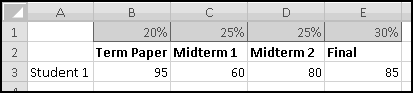
You should find an overall grade of 79.5.
Now imagine the Dean demands that the final count for 50%, each midterm 20%, and the term paper only 10%. All you have to do is change the weights in row 1, and your whole grade sheet will be updated!
Imagine further that you need to give a third midterm. Highlight column E, right-click, and choose Insert.
The final exam and grades will both shift one column to the right, leaving a blank spot for your third midterm. Even better, your SUMPRODUCT() arguments will have automatically expanded to B$1:F$1 and B3:F3. This means that as soon as you fix the weights and add in the third midterm grades, the overall grades will be correctly calculated.
This only works because you inserted a column in the middle. If you'd added the column to the left or to the right of the existing grades, the formulas wouldn't have expanded, and you'd have to fix them by hand.
Tells you how many are in your list. If you add more numbers, or if you delete some of the numbers, those changes will automatically be reflected. If your column has a header then (unless the header is a number itself) it won't be counted.
If you select a range of cells, Excel will show you statistics at the bottom right of the window.
As mentioned earlier, computers can't actually generate random numbers. Instead they produce numbers that "seem" random. One common way of doing this involves what's called a "linear congruential generator," which we're going to build.
The procedure is not terribly complicated. We start with a number, called a "seed." We then multiply it by a constant factor, add a different constant factor, and MOD() the result by a third constant factor.
For instance, a really simple (and not very good) generator takes the seed, multiplies it by 29, adds 3, and MOD()s the result by 32. It then uses the result as the next seed and repeats.
Copy or fill this formula all the down to B50.
You can check that after 32 numbers, the entire sequence starts to repeat. And that was with a good choice of parameters. If instead we'd multiplied by 4, we would have quickly gotten stuck on 31 forever:
In a real application, we'd use much larger numbers. I got the following parameters from the Wikipedia article "Linear congruential generator."
Change to these parameters, and copy the formula in B7 all the way down to B10006, to generate 10,000 pseudo-random numbers. They're all between 0 and 4294967295, which isn't terribly useful for applications. It would be more useful if they were between 0 and 1, which will be the case if we divide them by the modulus.
We don't yet know enough statistics to investigate "how random" these numbers are, but we can check their average, which we'd expect to be approximately 0.5 if these numbers were really uniformly drawn from [0,1). If you check
You'll find that it's 0.497413778. Try changing the seed and see what happens to the average.
Probably you'd never need to create your own pseudo-random number generator. The ones included with Excel (which we'll explore in later chapters) work well enough. But if you ever needed a reproducible set of pseudo-random numbers (for instance, if you wanted someone to be able to duplicate your analyses), then you might have to generate your own.
Here in the United States we have a progressive income tax. As your income increases, you pay a higher tax rate.
It's important to understand how marginal tax rates work. Each tax rate applies only to the range to its left. If your taxable income is $10,000, you pay 10% income tax on the first $8,375, and you pay 15% only on what's left in the 15% bracket. If your taxable income is $500,000, you pay 35% tax only on the amount above $373,650; the income below this is taxed at the different rates shown in the table.
We're going to build a spreadsheet to calculate tax liability. We'll start by putting the above data into Excel. We'll also include a cell to input our income, which we'll assume is $50,000 to start, and a cell to output our tax liability:
If we wanted to be fancy we'd do our computations all at once, but things will be clearer if we break them up into several steps:
To start, in F1 let's add the label "Income in Bracket." Then in F2 we need to compute how much of our income lands in the first bracket. If the total income is less than $8375, all of the income falls in the bracket. If the total income is greater than $8375, only $8375 of it falls in the bracket. This means the formula for F2 needs to capture "whichever is less: our income or $8375." And since the brackets might change, rather than hardcoding $8375, we'll point our formula to D3, where it lives:
The tax for this bracket is the marginal rate multiplied by the amount in the bracket, so (after adding the label "Tax" in G1) the formula for G2 should just be
In order to compute how much income falls in subsequent brackets, it will be helpful to use column H for "Income Left." After you put that label in H1, you'll need the formula
in H2.
The second bracket will require slightly different formulas. The income falling in this bracket is the smaller of the size of the bracket and the income left to be taxed. That is, the second bracket covers the next (34000-8375)=25625 of income. If there's less income than that remaining, we put all of what remains into this bracket. If there's more, we'll put only the 25625. That means the formula for F3 is
The formula for the tax you can just copy down (it's still the marginal rate multiplied by the amount in the bracket). And the new "income left" will have to be the previous "income left" less whatever we've taken out in this bracket. So the formula for H3 will be
This same reasoning (and hence the same formulas) should work for all but the last bracket. So we can copy or fill them down all the way to row 6.
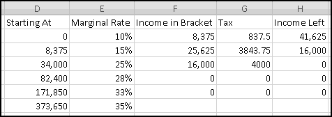
The last bracket, however, will need a different formula in column F, because it has no stopping point. The income in the last bracket is simply whatever's left, which means the formula for F7 is
The Tax and Income Left formulas are still the same, so they can be copied down.
Finally, we can figure out the tax owed. It's just the sum of the taxes for each bracket. So the formula for B3 is simply
You can give it a nice comma format if you like.
Try changing the income amount. Try 5,000. Try 100,000. Try 500,000. Does it work the way you expect?
In practice this isn't how you'd compute taxes. A simpler way would be to pre-compute the tax amounts at the bracket boundaries and then just add the last amount.
So you might build a spreadsheet that already "knew" the tax on an income of 34,000 would be 4,681.25. Then it would notice that our 50,000 income fell in the 34,000 to 82,400 (25%) bracket and just compute the tax as
4.681.25 + 25% * (50,000 - 34,000).
Unfortunately, we don't yet have the Excel expertise to compute taxes this way. Luckily, the way we did it works just as well (and is just as depressing).
Sometimes when you go to stores they'll have a take-a-penny jar by the cash register. The idea is that if your total is something like $4.03, you can take 3 pennies from the jar instead of having to get lots of coins back from your $5 bill. Conversely, if your bill is $4.96, you can put your change in the jar instead of hanging on to 4 cents that will only get lost in your couch anyway.
Your friend works at one of these stores, and all day long he watches how many pennies each customer leaves or takes. One day he hands you the list of transactions and asks you to find out the most pennies that were in the tray at any one time:
We'll use a spreadsheet to model the take-a-penny jar. In column A, we'll keep track of the transactions. And in column B, we'll track how many pennies are in the jar.
The first thing to observe is that the number of pennies in the jar at any given time is equal to the sum of the transactions up to that point. After the first customer puts in 3 pennies, there's 3 pennies in the jar. After the next customer puts in 4, there's 3+4=7. After the next one takes out a penny, there's 3+4-1=6 pennies. And so on.
There are two ways to capture this in Excel. The first is to use the SUM() function and $ signs. In B2, we want to sum just the value in A2. In B3 we want to sum A2 and A3. In B4 we want to sum A2, A3, and A4. And as we keep going, in every row we want to sum the cells in column A starting at row 2 and ending at the current row. This means the formula to put in B2 is
The missing $ on the last 2 means that when we copy this formula down it will reference A$2:A3, A$2:A4, and so on, just as we want. Enter the formula in B2 and copy it down.
The little green triangles mean that Excel is trying to second-guess us. If you click on one of those cells and click on the hazard flag that appears, you'll see why:
This is Excel's way of telling us that there are nearby numbers that aren't included in our SUM(). Since this is by design, ignore it. (Or dig into the menus and disable this warning, if you feel like living dangerously.)
will work and tells us that at one point there were 8 pennies in the tray. You could also use
But if you decide to add more transactions at the bottom this formula won't see them. Later on we'll learn more subtle ways to build formulas that shrink and grow as necessary, but for now just MAX() the whole column.
There's another way to do this. Delete the formulas in column B so we can start over. After the first transaction, the running total is equal to the first transaction, so enter the formula
in cell B2.
After each subsequent transaction, the new total is just the new transaction added to the previous total. So in cell B3, use the formula
and copy it down. It's easy to check that we get the same result as before.
Additionally, there are other "running total"-type computations that have no analogue of the SUM() function. For instance, you might want to concatenate a column of words into a list. As we'll see later, there is a CONCATENATE() function, but it doesn't work on arrays. The only way to build such a list is to use the second approach: start with the first word and then build a "running list" by concatenating one additional word in each row.
In short, you should understand both of these methods, so that you can use whichever is most appropriate.
If ever you want the rank from smallest to largest (so that the smallest number in the array is 1, the second-smallest is 2), you can give RANK() a third input of TRUE. If the third input is FALSE (or if you only use two inputs), you'll get largest-to-smallest.
When we discussed sorting, we pointed out that it's not always a Thinking Spreadsheet thing to do, because sorted data has a tendency to become unsorted when it changes.
For instance, imagine that five of your friends are raising money for your favorite charity. As the resident expert in Thinking Spreadsheet, they've asked you to keep track of their fundraising.
You could sort it and find that Barbara had raised the most money. But then if Alex emailed you and said he'd now raised $100, your data would be unsorted again once you made the change. To keep the list in order, you'd have to remember to re-sort it every time you updated the numbers.
Instead, we'll create a copy of the table that re-sorts itself when you change the original data. To start with, over to the right, let's put labels 1 to 5 to represent the rankings:
Try changing the numbers and making sure that the rankings change accordingly.
You might object that this spreadsheet only "sorts" the amounts. It doesn't tell you who is the top fundraiser. This is a good objection. Unfortunately, we haven't yet learned enough to add that functionality. So save this spreadsheet somewhere. We'll come back and add more features soon enough!
Start building spreadsheets, and pretty soon you're going to run across the need to use dates. If you're doing accounting or financial modeling, you'll need to know the dates of your cash flows. If you're building a model to beat the stock market, you'll want to know the dates of historical prices. If you're building a project schedule, you'll need dates. If you're making travel plans, you'll need dates. No matter what you do, you'll need to use dates!
In Excel, a date is just a number with special formatting. The documentation calls it a "serial number," which makes me think of the army or prison, so we'll just call it a number. If you type 1/1/2010 into a cell, you should see 1/1/2010, but behind the scenes Excel is storing the number 40179. Each day corresponds to an increase of 1 in the number, so that 1/2/2010 is actually the number 40180, and 12/31/2009 is actually the number 40178.
You can see the number underlying a date by changing the format of its cell to "General." Conversely, if you're seeing the number, you can show it as a date by changing the format to "Short Date."
This representation enables easy date arithmetic. If you add 14 to a date, you'll get the date that comes 14 days later. If you subtract one date from another, you'll find how many days apart they are. However, you can't do this arithmetic all in one line. If you have 1/1/2010 in cell A1, then A1+14 equals 1/15/2010, as you'd expect.
equals 14.0005. (You may get more or fewer decimal places.) Because of the equals sign, Excel treats the slashes as division operators. It's as if you'd input
which correctly outputs 1/15/2010.
If you're just typing dates into cells, then it's much easier to input them directly. But when you need to specify them directly in formulas, don't forget the DATE() function.
When typing in dates directly, you can sometimes take shortcuts by leaving off the year. For instance, if you type 1/1, Excel will guess that you mean the current year. In 2010 it will automatically use the value for 1/1/2010. In 2011 it will automatically use the value for 2011. And so on.
You can also abbreviate the year. If you type 1/1/10, Excel will understand that you mean 2010. (Unless you mean 1910 or 2110, in which case it's misunderstanding what you mean.) In my copy of Excel 2007, 1/1/29 gets converted to 1/1/2029, while 1/1/30 becomes 1/1/1930. This behavior will change maybe in Excel 2025, so if you're using that version be extra careful.
Now that we know arithmetic and dates, we can use Excel to balance our checkbook. (This will be the first time I've balanced a checkbook in approximately 20 years.)
Our very simple checkbook register will have only 6 columns.
And we'll fund our account by depositing a paycheck for $500. Let's say we did this on 1/2/2010:
To benefit from using Excel, we should really use a formula to compute our balance. Which formula should we use? Well, after any transaction, we compute our balance by taking the previous balance, adding any deposits, and subtracting any payments.
You can see that it updates the Balance correctly. Enter the following transactions:
Copy the formula in column F down as you go. Hopefully you'll end up with something like this:
Don't feel bad if this example seems a little bit simple. It is a little bit simple. (If this example seems really, really complicated, then you should feel sort of bad.)
So you need to be careful. TODAY() will update its value every time you recalculate. In some cases this might be desired behavior. But sometimes it won't!
Sometimes you need to extract parts of dates. For instance, if you've built a checkbook register, and you want to count up how many checks you wrote in October, or in 2008, then you'll need a way to turn that date (which, remember, is really a number like 40189) into a month or year.
Excel provides functions for this, with quite unsurprising names. YEAR(), MONTH(), and DAY() will return the three components of a date. If you put the date 1/15/2010 in cell A1, then YEAR(A1) equals 2010, MONTH(A1) equals 1, and DAY(A1) equals 15. These functions are all very simple, but they're very handy, so don't forget them.
Don't feel bad if you can't remember all this. Even I have to double-check how the return values work each time I use WEEKDAY(), and probably you will too.
Either way, in most years, the first "week" won't have 7 days in it. For instance, 1/1/2010 is a Friday, which means that (according to WEEKNUM) the first "week" of 2010 only contains 2 days. You can check that WEEKNUM(DATE(2010,1,3)) is equal to 2. If you ever use WEEKNUM(), be aware of this.
There are a few more date functions you might find useful. The first is EDATE(), which takes two inputs, a date and the number of months to "add" to it, and returns the resulting date. (If the second input is negative, it subtracts that many months.)
equals 11/1/2009. If there aren't enough days in a month, it will go as far as it can. So EDATE(DATE(2010,1,31),1) equals 2/28/2010, since there are only 28 days in February.
It's most common to use this with the first day of each month. In that case EDATE() always outputs the first day of the resulting month.
means "the end of the month that's two months after 1/1/2010," which is 3/31/2010. If you ever need the first day of a particular month, you can get it by adding 1 to the previous EOMONTH().
Although it's less common than working with dates, sometimes you'll want to use times as well. Like dates, times are just numbers with special formatting. Since a numeric difference of 1 represents one day, it also represents 24 hours.
You can enter times by typing them in directly in a variety of formats. To represent "11 in the morning," you could type 11:00, 11 am, 11:00 AM, 11:00:00, or several other formats. You can enter time intervals in the same way. 2:00 means either 2 am or 2 hours. For intervals less than an hour, make sure to use a leading 0. You'd use 0:15 to mean either 12:15 am or 15 minutes. For intervals less than a minute, use two leading zeros. 0:0:10 (or 00:00:10) could mean either 10 seconds after midnight, or just 10 seconds.
Like dates, you can't enter times directly into formulas. Excel will interpret the colon as signifying a range of rows. For instance, in the formula
Excel thinks your "time" means rows 1 to 15.
Suppose a movie starts at 2:45PM and ends at 4:10PM. How many minutes long is it? Well, you can figure out the interval using
This produces the result 1:25AM, which is unfortunate formatting for 1 hour and 25 minutes. But to turn that into minutes requires some extra work.
Here 1:25AM is really just special formatting applied to the number 0.059028, which represents the number of days this time interval lasts. (You can see this by changing the format of the cell to "General".)
Each day has 24 hours, and each hour has 60 minutes. Therefore 0.059028 days is the same as 24 * 0.059028 hours, which is the same as 60 * 24 * 0.059028 minutes. So using this "days to minutes" approach, you'd use the formula
You can check that this gives 85 minutes. If you needed the length in hours, you would multiply only by 24. And if you needed it in seconds, you'd multiply by 60 * 60 * 24.
This makes it easy to represent date-time combinations. For instance, to represent 1:15pm on 1/1/2010, you could use the formula
When you do time arithmetic, you need to be careful about the interplay between dates and times. For instance, if a movie starts at 10:30 PM and ends at 1:15 AM, how many minutes long is it? A naive first approach might be
Unfortunately, this formula reveals that the movie is -1275 minutes long. That's because Excel considers all times entered using TIME() to be on the same day. So TIME(1,15,0) occurs early in the morning, and TIME(20,30,0) occurs late at night. A movie that started late at night and somehow ended early in the morning on the same day would indeed have a negative run time.
What we're really asking here is "how many minutes from 10:30 PM to 1:30 AM the next day." To add a day, we simply add 1. If our movie starts at TIME(22,30,0), then it ends on the next day at TIME(1,15,0)+1. So the formula should be
which gives the correct answer, 165 minutes.
Recall that Ctrl-; inserts the current date as a value. Similarly, Ctrl-Shift-; inserts the current time as a value. If you want the current date and time as a value, you have to use Ctrl-; then Space then Ctrl-Shift-;.
You've just gotten your first gig as a Thinking Spreadsheet consultant. Your client has asked you to build a spreadsheet to track the time you spend working on her spreadsheet-related problems, so she can figure out how much she owes you. You're charging her the discount rate of $20/hour, in the hopes that she'll write a nice recommendation on your LinkedIn page.
What will you need on your timesheet? Well, you'll want each entry to have a Start time and a Stop time. A comment about what you were working on would be nice. Then a column to figure out how many hours you worked, and another column to compute the pay for that line item. Finally, a running total to keep track of how much you've earned so far.
Her problem turns out to be pretty simple. On 4/6/2010 you spend from 1:30pm to 3:45pm trying to understand the error-filled documentation she gave you. On 4/7/2010 you start looking things up in Thinking Spreadsheet at 11:30pm, and you get so enthralled that you don't put the book down until 3:17am. And then on 4/8/2010 you spend from 11am to 2:20pm building a spreadsheet that solves all of her problems.
Remember that to compute hours, we simply multiply the time difference by 24. So our formula for D2 should be
Enter those formulas and copy them down.
Since we'll be showing this to her, let's pretty it up as well. Give the "Hours" column the "Comma" format, and give the "Pay" column the "Currency" format:
Finally, we need to figure out our cumulative pay. How do we compute that? We can use the "running total" technique we learned earlier. In row 2 we just want the value of E2. In row 3 we want the sum of E2 and E3. And in row 4 we want the sum of E2, E3, and E4.
A different way of saying this is that we want to sum the numbers in column E, starting in row 2 and ending in the current row. Since we are clever at $-ing, we know that the formula to put in F2 is
The missing $ on the last 2 ensures that ending row of the array will increase as we copy the formula down.
You send her this spreadsheet and a bill for $187.33. Steak dinner on you! And then you realize that you should have planned ahead and built the spreadsheet in a way that would have make it easier for you to raise your rates.
A common class of yes/no questions is comparisons. Are two things equal? Is one bigger than the other? Excel makes it easy to ask questions like this.
That looks weird. It's a formula, so it has to start with an = sign, and then it tests for equality, which involves another equals sign. At this point we know that the initial = tells Excel "this cell contains a formula you'll need to calculate." In this case, the formula is 1=1, and if you try it out, you'll find that it's TRUE. (Hopefully you could have figured this out without Excel.)
If you do, you'll find that Excel is testing whether values are equal, not whether formulas (or formats) are equal. If A1 contains a complicated formula that outputs 1 and B1 contains the value 1, then A1=B1 is TRUE. Equality means equality of values. There's no easy way to test equality of formulas or formats.
It's more common to test equality of references or function values. Here are some examples:
This should give you an idea of the sorts of equality tests you can do.
Besides testing for equality and "unequality," you can also test for various inequalities.
For numbers, it means exactly what you'd expect. For text it's also pretty sensible: one text value is less than another if it comes before it in alphabetical order. As with equality, case doesn't matter. For instance, you'd find the following order:
Mixtures have the same order that we learned when we discussed sorting: any number is less than any text, and any text is less than a Boolean. This means that TRUE is greater than any value (except for TRUE, which it's equal to).
You shouldn't be comparing mixed data very often. If you build your spreadsheets carefully, then cells you expect to have numbers in them will have numbers in them, not text or Booleans. Cells you expect to have Booleans in them will contain Booleans, not numbers or text. Cells that you expect to have text in them might have numbers or Booleans in them -- a list of nicknames might include not only Bubba and Books but also (conceivably) 12 or TRUE. If you're careful you'll type them as text, like 12 or TRUE, but most people aren't that careful. In this unlikely case, don't be surprised if you get unexpected results.
will return the correct message if there's a Boolean in A1.
If you want, you can leave out the third input, in which case Excel assumes you want it to be FALSE. There are circumstances where it's simpler to do so, although it's always acceptable to just specify it as FALSE when that's what you want it to be.
It's worth thinking through this one in detail. Although previously we've analyzed complex formulas from the inside out, we'll analyze instances of IF() from the outside in.
That is, if A1 is not equal to 0, the inner function will return the value "greater than 0." What if the value in A1 is less than 0? In that case it's also not equal to 0. Won't returning "greater than 0" make our formula wrong?
Think about the odometer in an older car. It has a series of dials, each containing the numbers from 0 to 9. As you drive the car, the rightmost dial turns. After it reaches 9, it resets to 0 and the dial to its left increases by 1. After that dial reaches 9, it resets to 0, and the dial to its left increases by 1. This continues until all the dials have 9 on them, at which point the whole odometer resets.
We're going to simulate this "odometer pattern" in Excel. Not because you'd ever actually build an odometer in a spreadsheet. But because -- before it resets -- the odometer runs over every possible combination of digits exactly once, which is often a useful thing to do.
Let's think about the rightmost dial first. At each row it should increase by 1, until it reaches 9, at which point it should reset to 0. What formula should we put in E3? Well,
will add 1 to E2, then compute the remainder after dividing by 10. If E2+1 is 9 or less, the MOD() won't do anything to it. And if E2+1 is 10, MOD(E2+1,10) will be 0. This is exactly what we want.
The logic in column D will have to be slightly different. The digits in column D don't increase every row. They only increase when the digit in column E resets. What should we test for in column E? One thing we could test for is that the value in column E is equal to zero. Another thing we could test for is that the value in column E has decreased from the previous row.
Either one of these would give the correct condition. However, only one of these tests will also work in columns C, B, and A. It will take 10 rows before the number in column D increases from 0 to 1. Therefore the "dial" in column C can't consider whether column D equals 0; if it did, it would start increasing immediately. To Think Spreadsheet, we should favor the formula that will work in all the remaining columns. Therefore, in D3 we'll use
If the digit to our right is less than the digit above it (which means its dial has just rolled over to 0), add one to this dial and rollover if it has reached 10. If the digit to our right is not less than the digit above it, then don't change the value on this dial.
If you think about it, you'll see that this formula will work for all the remaining dials, so copy it to the left:
The odometer goes from 00000 to 99999, so it contains 100,000 different values. Since the odometer starts in row 2, its 100,000th value will be in row 100001. We'll go even one row further, in order to see the actual rollover, so we need to copy the formulas from row 3 all the way down to row 100002.
And our odometer is finished.
Now, in this example, where we have 5 dials, each with the numbers from 0 to 9, it probably would have been simpler just to look at the numbers 0 to 99,999 in a single column. However, we'll soon see that in situations with differently-sized "dials," we can do all sorts of fancy things.
Sometimes you need to combine logical conditions. Maybe you want to know whether the value in A1 is between 0 and 10. In other words, you want to check that A1>=0 and A1<=10. Perhaps you want to know whether the value is not between 0 and 10. This is the same as checking that either A1<0 or A1>10.
It's up to you which one you want to use; the Thinking Spreadsheet bias is always toward formulas that are easier to understand.
Some computer languages will do what's known as "short circuiting" and completely ignore inputs that they don't need to know. This lets you include possibly impossible conditions like dividing by zero, counting on them never to be evaluated. In such a language, the condition
Would work when A1 equals zero. Whenever the number in A1 is zero (or less), the first condition is FALSE, which means that whole expression must be FALSE regardless of the truth of the second expression, and therefore the second (illegal) expression would never even be evaluated.
Excel doesn't do this. If you try
When you import data into Excel, often it's not in the right format. For instance, suppose you want to analyze the locations of all IKEA stores. Their website has a convenient list, but it looks like this:
To start with, select all of the store listings, Copy, and Paste-Special-Text into Excel.
There's an extra space in front of "Arizona." If this had happened throughout the dataset, we'd use a formula to fix it, but since it just happened once, click in the cell and get rid of it manually.
What we want is to have city in one column and state in another. We already have all the cities in column A, so if we could just add the states in column B (and then get rid of any junk remaining), we'd be done. So let's start by labeling column A "City," column B "State," and column C "Keep?"
Your first instinct might be to get rid of all the blank lines in column A. But those blank lines are the only thing telling us when there's a new state. In fact, except for B2, which (as is often the case with the top cell in a column of formulas) needs its own formula (=A2), the logic in column B needs to be "if the cell in the previous row in column A is blank (i.e. equal to the empty string ""), change the state to the column A value in this row; otherwise, keep the same state from the previous row."
You can't use Double-Click-Fill because it will stop each time there's a blank cell in column A. So use a Drag-Fill or a Copy-Paste:
Now we need to decide which rows we want to keep. We only want rows with proper City-State data. This means we need to throw out row 2 (which again needs its own handling), rows where column A is blank (obviously), and rows below where column A is blank (which have the state appearing as the "city").
Why this way? We wanted to throw out C3 if A2 was blank OR if A3 was blank. That means we want to keep C3 when A2 is not blank AND A3 is not blank. (This rule is called De Morgan's law, and Wikipedia has a nice article on it.) An alternative (logically-equivalent) way of doing the same thing would be
We've now reached one of the occasions where sorting data is a good thing. That's because we want to permanently transform this data, and we never plan on updating the pre-sorted data.
A different problem with sorting, though, is that it often breaks formulas. Our formulas in columns B and C both reference "the row above me." Sorting will change each cell's "row above me," which means that sorting will break our carefully constructed spreadsheet. Therefore, in a situation like this, before we sort, we need to Copy-Paste-Special-Value any formulas that have "row above me"-style references. Here, that's all of columns B and C. Copy-Paste-Special-Value them now.
Finally, we're ready to sort our data. Choose "Sort" on the Data ribbon, and make sure "My data has headers" is checked.
Now we can delete all the data we don't need. First scroll down and delete all the rows where "Keep?" is FALSE. Then you can delete the "Keep?" column, since we don't need it any more. Widen the two remaining columns. And after only a few steps, we finally have our data in a format we can use.
A slightly different (but also common) problem you find in data is that a field might display its value only when it changes:
Here, Sunrise and Tampa are also in Florida, which is signified by column A being left blank. We can again use IF() to transform our data to have State in every row:
Why do we prefer the transformed data? It's much more useful for analysis. If we want to count how many stores are in Florida, we really need each Florida store to be labeled as such. Later, when we learn about Pivot Tables, we'll see that they require their data in this "every value in every column" format, and so it's important to know how to produce it.
There are a number of Excel functions that you can use to check that cells have certain types of values. There's two important reasons why you might want to do this:
Cells will be counted if they contain either the value itself or a formula that evaluates to the value.
Text values can also contain wildcards. A ? will match any one character, while a * will match any number of characters (including none at all).
In practice, the most common use of wildcards is the final *, as in the second example above. For instance, the criterion "A*" would COUNTIF() all words beginning with the letter A. However, you may find some of the other possibilities useful, so keep them in mind.
The tricky part comes when we want to use a reference in our comparison. You can't put a reference in quotes, because Excel will treat it as text. For instance,
The comparison examples above don't cover all the conditions you'd like to be able to COUNTIF(). For instance, you can't use COUNTIF() to count cells that contain values greater than or equal to 0 but less than 1. You can't use COUNTIF() to count cells that contain either the text "thinking" or the text "spreadsheet". You can't use COUNTIF() to count cells that contain only numbers or cells that contain only words that are 3 letters or less.
Cells that have values greater than or equal to 0 can be split into two non-overlapping groups:
So, to count the cells in A1:A100 that are greater than or equal to 0 and less than 1, we could use
A cell can't contain both the value "thinking" and the value "spreadsheet". Therefore, to find the number of cells that contain either value, we can just add up the numbers of cells that contain each value:
This method doesn't work if your categories overlap. If you wanted to count values that start with "spread" or end with "sheet",
would double-count "spreadsheet" (as well as "spread the bedsheet" and anything else that started with "spread" and ended with "sheet").
If you have only one or two complicated conditions to check, often it's easiest to add them to your data in a new column.
For instance, imagine you need to count how many integers are in A1:A100. To be an integer, first a value must be a number, and then it must be equal to INT() of itself.
and then copy down. (You need to use the IF(ISNUMBER()) so that you don't try to INT() something that's not a number.)
However, if you have a lot of different conditions to check, you'd have to add a lot of extra columns, which wouldn't be very Thinking Spreadsheet.
In Excel 2007 and later, there is a COUNTIFS() function, which allows you to specify multiple criteria and count cells that meet all of them. We'll discuss COUNTIFS() briefly in a few sections, but I recommend against using it. [In my old age I have gotten soft and no longer object to COUNTIFS().]
For instance, if in column A you have a list of names, in column B you have their hometowns, and in column C you have their incomes, you can use SUMIF() to answer questions like "What's the total income of people whose names start with 'J'?" and "What's the total income of people who are from Seattle?" and "What's the total income of people who aren't named 'Bob'?"
Which means "add up all the values in B1:B10 where the corresponding value in A1:A10 is TRUE." If only A3, A5, and A8 are TRUE, the output will be equal to B3+B5+B8. If all the values in A1:A10 are TRUE, the output will be equal to SUM(B1:B10). If none of the values in A1:A10 are TRUE, the output will be equal to 0.
The sum range, by the way, is optional, and if you omit it Excel will just use the initial range. This allows you to do things like the following:
Which will add up all cells in A1:A10 that have values greater than 7. You could also type =SUMIF(A1:A10,">7",A1:A10) if you like, but the shorter way is shorter.
If column A contained TRUE/FALSE values and column B contained the numbers you want to average, you'd use
to find the average of the numbers in column B with TRUE in column A.
A friend of yours has just opened a casino, and he's designed a slot machine themed on his superstitious love of the number seven. He wants the slot machine to have the following features:
A problem this size is amenable to solving via brute force. We can simply use Excel to catalogue every possibility, then use this catalogue to compute the statistics we're interested in.
How many possibilities are there? Each reel can take 5 different values, so there are 5 * 5 * 5 = 125 possible combinations. Based on our assumptions, every possibility is equally likely.
Therefore, if we want to know how frequently a certain condition occurs, we simply count how many times it occurs and divide by the total number of possibilities. To find out how frequently the first dial shows a 3, we count that there are 25 outcomes where this happens, which means it happens 25/125 = 20% of the time. (We could also have figured this out simply based on the knowledge that the first dial has 5 numbers, each of which has an equal chance of showing up.)
To list out all the possibilities, we'll use our odometer technique. Start by designating a column for each reel, and by filling in the first combination: 1-1-1.
When we were trying to mimic a car's odometer, we needed the rightmost dial to "spin fastest" and increase at every step. In general, when we're using an "odometer" to catalogue possibilities, it doesn't matter which order we "spin the dials," as long as we produce each possible combination exactly once. So in this case we'll work left to right. (You could work right to left again here, and you'd get the same ultimate results, but your "spins" would get listed in a different order.)
In A3, we'll want to increase the value from the row above, making sure that after 5 we return to 1. Previously we used MOD(), but that would reset the reel to 0. Since we want our reel to reset to 1, it will be easier to use IF(). The logic is simple: if the previous value is less than 5, add 1 to it; otherwise reset to 1.
There are many ways to write this. But since there are 3 conditions to check, we'll have to use a nested IF().
Convince yourself that this function captures the logic we've described, and then copy it over to C3. Now copy the formulas in row 3 all the way down to row 126. (Since we have one row of headers, our 125 possibilities will go from rows 2:126.) Make sure your slot machine simulation ends with the combination 5-5-5:
Now, for each row, we need to figure out the payout. If all three numbers are the same, the payout is the number. If all three numbers sum to 7, the payout is 7. And otherwise the payout is 0. Since the two payout conditions are mutually exclusive (if the dials all match, they can't add to 7), we don't have to worry about both being TRUE, but in general we might.
You should convince yourself that in every possible case these produce the same answer. We'll add "Payout" in column D, use the second formula in D2, and then copy it down. We just need to translate its conditions into Excel-speak.
First, the test for "reels all match." Once you know what value is in column A, you need the value in column B to be the same, and also the value in column C to be the same. That is, the test can be written as AND(A2=B2,A2=C2).
Double-Click-Fill the formula down, and now we're ready to answer your friend's questions. We'll compute them over to the right.
First, he wants to know what percentage of the time a player would win. A player wins precisely when his payout is greater than 0. Therefore we need to know what fraction of the time the value in column D is greater than 0. We'll use COUNTIF() to find how many of the outcomes have positive payout, and we'll use COUNT() to find out how many outcomes there are in all. (We already know there are 125, but as part of Thinking Spreadsheet we prefer not to hardcode numbers that might change if we changed part of our model.)
So players will win 16% of the time, and the average payout is 96 cents. Since it costs a dollar to play, your friend's average profit will be 4 cents per play. Not a bad business to be in!
Does any subset of the numbers 2,5,7,12,19,21 sum to 48? As we'll see, we can use our "brute force odometer" method to check every subset. How many subsets are there? If a set has N elements, then there are 2 * 2 * ... * 2 (N times) possible subsets. Here, there are 6 elements, so there are 2*2*2*2*2*2=64 possible subsets. That's a small enough number that we can check it by brute force.
First, though, we need to decide how to represent subsets. For instance, {2,19} is a subset (that sums to 21), but is not written in a very Excel-friendly representation. A more Thinking Spreadsheet way begins with the observation that each subset represents a sequence of six yes or no "Include?" decisions. The subset {2,19} corresponds to the decisions [Yes,No,No,No,Yes,No]. If we look at every possible combination of six Yeses and Nos, we'll see every possible subset of [2,5,7,12,19,21]. And if we use 1 and 0 to represent "Yes" and "No," then we just need an odometer with 6 dials, each of which contains only 0 and 1.
To make it even more clear, we'll put the 6 elements in row 1, with "Include?" labels underneath, and with our first subset "None" entered in row 3 as all zeroes:
At this point you should be pretty familiar with what to do. In cell A4, we'll need the formula
Copy this over to the right and then copy all the formulas down to row 66 so that we have all 64 subsets represented.
Now we need to compute the sum of the elements in each subset. One of the benefits of using 1 to represent "this element is included" and 0 to represent "this element is not included" is that we can simply multiply it by the element's value and then sum up to find our result. That is, if there's a 1 in column A ("the 2 is included") then we add 2 (which is 1*2) to our sum. If there's a 0 in column A ("the 2 is not included") then we add nothing (which is 0*2) to our sum.
Therefore, thanks to the way we've set things up, the sum of the elements in the subset corresponding to row 3 is
If you have more than 10 or so elements in your set, brute-forcing the subsets is probably not an efficient way to solve your problem, and you should try to come up with something more clever.
A histogram is a way of summarizing data by counting how many elements fall into certain "buckets." For instance, if you had a list of 1000 popular vocabulary words, you could create a histogram showing how many start with each letter of the alphabet. Or you might poll the attendees at your family reunion and count how many were born in each decade. You could look at a football roster and count how many players (claim to) weigh less than 200 pounds, how many weigh more than 200 but less than 250, how many weigh more than 250 but less than 300, and how many weigh over 300.
Excel has an add-in that will generate (static) histograms. This means that if you generate a histogram using the add-in and then modify your data, the histogram won't reflect your changes. This makes the histogram add-in not very Thinking Spreadsheet. Fortunately, it's not difficult to build dynamic histograms that update automatically when you change your data.
To start with, we need some data. Let's download the Denver Broncos roster. You can either look for the latest version on denverbroncos.com or (if you want your numbers to match mine) grab the version I used from ThinkingSpreadsheet.com.
Highlight the active roster and copy it, and then Paste-Special-Text it into Excel. After bolding the headers and resizing the columns, it should look like this:
Why did we start with a zero? Well, the way we described most of our buckets was "more than __ and less than __." Our "under 200" bucket can also be described as "more than 0 and less than 200." What about our "over 300" bucket? There we have two options. We could add an unreasonably large number below the 300 to make our bucket "more than 300 but less than 10000." Or we could use a different formula for the last bucket. We'll do the second.
To start with, in K2, we need to count players whose weight is at least 0 but less than 200. Another way of saying this is "greater than or equal to 0, but not greater than or equal to 200." As we've seen, the formula for this is
(Your range and results may differ slightly depending on how the Broncos change their roster.)
In K5 we'll need a different formula, since we only want "greater than or equal to 300."
The benefits of doing things this way are immediate. Imagine you decide instead you want the buckets to be "less than 225," "225 to 275," "275 to 325," and "over 325." By changing the labels the formulas will update automatically:
And when Robert Ayers puts on an extra 2 pounds and moves into the "275 to 325" bucket, your histogram will adjust as soon as the data does. That's Thinking Spreadsheet!
Now that you've got this data in Excel, you can ask all sorts of interesting questions. For instance, what's the average weight of the Broncos quarterbacks? The abbreviation for quarterback is QB, so a good idea seems to be
See the space in the formula bar between QB and the cursor? That means there's extra (invisible) spaces in the data. Tim Tebow's position is not stored as "QB", it's stored as "QB ". Our SUMIF() that's looking for "QB" isn't finding any matches.
What can we do? One thing would be to clean the data. If we're going to make a lot of use of the data, we should probably do this. But a simpler fix is to change our criterion to "QB*". This looks for all positions that start with QB, and doesn't mind the extra spaces at the end. (Of course, this only works because there are no other positions that start with QB. If football added a new QBX position we'd start getting wrong answers)
This time you'll find that it's 235. When you source data from outside Excel, it's not uncommon to end up with phantom spaces, so check and compute accordingly.
Hang onto this Broncos roster, we'll use it some more later.
Here the conditions to be checked are in A1:A10 and B2:B11, while the cells to be summed are actually in C3:C12.
As a rule, we will never use SUMIFS() and COUNTIFS(). Array formulas (which we'll get to eventually) can do all the same things and more, and they won't make our spreadsheets unusable by our friends running older copies of Excel. However, you might encounter them, so know how they work. [At this point in time no one is using older copies of Excel anymore, so use SUMIFS() and COUNTIFS() if you like.]
Now that we're experts at Boolean formulas, we can discuss the Custom Data Validation option, which lets you specify an arbitrary formula that has to be true for an input to be valid.
You can also validate based on other cells. For example, you could only allow someone to enter a value in A2 if A1 equals TRUE:
Any formula that produces a Boolean, you can use as your Custom Validation. Just make sure that it does what you want and that you give a helpful error message when the validation fails.
So far we've focused mostly on numbers and Booleans. Now we'll turn our attention to text.
Sometimes you need to create specially formatted text representations of numbers. Conversely, sometimes you need to turn text representations of numbers back into numeric values.
There are many, many complicated things you can specify using the format string; we'll stick to the simplest and most useful ones.
A "0" in the text string represents a digit in your number. A period "." represents the decimal point. Digits to the left of the decimal point represent a minimum number of places to display, while digits to right of the decimal point represent an exact number of places to display (with the number rounded if necessary).
Each of the outputs listed above is text. If you try to do arithmetic with them, you'll get an error.
If you want the text to represent a percentage, you can include a % sign in the format string. Similarly, if you want your output to be separated by commas, just include them in the format string:
| Function | Output |
|---|
| TEXT(23.45,"0%") | 2345% |
| TEXT(23.45,"00.0%") | 2345.0% |
| TEXT(23.45,"00,000.00") | 00,023.45 |
| TEXT(23.45,"000,00.0") | 00,023.5 |
Notice that you can be a little sloppy about where you put the comma, and Excel will still use it in the normal way (every 3 digits to the left of the decimal point). Don't take this as license to be sloppy, though. Being sloppy isn't Thinking Spreadsheet at all.
Dates
To convert dates to text, you have even more options.
| Format | Example | Output |
|---|
| 2-digit year | TEXT(DATE(2010,1,2),"YY") | 10 |
| 4-digit year | TEXT(DATE(2010,1,2),"YYYY") | 2010 |
| Short month | TEXT(DATE(2010,1,2),"M") | 1 |
| Zero-padded month | TEXT(DATE(2010,1,2),"MM") | 01 |
| Short month name | TEXT(DATE(2010,1,2),"MMM") | Jan |
| Long month name | TEXT(DATE(2010,1,2),"MMMM") | January |
| Short day | TEXT(DATE(2010,1,2),"D") | 2 |
| Zero-padded day | TEXT(DATE(2010,1,2),"DD") | 02 |
| Short weekday | TEXT(DATE(2010,1,2),"DDD") | Sat |
| Long weekday | TEXT(DATE(2010,1,2),"DDDD") | Saturday |
You can also combine these with spaces, commas, dashes, and slashes. For instance,
=TEXT(DATE(2010,1,2),"DDDD, MMMM D, YYYY")
produces "Saturday, January 2, 2010" while
=TEXT(DATE(2010,1,2),"YYYY-DD/M")
produces (the not very useful) "2010-01/2".
Time
There are similar options to convert times to text: H and HH for hours, M and MM for minutes, and S and SS for seconds. If you're astute, you're probably objecting that M and MM are already used for months. This is true. If you use M (or MM) in combination with H or HH or S or SS, you'll get minutes; otherwise you'll get months.
For instance, if in A1, we put the formula
=DATE(2010,1,2)+TIME(8,3,0)
Which represents "8:03 am on 1/2/2010", then TEXT(A1,"hhmm") produces "0803", while TEXT(A1,"mm") produces "01". This is not intuitive, so it will probably slip you up at some point. Unless you never use TEXT() with time, in which case it won't slip you up at all.
VALUE()
The opposite of TEXT() is VALUE(), which takes one input, a text representation of a number, and returns the corresponding numeric value. You'll mostly use VALUE() for obvious text representations of numbers, like VALUE("34.58") and VALUE("2"). (Those examples are plainly pointless; in real life the inputs to VALUE() will be formulas that produce such obvious representations.)
If you give VALUE() a number, it returns that same number. And if you give it something that doesn't look at all like a number, you'll get a terrifically appropriate #VALUE! error.
If you give it a string representing a date-time, like "2010-01-01 6:00 AM", it will return the represented number, in this case 40179.25. There's also a DATEVALUE() function that will give you just the number representing the date (here 40179) and a TIMEVALUE() function that will give you just the number representing the time (here 0.8), but it's most common just to use VALUE().
CONCATENATE() & CONCATENATE()
One thing you often need to do with strings is concatenate them, or join them together. Excel provides two different ways to do this.
The first is the CONCATENATE() function, which takes as many arguments as you want to give it (within reason) and returns a string that consists of all of its inputs (or text versions of them) joined together. (It won't always convert numbers to text the way you want them to, so if you care about such things use the TEXT() function.)
The other option is the & operator, which you can use in a similar way to + or *.
| Example | Output | Alternative Using & |
|---|
| CONCATENATE(1,"me",3.5) | 1me3.5 | 1&"me"&3.5 |
| CONCATENATE(1+2,"you") | 3you | (1+2)&"you" |
| CONCATENATE("me",",","you") | me,you | "me"&","&"you" |
The & operator has very low precedence. If you left out parentheses and used 1+2&"you", you would still get the same result. However, since we are Thinking Spreadsheet, we include them.
Rep[ea]ting Text with REPT()
If you ever need to concatenate the same string to itself over and over again, you can use the REPT() function. It takes two inputs. The first is the string you want repeated, the second the number of times you want it repeated.
There's two somewhat common reasons to use REPT().
The first has to do with TEXT(). If you want the text representation of a number to show 10 decimal places, you can use
=TEXT(A1,"0."&REPT("0",10))
Our formula concatenates the string "0." with the string "0000000000" to get the format we want.
You could do the same to the left of the decimal point, and you could even make the number of decimal places depend on another cell or the results of some other calculation.
A second use for REPT() is "charts on the cheap." If you have a list of numbers between 1 and 100 in column A, in column B you can use between 0 and 10 "X" characters to represent them:
Since we divide by 10 and take INT() of the result, 87 will get 8 X's, 44 will get 4 X's, 13 will get 1 X, and so on.
This is a quick and dirty way of visualizing data without having to create a graph. Recent versions of Excel can do similar (and prettier) things with Conditional Formatting, but you might see (or use) this way as well.
Technique: Concatenating Arrays Using Running Totals
One shortcoming of the CONCATENATE() function is that it doesn't work on arrays. If you have a sequence of items in A2:A101 that you want concatenated, you'd like to be able to use CONCATENATE(A2:A101). However, like other formulas that don't really accept arrays as inputs, CONCATENATE() looks at the top left cell, making this equivalent to CONCATENATE(A2), which is not what you want.
In order to concatenate an array of items like this, we'll need to use our "running total" method.
To start with, let's say we have AFI's original list of the "Top 100 Movies of All Time":
We'd like one string representing all these movies, separated with commas. To get this, we'll build the string one movie at a time. To start with, in B2, we'll just take the first movie with the formula =A2.
Now in B3, we'll want to take the list-in-progress from the cell above, add a comma, and then add the next movie from cell A3:
Equivalently, we could have used CONCATENATE(B2,",",A3), although that would have involved more typing.
This formula should work for the rest, so we can just double-click-fill it down:
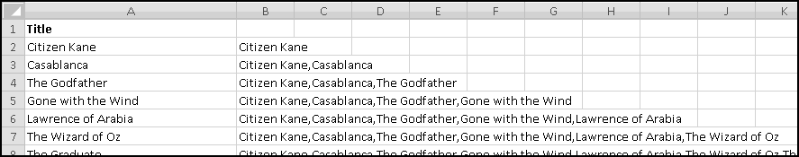
And then the string we want is in B101. The result is too long to visually check, but you could copy B101 and then paste it into (for example) Notepad to see that it worked.
CODE() and CHAR()
Computers don't actually understand words or characters. They only understand numbers. (Really, all they understand are 1's and 0's, but for pedagogical purposes we'll pretend that they understand numbers.)
In particular, your computer actually stores characters as numbers, in a computer-specific way. For instance, on my computer, the character 'A' corresponds to the number 65.
Excel contains a pair of functions to convert back and forth between characters and their numeric representations. CHAR() takes a number between 0 and 255 and returns the character represented by that number. If you give it a number outside this range, you'll get a #VALUE! error.
One possible use of CHAR() is producing characters that aren't on your keyboard. For instance, CHAR(200) is the character ''. But you probably won't use crazy characters like this in your spreadsheet, and so you won't use CHAR() this way.
Its converse is CODE() which takes some text as input and returns the number representing the first character of the text. In practice, you'll only ever give it one character, and you'll get back the numeric representation of that character.
This correspondence between characters and numbers varies computer-by-computer. What should always be true, though, is that consecutive characters will be represented by consecutive numbers. Whatever number CODE("A") happens to be, CODE("B") will be the number after it.
This means that if you have a letter in A1, the next letter is
CHAR(CODE(A1)+1)
This will work as long as the letter in A1 is not Z. CHAR(CODE("Z")+1) could be just about anything! (But if your computer is anything like mine, it's '['.) If Z is a possibility, then test for it.
Example: First Letters of Popular Names
Congratulations! You're having a baby! But your relatives are very superstitious. They want the kid to have a name that starts with a popular letter.
Luckily, the Social Security Administration maintains lists of popular baby names on their website. We can download the 1000 most popular names for 2009 and create a histogram to see which name-beginning letters are currently popular and which aren't.
To start with, go to the website
http://www.ssa.gov/OACT/babynames/
And in the "Popular Names by Birth Year" section choose the Top 1000 Names for babies born in 2009.
You'll end up with a big table of names, which you should Copy and Paste-Special-Text into Excel. Resize the columns and bold the headers to make them stand out more:
We want to count how many male names and female names start with each letter of the alphabet. So a good first step would be to list every letter of the alphabet. Of course, we could type them out, one at a time. But part of Thinking Spreadsheet is using formulas whenever doing so will save us work.
As is frequently the case, we have to type in a starting letter before we can use formulas to continue:
In F3 we'll need a formula for the next letter. As we saw in the previous section, that formula is
=CHAR(CODE(F2)+1)
Enter that formula and copy it down until we get to Z.
Now, in G2 we'll need a formula to count all the male names starting with A. This is a good job for COUNTIF()'s wildcard functionality. A condition of "A*" will match exactly those names that start with A. We'll need this condition to be a formula as well, so that the row with B uses "B*", the row with C uses "C*", and so on. Our condition, then, should be the value in column F concatenated with the text "*".
This means in G2 we'll use
=COUNTIF(B$2:B$1001,$F2&"*")
Since we didn't $ the B, when we copy the formula one column to the right it will look at column C and count female names. Since we did $ the F, the copied formula will keep looking there for the letters.
Put this formula in G2, and copy it right and down:
You should have found that A is a very popular first letter for girl names, while J is very popular for boy names.
Histograms are usually represented with column (or bar) charts, so let's insert one:
The Curious Case of UPPER() and LOWER() and EXACT()
Despite the herculean efforts of e. e. cummings, most people still use a mixture of CAPITAL and lowercase letters. In the event that you get fed up with that, Excel offers an UPPER() function, which takes some text as input and outputs that same text with all lowercase letters converted to capitals. Similarly, there is a LOWER() function that converts capital letters to lowercase.
These are often useful for cleaning data into a standard format. You might get an array of names like Bob, CHARLES, David, ELLIS and need to make them all look the same. Using UPPER() you could make them all uppercase. Using LOWER() you could make them all lowercase. Using UPPER() and LOWER() and functions we haven't learned yet, you could make the first letter uppercase and the rest of the string lowercase.
As we saw earlier, the standard test for equality ignores case, so that
="UPPER"="upper"
returns TRUE. If you don't want that to be the case, you can use the EXACT() function, which returns TRUE only when its two inputs are exactly the same including case. So
=EXACT("UPPER","upper")
returns FALSE.
When you're working with strings, often you'll want to extract parts of them. For instance, you might have text representation of locations like
and want to break them apart into city, state, and zip. Or you might work in a doctor's office whose filing system uses the first three letters of the patients' last names. Or you might have a bunch of social security numbers in a spreadsheet (although for privacy reasons this is probably a bad thing to do) and need to extract the last four digits.
Excel has functions for this. The simplest are LEFT() and RIGHT(), each of which takes two inputs: some text (or a reference to some text) and a number of characters. The outputs are that many characters from the left or right of the string.
If you specify 0 characters, you'll get an empty string, and if you specify more characters than the string has, you'll just get the string itself:
| Function | Value |
|---|
| LEFT("Thinking Spreadsheet",4) | Thin |
| RIGHT("Thinking Spreadsheet",4) | heet |
| LEFT("Thinking Spreadsheet",0) | |
| RIGHT("Thinking Spreadsheet",100) | Thinking Spreadsheet |
You can also use a number as the first input. Excel will convert the number to text before taking the LEFT() or RIGHT(), but it won't always convert it into the format you expect, so you probably shouldn't do this. Use TEXT() first to make sure the number is represented the way you want.
If you want to get characters out of the middle of the string, you have to use MID() instead. It takes 3 arguments: the string, the starting position, and the number of characters.
| Function | Value |
|---|
| MID("abcdefghij",1,3) | abc |
| MID("abcdefghij",3,5) | cdefg |
| MID("abcdefghij",9,2) | ij |
| MID("abcdefghij",9,10) | ij |
If you specify more characters than are actually in the string (as we did in the last example), you get whatever characters are left. Similarly, you can specify a starting position that's too large for the string, and you'll just get an empty string as the result. (If you specify a starting position that's too small for the string, you'll get an error.)
LEN()
Sometimes to extract string parts you need to know how many characters are in the string. (You might want to know this for other reasons, too. For instance, maybe you want to know if your nickname is short enough to fit on the back of your basketball jersey.)
The Excel function LEN() takes a string as its input and returns the number of characters in the string.
| Function | Value |
|---|
| LEN("abcdefghij") | 10 |
| LEN("abc") | 3 |
| LEN("abc"&"def") | 6 |
| LEN("") | 0 |
The Missing MID() Case
Sometimes rather than specifying the number of characters for MID(), you'd like to specify the ending point. That is, instead of "return the 3 characters starting at position 6" you'd rather give the instruction as "return the characters from position 6 to position 8."
Why 8? Position 6 is one character, position 7 is the second character, and position 8 is the third character. In general, there are (Start-End+1) characters between Start and End. This means that to get "MID(Text,Start,End)" functionality, you have to use the following (non-intuitive) math:
We'll see this several times, so stare at it until you understand it.
The Missing RIGHT() Case
Similarly, sometimes rather than specifying the number of characters for RIGHT(), you'd like to specify the starting point. Instead of "return the right-most 3 characters" you'd prefer to specify "return the 7th character and everything to its right." (The analogous use of LEFT() is just its usual usage.)
If you start at (for example) the 7th character of A1 and go to the last character, then (as in the previous section) you'll need LEN(A1)-7+1 characters. Of course, if you use MID() and ask for LEN(A1) characters you'll get the right result too, although you might confuse people trying to understand your work.
Seek and You Shall FIND()
How do you know whether one string contains another? Excel has a FIND() function for answering this question. FIND() takes either 2 or 3 inputs. The first is the substring you're trying to find, and the second is the string in which you're trying to find it. A third optional input tells Excel at what position to start looking. If the third input is 2, for instance, FIND() will start looking at the second character of the string. If you leave the argument out (which you will, usually) Excel will simply start looking at the beginning.
If the string you give FIND() as the second input contains the substring you give FIND() as the first input, the output will be the position where its first appearance begins. If the second string doesn't contain the first, you'll get a #VALUE! error.
| Function | Output | Why |
|---|
| FIND("bcd","abcdabcd") | 2 | First bcd starts at character 2 |
| FIND("bcd","abcdabcd",3) | 6 | First bcd at or after character 3 starts at character 6 |
| FIND("dab","abcdabcd") | 4 | First dab starts at character 4 |
| FIND("ba","abcdabcd") | #VALUE! | ba doesn't appear in string |
| FIND("A","abcdabcd") | #VALUE! | FIND() is case-sensitive! |
As you can see in the last example, FIND() is case-sensitive. It expects capital letters to match capital letters and lowercase letters to match lowercase letters.
If you are not interested in case-sensitivity, you can instead use SEARCH().
SEARCH() behaves pretty much the same except that it ignores case when matching. Only the last example above would turn out different. SEARCH("A","abcdabcd") would return 1.
REPLACE() You With a SUBSTITUTE()
Sometimes you don't just want to find one substring within another, you want to swap it out for a different substring. Excel provides a SUBSTITUTE() function for this.
In its simplest form it takes 3 inputs: the text where the substitution is to happen, the "old text" that you want rid of, and the "new text" you want to replace it. When you use it this way, with only 3 arguments, it will replace "every" instance of the old text with the new text, working from left to right.
Why was "every" in quotes? Imagine you have the string ABABAB and you want to replace each occurrence of ABAB with TS. There are two places you can find the substring ABAB within ABABAB. One is starting at the first character, and one is starting at the third. Excel's SUBSTITUTE() will replace only the first.
The way to think about this is that it will replace the first ABAB with TS, at which point the string is now TSAB, and there's no longer a second ABAB.
You can also give it an optional fourth argument. This has to be a number and it will tell Excel to SUBSTITUTE() only a particular occurrence of the "old text." The number 1 means to SUBSTITUTE() the first occurrence, 2 the second, and so on. If there is no such occurrence, you'll get the original string back.
| Function | Output |
|---|
| SUBSTITUTE("spreadsheet","spread","bed") | bedsheet |
| SUBSTITUTE("spreadsheet","Spread","bed") | spreadsheet |
| SUBSTITUTE("ababab","abab","CDCD") | CDCDab |
| SUBSTITUTE("abababab","abab","CDCD",2) | abCDCDab |
| SUBSTITUTE("abababab","abab","CDCD",3) | ababCDCD |
| SUBSTITUTE("abababab","abab","CDCD",4) | abababab |
If you need to do multiple substitutions, you can chain them together by using the output of one as the input of the next.
For instance, if you had a synopsis of Romeo and Juliet in A1, you could convert it to a synopsis of West Side Story with the formula
=SUBSTITUTE(SUBSTITUTE(A1,"Romeo","Tony"),"Juliet","Maria")
The inner SUBSTITUTE() takes the text in A1 and replaces every instance of Romeo with Tony; the outer SUBSTITUTE() takes the resulting text and swaps out every Juliet for Maria. Move over, Steven Sondheim!
Related but less useful is REPLACE(), which looks for a specific position in the string rather than a specific substring. REPLACE() always takes four inputs.
The first is the source text. (The documentation for SUBSTITUTE() calls this "text," but the analogous documentation for REPLACE() calls this "old text," which meant something entirely different. We'll call it the source text.) After that you need to specify a start position, a number of characters, and some new text.
| Function | Output |
|---|
| REPLACE("spreadsheet",1,6,"bed") | bedsheet |
| REPLACE("spreadsheet",100,6,"bed") | spreadsheetbed |
| REPLACE("ababab",1,4,"CDCD") | CDCDab |
| REPLACE("abababab",3,4,"CDCD") | abCDCDab |
| REPLACE("abababab",5,4,"CDCD") | ababCDCD |
| REPLACE("abababab",7,4,"CDCD") | abababCDCD |
If you specify a starting point that's after the string ends (as in the second example), REPLACE() will simply append the new text to the end. If there aren't as many characters as you specify (as in the last example), REPLACE() will replace as many as it can.
Example: Checking an ISBN
Every book published in the United States is assigned a 10-"digit" ISBN, which is used to uniquely identify it. While the first nine must indeed be digits 0-9, the last (rightmost) "digit" can also be the letter X.
But not every 10-"digit" string is an ISBN. Only certain combinations represent valid ISBN's. In this example we'll see how to use Excel to check whether an ISBN is valid. Let's use x1 to mean the left-most digit, x2 to mean the next digit, and so on.
Then the condition to check for a valid ISBN is that the quantity
(10*x1) + (9*x2) + (8*x3) + ... + (2*x9) + (1*x10)
must be divisible by 11. (If x10 is X then we give it the value 10.) We're going to build a spreadsheet that checks this.
(If you are a computer programmer, you can probably think of a quicker way to accomplish the same thing in your favorite programming language. But this book is about spreadsheets, and so we're going to solve this problem using a spreadsheet.)
We'll start with the ISBNs of some of our favorite books, which we've sourced from various websites:
Curiously, there doesn't seem to be much standardization in their formatting. Some contain hyphens as separators (in an inconsistent manner), others are purely numeric. An important thing to notice is that the displayed ISBN for Twilight is only 9 digits, because Excel treated it as a number and ignored the leading zero. We'll need to account for that too.
So our first goal will be to "clean" the ISBNs so they contain only the 10 "digits." This requires two steps. First, we need to get rid of the hyphens. And second we need to tell Excel to print all 10 characters. The following formula should work:
=TEXT(SUBSTITUTE(B2,"-",""),REPT("0",10))
Now we'll need to extract each of the 10 "digits." We'll use 10 columns for this, and (planning ahead) across the top we'll put the factors we're going to want to multiply by.
Narrow the columns so they don't take up too much space.
In the "10" column, we want the value of the character in position 1 of the ISBN. In the "9" column, we want the value of the character in position 2. In the "8" column, we want the value of the character in position 3. Do you see the pattern? In D2 the character we need will be
MID($C2,11-D$1,1)
If it's a number, we want to compute its value. That seems like a good job for VALUE(). If it's an X, we want to replace it with 10. (We know that an X can only appear in the rightmost position; however, so that we don't have two sets of formulas, we'll pretend it can appear anywhere.)
There are many, many ways to write this logic. I'll use one that allows me to extract the character only once:
=IFERROR(VALUE(MID($C2,11-D$1,1)),10)
If the extracted character is a digit from 0 to 9, VALUE() will return its numeric value. If the character isn't a digit (in which case we know it's X) then VALUE() will produce an error, and the IFERROR() will return 10.
We could have instead (for instance) used IF() to test whether the extracted character was equal to X, but then we would have had to extract the character a second time to use it in the value_if_false.
Notice that we're implicitly assuming that whatever ISBNs we get, they'll consist only of numbers, hyphens, and X's. This is certainly true of our example data, but if we ever get messy data that doesn't conform to this assumption, our formulas will break. Whether we want to worry about this or not depends on whether we expect to ever get bad data or not and how we'd like that bad data handled.
If we copy this formula into all the cells, we'll see our digits:
I've also labeled the last column for checking if the ISBN is valid. That means checking that 10 * x1 + ... + 1 * x10 is divisible by 11. Because of the clever way we've labeled the columns, this quantity is just
SUMPRODUCT($D$1:m1,D2:M2)
We need to test that this result is divisible by 11, which is the same as testing that when you MOD() it by 11 you get 0. This tells us how to create our formula:
=MOD(SUMPRODUCT($D$1:m1,D2:M2),11)=0
And fill down.
Try checking the ISBN's of some books off your bookshelf. Let me know if you find any that don't pass the test!
Technique: Counting Spaces in a String
Someone has sent you an Excel spreadsheet containing a list of names. Unfortunately, he wasn't Thinking Spreadsheet, and in some cases he put multiple names in the same cell:
There's 8 cells with names in them, but there's clearly more than 8 names. How can we count them?
Well, we know that there's a new name whenever we see a space. In fact, if we could count the number of spaces in each cell and add 1, we'd know how many names were in the cell. (We have to add 1 because when there's 1 name there are no spaces, when there are 2 names there's just one space, and so on.)
Excel doesn't have a function to "count spaces," so we'll have to be a little bit clever. What do you get when you SUBSTITUTE() spaces with empty strings? "Arnold" stays unchanged. But "Edgar Frank" becomes "EdgarFrank". If we were to check its length we'd find that it had gotten shorter by exactly 1 character!
If you think about it, when you SUBSTITUTE() spaces with empty strings, the result will be shorter by precisely the number of spaces in the original string. This gives us a way to count spaces, which -- if we add 1 -- counts words:
=LEN(A1)-LEN(SUBSTITUTE(A1," ",""))+1
And if we copy this formula down, we'll find that there are 26 words in this list.
Note that this method relies on there being only a single space between words. If there were two spaces in "Edgar Frank" then our formula would think "Edgar Frank" represented three words, and we'd have to try to be more clever.
Just a TRIM()
As we've seen before, sometimes when you bring in data from another program into Excel, your text fields end up with extra spaces around them. Excel provides a TRIM() function that removes extra spaces from text. What counts as an "extra" space? Anything that's not a single space between two words. TRIM() gets rid of leading spaces, trailing spaces, and multiple internal spaces, so that, for example
TRIM(" Thinking Spreadsheet ")
Equals "Thinking Spreadsheet" with only one space between the words and none at the beginning or end.
If you copy and paste data from the web, you'll often end up with text fields with extra trailing spaces. A quick way to fix this is to create a new column that applies TRIM() to the extra-spaces column, Copy-Paste-Special-Value it over the original extra-spaces column, and then get rid of the TRIM() column.
Parsing
One common task people use computers for is parsing data; for example, taking strings that represent certain things and "unpacking" them to get at the meaty components.
Excel is not an ideal tool for parsing things. If you are a somewhat serious computer programmer, you might use a scripting language like Python or Perl to do your parsing. However, most of us are not serious computer programmers, and many parsing problems are actually quite amenable to Excel solutions.
As there are millions of types of data that you might want to parse, we won't list all of them. Instead we'll go over some general principles and work through some detailed examples.
To start with, parsing data in Excel requires cleverness on your part. Excel can easily extract the 10th, 11th, and 12th characters from a string, but it can't figure out that those are the three characters worth caring about. Excel can count commas and tell you their locations, but it won't know that commas are meaningful unless you tell it they are.
Often the data you'll want to parse are "messy" and you'll have to clean them up. Data can contain nonsense characters, extra spaces, odd capitalization, and many other things that you'll want to fix even before you start analyzing.
You'll need to reason through rules for extracting what you care about. Perhaps you want to pull out the first substring in parenthesis or curly braces. Maybe you need everything between the second # sign and the fourth. It will probably be different every time, and it will certainly depend on the idiosyncratic formatting choices of whoever handled the data before it ended up with you.
Example: Pulling Apart Addresses
One of your minions has collected the addresses of companies that might be interested in your new spreadsheet-related book. Unfortunately, he doesn't Think Spreadsheet, and he typed each address into one cell:
Before we can add these to our marketing database, we need to break each address into its component pieces:
- Street Number
- Street Name
- City
- State
- Zip Code
We just need to come up with the logic to figure all this out.
Street number looks pretty easy -- in each case it's everything up until the first space. (Can you think of an address where this might not be the case?) Street name seems to be everything from there until the first comma. City name is whatever is between the commas. State goes until we start seeing numbers, and zip code is what's left.
A good first step in a case like this is to locate the dividers. Here we want to find the first space, the first comma, and the second comma, which we know how to do using FIND().
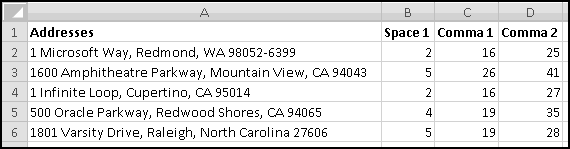
The only tricky part is starting the search for Comma 2 at the position after the location of Comma 1
=FIND(",",A2,C2+1)
qhich is what you have to do in order to locate the second comma.
The only divider we still need is the space before the zip code. In every case it should be the last space in the string. However, it turns out that it's not that easy to find the last space in a string. It requires the use of array formulas, which we won't learn for several chapters. We'll have to find it a different way.
Now, if all zip codes were 5 digits, we'd know that space was at LEN(A2)-5. However, some zip codes are 10 characters (9 digits plus a hyphen). For instance, in Microsoft's address, the character at LEN(A2)-5 is a 2. This gives us a way to test for a 9-digit zip code:
=MID(A2,LEN(A2)-5,1)<>" "
(Alternatively, we could have checked whether that character was a hyphen.)
However, this doesn't produce the expected results:
The Oracle address, for instance, is identified as having a 9-digit zip when clearly it doesn't. This means that when Excel looks at the character in position LEN(A5)-5, it's not seeing a space. How can that be?
It turns out that our worthless minion seems to have included extra spaces at the end of some of the addresses. One solution is to add a TRIM() to any calculation that involves knowing where the address ends. A better solution, however, is to get rid of the spaces altogether.
The simplest way to do this is to insert another column before column A, copy the addresses to it, and replace the old addresses (now in column B) with the formula
=TRIM(A2)
After making column A narrow, so that we don't have to look at the addresses twice, things are finally behaving how we expect:
We still need a formula to find the space before the zip code. In G2 that will just be
=LEN(B2)-IF(F2,10,5)
Convince yourself that 10 and 5 are the correct things to subtract.
Now we're ready to extract our address parts. This will require us to be very, very careful. The important thing to remember is that to extract the characters from Start to End, we use MID(B2,Start,End-Start+1). We're going to apply this with tricky formulas for Start and End, and we'll need to make sure we get it right.
First, in H2 we'll find the street number. Since we're starting at the left, we can take the easy way out and just use LEFT() to get everything before (but not including) the first space:
=LEFT(B2,C2-1)
In I2, we'll extract the street name. It starts at C2+1 (because C2 is the location of the space before the street name) and ends at D2-1 (because D2 is the location of the comma after the street name). This means we need to MID() out (D2-1)-(C2+1)+1, which is D2-C2-1 characters:
=MID(B2,C2+1,D2-C2-1)
Similarly, in J2, we'll find the city. It starts at position D2+2 (because D2 is the position of the comma, and D2+1 is the space after the comma, and we need to skip past both) and ends at position E2-1. In this case we need to MID() out (E2-1)-(D2+2)+1, or E2-D2-2 characters.
=MID(B2,D2+2,E2-D2-2)
In K2, we'll extract the state, which starts at position E2+2 and ends at position G2-1:
=MID(B2,E2+2,G2-E2-2)
And in L2 we can simply use RIGHT() to get the zip:
=RIGHT(B2,IF(F2,10,5))
If we copy down, we've got our parsed data:
It's not perfect. North Carolina is written out, while the other states are all abbreviated. Later on we'll learn techniques that can fix this too, but right now we don't know enough.
Looking back, the important steps were
- check to see if the data needs cleaning (should have done this one first!)
- reason through the dividing points between fields
- locate the dividing points between fields
- carefully extract the fields
This doesn't seem super impressive with only 5 addresses, but if we had hundreds or thousands, then this could save us a lot of time. Of course, if we had thousands of addresses, probably some of them would break our simple assumptions and we'd probably have to make our formulas even more complicated. Such is life.
Things are Looking Up
Some of Excel's most powerful techniques involve looking up data using some sort of index or key. This is something you should be pretty familiar with from your everyday life. Driving directions often include instructions like "take the third left" and "we're the fourth house on the right." To find dairy products in an unfamiliar supermarket, you look for the aisle labeled "Dairy." To locate the Pottery Barn at the mall, you look for "Pottery Barn" in the mall directory and find the store number listed next to it. Excel is very good at these sorts of tasks.
CHOOSE() Wisely
The CHOOSE() function takes as inputs a number and a bunch of choices and returns the choice specified by the number. So if the number is 1, you'll get the first choice, 2 you'll get the second choice, and so on. If the number has a fractional part, Excel will ignore it. If the number is too big (more than the number of choices) or too small (less than 1) you'll get an error.
| Function | Value |
|---|
| CHOOSE(1,"a","b","c") | a |
| CHOOSE(2,"a","b","c") | b |
| CHOOSE(2.9,"a","b","c") | b |
| CHOOSE(3,"a","b","c") | c |
| CHOOSE(4,"a","b","c") | #VALUE! |
CHOOSE() is not a very Thinking Spreadsheet function to use, as it "hides" a lot of information. If we had a spreadsheet with all the examples from the above table and we wanted to change it so that 1 resulted in "d", 2 resulted in "e", and 3 resulted in "f", we would have to go in and change every formula.
There's a very real sense in which the choices ("a", "b", and "c") are parameters of our spreadsheet. And one of the huge benefits of using spreadsheets is that they allow us to easily change parameters and see the effects of our changes. Therefore, a more Thinking Spreadsheet approach would be to store just one copy of the choices in (say) A1:A3, and then use the numeric input to tell Excel which cell to look at.
Then if we wanted to change the first output, we'd just change the value stored in A1 and every "choosey" formula would reflect the modification immediately. Thankfully, Excel has a function that does just this.
Look in the INDEX()
The simplest "lookup" is INDEX(), which returns the element from a specific position in an array. There are two ways to use INDEX().
The first involves a 1-dimensional array -- that is, an array consisting of either a single row or a single column (or both, but that would not be a particularly clever use of this technique). It requires two inputs: the first is the array, and the second is a number specifying the position of the element you want.
So INDEX(A1:A10,1) would return the value in A1, as would INDEX(A1:J1,1). Likewise, INDEX(A1:A10,5) would return the value in A5, while INDEX(A1:J1,5) would return the value in E1. And INDEX(A1:A10,11) would give you a #REF! error, since there's no 11th element in the specified array.
The number you specify refers to the position in the array, not in the spreadsheet. This means that INDEX(A2:A10,2) returns the value from A3, which is the second element in the array A2:A10. It's a common mistake to expect it to return the value from A2, which is in row 2 of the spreadsheet. But that's not how INDEX() works. Be careful!
A more complicated (and less frequent) usage is to extract items from a 2-dimensional array. In this case you need to specify both a row number and a column number.
For instance, INDEX(B2:E5,1,1) returns the value from B2. INDEX(B2:E5,2,3) returns the value from D3 (that's the second row and the third column). INDEX(B2:E5,3) will give you a #REF! error, since Excel sees a 2-dimensional array and needs both coordinates to know which element to return.
Example: A Deck of Cards
A standard deck contains 52 cards. There are four suits (hearts, clubs, spades, and diamonds), and thirteen ranks (ace, 2, 3, 4, 5, 6, 7, 8, 9, 10, jack, queen, king). One way to represent all possible choices from four suits and thirteen ranks is to use a two-dial "odometer" in which the first dial runs from 1 to 4
=IF(above_cell < 4, above_cell + 1, 1)
and the second starts at 1 and increases whenever the first dial rolls over
=IF(left_cell < above_left_cell, above_cell + 1, above_cell)
After 4 * 13 = 52 rows, we'll have covered every possibility.
Number pairs aren't satisfying representations of playing cards, though. After setting up the "odometer" in columns A and B, let's list out the suits and ranks in columns E and F in a readable format.
Now we can use INDEX() to get a description of each card. We'll use INDEX() once to get the rank, use INDEX() again to get the suit, and concatenate them with "of." The formula in C2 should be
=INDEX($F$2:$F$14,B2)&" of "&INDEX($E$2:$E$5,A2)
Now imagine that you want to pick a random card. Just pick a random number between 1 and 52 (which we'll learn how to do later in the book), and INDEX() that number into C2:C53.
Finding Your MATCH()
Another common use of INDEX() is to retrieve data that meets some complicated condition. In this case, you'll first do some sort of computation to figure out which row (or column or both) you want, and then use INDEX() to retrieve the corresponding data. Quite often this computation involves MATCH().
Exact MATCH()
In some sense MATCH() is the opposite of INDEX(). Whereas INDEX() takes an array and a number and returns the value in the specified position, MATCH() takes a value and a one-dimensional array and (if possible) returns the index where you can find that value.
In order to confuse you, MATCH() takes the value as its first input, and the array as its second input. It also takes a third input, "match type." Initially, we'll always use match type equal to 0, which means "find the first exact match and return a #VALUE! error if there isn't one." Accordingly, we'll call this usage Exact MATCH().
For instance, in A2:A101 you might have a list of 100 people you like.
Imagine you want to find Zoltar in the list. The formula
=MATCH("Zoltar",A2:A101,0)
will return a number representing the index where Zoltar first appears in the list, and a #VALUE! error if he doesn't.
If you just want to know whether he's in the list, you could instead use
=ISNUMBER(MATCH("Zoltar",A2:A101,0))
which will be TRUE precisely when MATCH() returns a number, which happens precisely when he's in the list.
Like most other Excel tests for equality, MATCH() isn't case sensitive, so you'd get the same results if you searched for "ZOLTAR" or "zoltar." And MATCH() is happy with the same wildcards we learned for COUNTIF(). So you could check if you like anyone whose name starts with 'Z' using
=ISNUMBER(MATCH("Z*",A2:A101,0))
And you could check if you like anyone who has a 3-letter name starting with 'Z' using
=ISNUMBER(MATCH("Z??",A2:A100,0))
In every one of these examples, where we didn't care which rows matched our criteria but only whether any rows did, we could also have checked whether an appropriate COUNTIF() was greater than 0. There's rarely just one way to accomplish something.
Of course you can Exact MATCH() numbers too, although you probably wouldn't use wildcards to do that.
Encyclopedia MATCH()
If your childhood predates the Internet, you may remember "encyclopedias," which you can think of as highly-abridged, non-editable, hard-copy versions of Wikipedia. Despite leaving out most topics (my Little Golden Encyclopedia, for instance, barely had an article on "Professional Wrestling," let alone biographies of individual wrestlers or descriptions of various kinds of suplexes), these "encyclopedias" still contained too much information to fit in a single book.
The entries were listed in alphabetical order and broken into volumes. The scheme might look something like this:
- Volume 1: A
- Volume 2: America
- Volume 3: Blossom
- Volume 4: Chess
- ...
Each of the above lists the first topic in each volume. (Sometimes you might see the last topic listed as well, but you don't need to know the last topic to figure out which volume the topic you need would be in, so we'll leave it out.)
Now, let's say you need to find the article about "Athens." You'd have to go through a process similar to the following:
- "Athens" comes after "A", so it's at least in volume 1.
- "Athens" comes after "America", so it's at least in volume 2.
- "Athens" comes before "Blossom", so it's before volume 3.
- Therefore "Athens" has to be in volume 2.
In practice, if you had 50 volumes you'd probably check volume 25, conclude "it has to be before volume 25" then narrow it down by checking next volume 12, then 6, and so on. Nonetheless, the basic task can be described as "find the largest first topic that's still smaller than (or equal to) what we're looking for."
In Excel, if you specify a "match type" of 1 (or if you leave off match type altogether), you'll get precisely this behavior. Accordingly, we'll call this Encyclopedia MATCH().
As before, MATCH() always returns the position in the array, not the row. If you try to Encyclopedia MATCH() something that's less than the first element of the array, you'll get a #N/A error.
You can also Encyclopedia MATCH() numbers. MATCH(10,{1,10,100},1) and MATCH(15,{1,10,100},1) would both return 2, since in each case the second array element is the "largest element that's still smaller or equal to what we're looking for."
For this sort of MATCH() to work, the array you're matching into has to be sorted from smallest to largest. If you expect this array to change often, then use our "Sorting Without Sorting" technique and MATCH() into its result.
There is a third type of MATCH(), which you'll get if you specify a match type of -1. It's what you'd want to call "Reverse Encyclopedia," requires your array to be sorted largest-to-smallest, and finds the smallest array item that's at least as large as what you're looking for. We'll never use this in the book, but you might have reason to someday.
Technique: Sorting Numbers Without Sorting, Part 2
Recall from several chapters ago our "Sorting without Sorting" fundraising spreadsheet:
At the time we complained that our automatically sorted version didn't include the names of the fundraisers themselves. Now we're ready to add that piece.
We know that 90 is the largest fundraised amount. We just need some way to tie that number back to Barbara. We can do it in two steps:
- Figure out what row (in our original data) contained the amount 90.
- Find the name that's in the same row.
For clarity we'll do each step in its own column, although if you were trying to build a presentable spreadsheet you might combine them.
We want to find the row that contains the 90, so we'll be looking for an exact match. Therefore our formula in F2 needs to be
=MATCH(E2,b2:b6,0)
Copy this down and make sure it gives the correct results.
Notice that this isn't the row of the spreadsheet, it's the row of the array B2:B6. And now, to find the element in the same row of A2:A6, we can use INDEX():
=INDEX($A$2:$A$6,F2)
and copy down.

Try changing the names and numbers, and you'll find that the sorted list updates automatically!
There's still one problem, though, which you may have discovered. This method doesn't do well with duplicates. In B2, increase Alex's fundraising to 70:
Suddenly, Alex appears in the rankings twice! While the rankings in column E handle the duplicate amounts fine, the MATCH() we used in column F is only smart enough to find the first time an amount occurs. It has no way of knowing that the second time it sees 70 it should find the second row that 70 appears in.
Again we're faced with a problem that we don't yet know enough to solve. Save this example again, because we'll eventually get there, I promise!
Technique: Sorting Strings Without Sorting
"Sorting numbers without sorting" relied on using either LARGE() or SMALL() to generate an automatically updated (and sorted) second version of the list. LARGE(list,1) gave us the biggest value, LARGE(list,2) gave us the second biggest, and so on.
Unfortunately, LARGE() and SMALL() don't work on text.
Think about an alternate approach using RANK() and MATCH(). You could first use RANK() to figure out the proper ordering. The item with RANK() equal to 1 would be the largest element, the item with RANK() equal to 2 would be the second largest, and so on. Then you could MATCH() the item with RANK() equal to 1, 2, and so on.
Unfortunately, RANK() also doesn't work on text. However, we can use COUNTIF() to create equivalent functionality. Let's say we have a list of the last several presidents. One way of thinking of RANK() is "how many items come before this one"? And that's the sort of thing that's easy to calculate using COUNTIF():
Notice two things. The first is that we have a duplicate entry in our list, which results in a duplicate "rank." We'll have to remember to account for this when we produce the ranked list.
Second, because we used < and not <=, the "rank" starts at 0. This was done deliberately because of the possibility of duplicates. If our list contained no duplicates, then a "rank" using <= would indeed start with 1. However, in our example the "first" value "Bush" occurs twice, which means that a COUNTIF() using <= would give it a "rank" of 2. If Bush appeared three times in the list, the name would have a "rank" of 3. Because our lives will be much easier if we know that the first element will always have the same value next to it, we used <.
Now we'll put the numbers 1 to 6 in column D for our sorted list. We'll use column E to find the correct row and then column F to look up the corresponding President. (In practice we might combine these steps into one column.)
As we mentioned above, the first item we want has the "Rank" of 0. Because we started counting at 0, we'll have to subtract 1 from the value in column D before trying to find its MATCH().
Alternatively, we could have used the numbers 0 to 5 in column D, but that would have made the spreadsheet more confusing to look at.
So, we want to exactly match D2-1 in column B. The formula for E2 should then be
=MATCH(D2-1,b2:b7,0)
and then copy down.
Notice that there's an error when it tries to find the second item. This is caused because the previous item appeared a second time. You can check that if there was a third "Bush" then there would be another #N/A, too.
If you think about it, the error is a signal to repeat the previous item. This means our formula for F2 can be
=IFERROR(INDEX($A$2:$A$7,E2),F1)
Now we can starting trying some alternate histories. Change A6 to Gore:
And the list re-sorts itself as desired!
Technique: Scenario Analysis
Sometimes you need to create various "scenarios" and analyze them. For instance, you might want to plug various sets of assumptions (e.g. "low growth," "average growth," or "high growth") into the financial model for your alchemy operation and switch back and forth between them. You'd like to be able to somehow choose "low growth" and have the appropriate numbers appear in the model, then choose "high growth" and have all the numbers change.
Excel actually has a built-in scenario analysis tool that does this. It's on the Data ribbon, in the Data Tool section, under What-If Analysis.
If you dig into its menus, you can name your scenario, specify the cells it changes, and put in the values you want those cells to have. You can construct as many scenarios as you like, and can use the "Scenario Manager" menu to switch between them.
Hopefully at this point you're ready to object that such a procedure doesn't sound Thinking Spreadsheet at all. It makes the scenarios opaque to the spreadsheet user, who has no easy way of knowing that they're there. If your goal is to allow the user to switch between different sets of assumptions, Excel already provides the means to do so in a completely transparent way, which is what we're going to do.
We'll call our scenarios Low, Medium, and High, and we'll assume that each scenario specifies GoldPrice, LeadPrice, Stores, and Employees. We'll write the names of the scenarios in row 1 and the labels for our variables in column A. Over to the right we'll put a cell for selecting the scenario, and for looking up two scenario-specific parameters we need.
In G3 we want to find the GoldPrice corresponding to the scenario specified in G2. Of course we should create a formula that works in G4 for Employees as well.
All of our parameters are in the array A1:D5. We could use INDEX() to retrieve them if we only knew which row and which column. But of course we want the row that has GoldPrice in column A and the column that has Medium in row 1. That is, we need
=INDEX($A$1:$D$5,MATCH($F3,$A$1:$A$5,0),MATCH(G$2,$A$1:$D$1,0))
The first MATCH() finds the row corresponding to the parameter in column F, and the second MATCH() finds the column corresponding to the scenario specified in G2.
Copy the formula down to G4, and then try changing G2 to Low or Medium.
At this point you could do any analysis that depended on GoldPrice and Employees by getting them from G3 and G4. Then you could easily switch back and forth between scenarios by changing G2.
Incidentally, this would be a great place to use Data Validation on G2 to make the user select it from a list restricted to B1:D1.
If you need to add rows or columns for additional scenarios or variables, make sure to insert them in the middle, so that the references to A1:D5 will expand appropriately. Otherwise you'll have to modify the formulas.
VLOOKUP() and Friends
As we've seen, a common Excel task is to use MATCH() to figure out what row a certain value is in, then use INDEX() to return the value from a different column in the same row. This is so common that Excel provides a VLOOKUP() function that cuts out the middleman.
VLOOKUP() takes three inputs, with an optional fourth. The first is the lookup value you're trying to find. The second is a rectangular range of values. The third input is a column index number specifying which column you want values from.
The way to think about this is "find the row with the lookup value in the first column of the range and return the corresponding value from the specified column."
The fourth input is a Boolean telling Excel how to do the lookup. If you specify FALSE, Excel will try to find an Exact match. If you specify TRUE (or if you only give Excel three inputs), Excel will try for an Encyclopedia match. In this case the first column needs to be sorted from smallest to largest.
For instance,
VLOOKUP(10,C3:F102,3,FALSE)
Looks in the first column of the range (C3:C102), finds the first cell that exactly matches 10, and returns the corresponding value from the 3rd column (column E). If it can't find a cell that matches the lookup value, you'll get a #N/A error. If you give it a column number that doesn't exist, you'll get a #REF! error.
HLOOKUP()
HLOOKUP() is the transpose of VLOOKUP(). It tries to find the lookup value in the first row of the range you give it, then returns the corresponding value from the specified row. If you understand how VLOOKUP() works and you understand how to turn your head sideways, then you understand how HLOOKUP() works.
It's much, much more common to set up tables of data vertically and therefore it's much, much more common to use VLOOKUP().
There's also a LOOKUP() function, which is included mostly so that spreadsheets created during the Carter administration (back before VLOOKUP was invented) will still function. We won't be using it.
Example: Tax Brackets, Revisited
Being able to VLOOKUP() gives us another way to solve the income tax problem.
Recall that last time we computed how much of our income fell into each bracket, used that to compute the tax from each bracket, and then took the SUM() to find the tax owed.
An alternative approach is to VLOOKUP() which tax bracket the income falls into. That allows us to figure out the marginal tax rate. But we'll also need to know how much tax needs to be paid on earlier brackets. We'll compute that in column F.
In the 10% bracket, there's no earlier income, so the tax Already Owed will be 0.
If you land in any of the other brackets, you Already Owe the tax liability from the bracket above you plus whatever was Already Owed before that bracket. If you land in the 15% bracket, you Already Owe all the tax in the 10% bracket. If you're in the 25% bracket, you Already Owe all the tax in the 15% bracket plus whatever people landing the 15% bracket Already Owe.
So the formula for F3 needs to be
=E2*(D3-D2) + F2
The first term is the rate for the previous bracket multiplied by the income that falls into the previous bracket, the second term the Already Owed amount from the previous bracket.
Fill this down.

Now, given any income, we can use VLOOKUP to find out its bracket, its marginal rate, and the amount already owed. Remember that the marginal rate only applies to the amount of income that falls in the bracket, which is why we needed to compute the "Already Owed" amounts. The math we'll need is
Tax = Already Owed + (Income - Start of Bracket) * (Marginal Rate)
We need to do an Encyclopedia match, so we can use the three-input VLOOKUP:
=VLOOKUP(B2,$D$2:$F$7,3) + (B2-VLOOKUP(B2,$D$2:$F$7,1))* VLOOKUP(B2,$D$2:$F$7,2)
Try different incomes and make sure you get the same results as before.
Technique: The Join
Using lookup functions, it's possible to "join" multiple datasets together. For instance, imagine that in the 'Friends' worksheet you have a list of your friends, along with the states they live in.
In the 'States' worksheet you have a bunch of state-specific data, like state flower and state motto and state boy band.
Let's say you'd like to store each of your friends' state flowers in column C, so that you know what to send them on their birthdays. A bad way to accomplish this is to look up that Virginia's state flower is the American Dogwood and then type that in C2.
Why bad? Two reasons. First, Excel is better at looking things up than you are, so this method doesn't play to your strengths. More importantly, if Virginia decides to change its state flower to the Amerika Touch-O-Pink, you'd have to go through your list and find every Virginian friend and change her Flower entry. Similarly, whenever your friends moved, you'd have to manually change their flowers.
A better way is to use VLOOKUP() to "join" the State-specific data to your list of friends using State name as the "key."
In C2 that's the formula
=VLOOKUP(B2,States!$A$1:$E$51,2,FALSE)
which you can then fill down.
With this new setup, if you need to change a state's flower, you only need to change it in one place (the States worksheet) and your changes will automatically flow to your Friends list. Just as handy, if Wendy moves from Massachusetts to Washington, her State Flower will automatically update as soon as you change her State.
Technique: Multi-Column Lookups
Sometimes you'd like to do a "multi-column" lookup. For instance, maybe you want to find a row that has the value 1 in column A and also the value 5 in column B." (Obviously in this case you're looking for an exact match.)
Excel doesn't immediately allow you to do things like this, but there's an easy way to fake it:
- Add a new column to the left of your lookup table
- In this column, CONCATENATE() the two (or more) lookup fields, adding some sort of separator if necessary to avoid collisions
- VLOOKUP() the concatenated values into the first column
For instance, imagine we have a table of mayors by city and state.
We'd like a formula that takes the city and state we've entered in B1:B2 and returns the appropriate mayor. This means we need to VLOOKUP() both the city and the state. Insert a column between C and D and call it CityState. What should we put in it?
A naive thing to do would be to CONCATENATE() City and State. This potentially causes collisions. You'd like to be able to distinguish between the (fictional) cities of Richmond West, Virginia, and Richmond, West Virginia. If there happen to be errant spaces in your data (always a possibility) both cities could concatenate to "Richmond West Virginia".
For that reason (and also to make things easier to read) it's always a good idea to use some sort of separator that doesn't appear in the original data. For instance, here we could use a comma
=CONCATENATE(E2,",",F2)
and fill down.
Now in B3, we need to VLOOKUP() the concatenated city-state into column D:
=VLOOKUP(B1&","&B2,$D$2:$G$7,4,FALSE)
Of course, you could easily extend this technique to three or more conditions.
Frivolous Example: The Prime Number Sieve
A prime number is a number that's divisible only by 1 and itself. (By convention, 1 is not considered a prime number.) So 2 is a prime number, since it's only divisible by 1 and 2 (itself). Similarly, 3 is a prime number. 4 is not a prime number, since it's divisible by 2.
We're going to use Excel to figure out all the prime numbers that are smaller than 100.
This is a task that you'd never ever ever consider using Excel for in the real world. In fact, it took me a fair amount of thinking before I even figured out a good way to do this. But (like our other frivolous examples) it illustrates lots of interesting concepts and techniques, so we'll press on.
Every whole number greater than 1 can be written as a product of prime numbers. (This is not a math book, so we'll ask you to just take this on faith.) Our method then relies on the following reasoning: if a number is not prime, then it must be divisible by a prime number that's smaller than it. Therefore, if we know all the first several prime numbers, the next prime number is the smallest number that's not divisible by any of them.
For instance, we mentioned above that the first two prime numbers are 2 and 3. This means the next prime number is the smallest number that's not divisible by 2 or 3, which is 5 (since 4 is divisible by 2). Similarly, the next prime number after that is the smallest number that's not divisible by 2, 3, or 5, which is 7. And so on.
This gives us a method to compute prime numbers. We know that 2 is the first prime number. If we make a list of all the numbers up to 100, we can use Excel to figure out the first one that's not divisible by 2, which ends up being 3. Then we can use Excel to find the first number that's not divisible by either 2 or 3. And we'll just keep going.
To start with, we'll put our potential prime numbers (all the numbers from 2 to 100) in column A. I left some space at the top because we're going to keep track of our primes going across to the right. And I filled in 2, which we know is the first prime. (The ... I just typed in to indicate that that's where the next primes will go.)
What will we fill in column B? As we mentioned, the next prime (which we already know is 3, but let's pretend we don't) is the first number that's not divisible by 2. So if we use column B to test for "not divisible by 2," we can just look for the first number that passes. Recall that MOD() can test for divisibility. MOD(Number,2) equals zero precisely when Number is divisible by 2. So in B3 we'll use the formula
=MOD($A3,B$2)<>0
And fill down:
The first number not divisible by 2 is the first number with a TRUE in column B, which we can find using INDEX() and MATCH(). In C2 replace the dots with
=INDEX($A$3:$A$102,MATCH(TRUE,B$3:B$102,0))
The inner MATCH() function finds that the first TRUE is in the second cell in B$3:B$102 and returns 2. The INDEX() function then returns the second value in $A$3:$A$102, which is 3.
Now we want to fill column C with a formula whose first TRUE will be the next prime number after 3. As we discussed above, that formula should be "not divisible by 2 and not divisible by 3." Well, "not divisible by 2" is already in column B. And not divisible by 3 we can compute the same way. So in C3 we'll put
=AND(B3,MOD($A3,C$2) <> 0)
Copy this formula down:
And now we're set. Copy the formulas in column C over to the right. In every column, the AND() makes our test mean "not divisible by the prime number at the top of this column, and not divisible by any of the smaller prime numbers either," which is exactly the test we need.
You can get as far as column Z before you'll start to get an error. (It turns out it's the "no more primes less than 100" error, so it's sort of by design.)
This is quite a bizarre thing to do with Excel. But it's also kind of cool. And if you understand it, you're well on your way to Thinking Spreadsheet.
Indirection
So far we've been creating formulas with fixed references like "take the sum of the array A1:A10" or "add the value in C3 to the value in D4" or "VLOOKUP the value 'Thinking Spreadsheet' in the array F1:Z1000 and return the value in the 10th column." This is how most people use Excel.
However, Excel can also create references "on the fly." For instance, we can tell Excel to look in A1 to find a number of rows, look in A2 to find a number of columns, look in A3 to find text representing the top left cell, and take the sum of the resulting range. In this chapter we'll see how to do this and think about what it might be useful for.
ROW() and COLUMN()
The ROW() function tells you the row of a cell. If you give it no arguments, it returns the row of its own cell. If you give it a reference, like ROW(A1), it returns the row of the reference. If you give it an array, it (like other functions that aren't expecting arrays) pretends you gave it the top left cell.
There's also a COLUMN() function which behaves analogously.
In order to confuse you, there are also ROWS() and COLUMNS() functions, that expect arrays and return the number of rows and columns.
| Function | Value | Why |
|---|
| ROW(C2) | 2 | Cell C2 is in the second row |
| ROWS(C2) | 1 | The array C2 contains only one row |
| COLUMN(C2) | 3 | Cell C2 is in the third column |
| COLUMNS(C2:F2) | 4 | C2:F2 contains 4 columns |
| ROWS(C2:F2) | 1 | C2:F2 contains 1 row |
Finding an ADDRESS()
The ADDRESS() function takes a row number and a column number and returns the text representation of the cell at that location. So, ADDRESS(1,1) returns the text $A$1, and ADDRESS(3,10) returns the text $J$3.
By default ADDRESS() will $ both the row and the column. An optional third input allows you to change this. A value of 1 (or leaving out the third input altogether) will $ both the row and the column. A value of 2 will just $ the row, 3 will just $ the column, and 4 will $ neither.
An optional fourth input can be set to FALSE to specify the R1C1 style. You will never specify the R1C1 style. Finally, an optional fifth input allows you to specify a different worksheet. For instance, the formula
=ADDRESS(1,1,4,TRUE,"Sheet1")
Would return the text Sheet1!A1. Probably, though, if you ever use ADDRESS() you'll use the simple two-input form. In fact, probably you'll never use ADDRESS() at all.
OFFSET() References
Here's where it starts getting interesting. So far we've dealt with functions that return values. Sometimes numbers, sometimes Booleans, sometimes text, but always values.
OFFSET(), however, is a function that returns a reference to a cell or a range of cells.
As its name implies, this reference is offset from a different reference by a certain amount.
Getting a Cell
Its simplest usage takes 3 inputs. The first is a starting cell, the second a number of rows to move, and the third a number of columns to move. This usage of OFFSET() returns a reference to a cell.
| Function | Refers To | Why |
|---|
| OFFSET(A1,2,3) | D3 | D3 is offset 2 rows, 3 columns from A1 |
| OFFSET(F5,-1,-2) | D4 | D4 is offset -1 row, -2 columns from F5 |
| OFFSET(A1,-1,1) | #REF! | Can't offset -1 row from A1 |
Unlike ADDRESS(), which returned a text representation of the cell's location, OFFSET() returns an actual reference to the cell. And whenever you use a reference as the whole of a formula, you simply get back the value of whatever is pointed to by the reference. So if you were to use the formula
=OFFSET(A1,2,3)
You'd get back the value of whatever is in D3, just as if you'd typed =D3.
You can also use this reference as a reference. For instance,
=ROW(OFFSET(A1,1,1))
Returns the ROW() of B2, which is 2.
Getting a Range of Cells
If you give it two additional inputs, OFFSET() returns a reference to a range of cells. The two additional inputs are number of rows and number of columns, with the original OFFSET() as the starting cell.
For instance,
OFFSET(A1,2,3,2,2)
means "return a reference to the range whose top left cell is 2 rows and 3 columns from A1, and that itself has 2 rows and 2 columns." This means its top left cell is D3, and so the function returns a reference to D3:E4.
In this second usage it's common to use offsets of 0 and 0, like OFFSET(A1,0,0,2,2), which returns a reference to A1:B2.
You can also give it negative rows and columns, which makes the array extend up and to the left.
So
OFFSET(C3,0,0,-3,1)
Returns a reference to C1:C3, the array starting at C3 with 1 column and "-3 rows." You should probably think of this as "3 rows, but in the opposite direction."
Technique: Sorting Numbers Without Sorting, Part 3
Recall where we left off last time.
In column E we used LARGE() to find the biggest amount raised, second-biggest amount raised, and so on. Then in column F we used MATCH() to identify which row that amount could be found in. Finally, in column G, we used INDEX() to select the name from that row.
The problem we discovered was that when we had duplicates, MATCH() would choose the same row for each of them. Now we finally know enough to fix this.
If the number in column E is not a duplicate (i.e. it's different from the number above it), then our current formulas work just fine. The only problem is when the number in column E is a duplicate. In that case we need to find the next MATCH() after the one we just found. How can we do this? By giving MATCH() a range that starts after the match we just found.
Look at the example above. The first 70 was found in row 1 (of the range B2:B6). This means that to find another 70, we need to look in the range that we'd get if we skipped row 1. This is a perfect job for OFFSET().
We'll want to OFFSET starting at B2, and we'll need to move by 1 row and 0 columns. The 0 columns will always be the case (since we want to stay in column B), but the 1 row is really because the previous duplicate was found in the first row. If it had been in the second row, we'd need to skip 2 rows. If it had been in the third row, we'd skip 3. And so on.
Since we need to produce an array to feed MATCH(), we'll have to specify a number of rows and number of columns as well. We only want 1 column, because we're only interested in the values in column B, so that's easy.
For rows, we'll need however many are left after the ones we skipped. Since there are ROWS(B2:B6) in all, and we skipped 1, we'll need ROWS(B2:B6)-1 of them. Of course, the 1 is really "the row of the previous match" and our formula needs to account for this.
Finally, when we're looking for the second 70 in what will work out to be B3:B6, we'll find it in the second row of B3:B6, which is the third row of our original array. This means we need to add 1 (again, "the row of the previous match") to our result so that the INDEX() in column G will be looking in the right place.
Let's put that all together. In F2, the formula will be
=IF(E2=E1,F1+MATCH(E2,OFFSET(b2,F1,0,ROWS(b2:b6)-F1,1),0),(E2,b2:b6,0))
In other words, if this amount is equal to the previous amount, find the next time this amount occurs; otherwise, simply find the first time this amount occurs.
And we've done it. This is a difficult solution that involves several complicated concepts, so it might be worth thinking about for a while.
Technique: Dynamic Ranges
Another thing we can use OFFSET() for is creating dynamic ranges. For example, imagine that you have a rectangular array of numeric data in A1:D3, but you expect to keep adding more rows and columns of data.
If you try to sum your data using
=SUM(A1:D3)
then your formula will be wrong as soon as someone adds another row or column of data. (Unless they Insert a new column in the middle of the table, in which case the reference will automatically expand. It's pretty risky to rely on users to always do this, though.)
You could alternatively SUM() the entire worksheet
=SUM($1:$1048576)
But this will give the wrong result if there's ever any data or analysis elsewhere on the page, and also it obscures the idea that the data is really in the top left of the worksheet.
A third alternative is to use OFFSET() starting at A1. How many rows will we need? As many rows as we have data, which we could count with
COUNT(A:A)
as long as we don't expect any stray data further down in the column. Similarly, we'd need
COUNT(1:1)
columns, which means we could SUM() our data with
=SUM(OFFSET(A1,0,0,COUNT(A:A),COUNT(1:1))
Try this formula (somewhere that's not in column A or row 1) and see how it adjusts when you add or remove data.
Given the way this formula relies on "no stray data," it's probably best used when you have a worksheet whose only responsibility is storing data, with all analysis happening elsewhere.
Technique: Moving Averages
Sometimes when you're analyzing time series data (like stock prices) you want to smooth out some of the day-to-day volatility. One way of doing this involves "moving averages." Instead of looking at the value each day, you look at the average value over (say) the last 5 or 10 days.
We'll start with a spreadsheet with the daily closing price of the Dow Jones Index from 7/1/2008 to 7/1/2010. You can either collect the data yourself from a site like Google Finance or Yahoo Finance, or you can download it from ThinkingSpreadsheet.com.

If we knew that we wanted (for example) the 5-day moving average in column C, then in C6 we could just use the formula
=AVERAGE(B2:B6)
As we copy this formula down the row references will increase. Cell C7 will take the average of B3:B7, cell C8 will take the average of B4:B8, and so on. This is exactly what we want.
However, if we then decide that we'd rather have a 10-day moving average, we'll have to redo every formula. Instead we'll use OFFSET() to create a parameterized moving average that lets us change the average period as we want.
The only question is what we want to do when there aren't enough data points. There's no way to compute a 5-day moving average in C3, because there's only 2 days of data at that point. We have several options for these first few data-deficient points:
- leave them blank
- give them #N/A errors to signify "not available"
- let them have whatever errors the formula produces
- compute an average with as many points as possible
- use the daily value
Since these averages truly aren't available with our data, we'll use #N/A errors.
First, in C1, we'll put the size of our average. We'll start with a 5-day average:
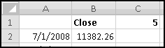
If we weren't worried about error-handling, we could simply use
=AVERAGE(OFFSET(B2,0,0,-C$1,1))
Which can be understood as "take the average of the array that starts at B2, contains 1 column, and extends C1 rows backward." You can check that this causes a #REF! error in the first few rows (since it's trying to average a range that extends off the sheet) and calculates a 4-day average in row 5 (since AVERAGE() just ignores the text label in B1). As mentioned, we want to replace these with #N/A, so we'll do that.
What we need to check is that the previous 5 values in column B exist (which won't be the case if we're in row 2) and are all numbers (which won't be the case if we're in row 5). As a shortcut, we can just check that the first of those cells is a number. Irritatingly, that's the cell that's offset by -4 rows, not (as you'd naively think) -5 rows. This means we have to look at OFFSET(B2,-C$1+1,0). Putting it all together, our formula will be
=IF(ISNUMBER(OFFSET(B2,-C$1+1,0)),AVERAGE(OFFSET(B2,0,0,-C$1,1)),NA())
Which we can double-click-fill down.
A potentially simpler approach would have been to notice that the first time we can compute a 5-day moving average is in row 6, the first time we can compute a 10-day moving average is in row 11, and so on. So we could have tested ROW()>C$1. However, this is a fragile test that depends not only on our data but also where our data is located. If we added another row above row 1, then the 5-day moving average wouldn't start making sense until row 7, and our test would be broken! Our slightly more complicated formula is more robust to changes like this.
To quickly change to a 50-day moving average simply change the value in C1 to 50. Then insert a Line Chart to see how the smoothing looks:
The moving average doesn't start for 50 days, thanks to the #N/A we used for missing values, and the moving average definitely smooths out the volatility. Try changing the period and see how the graph changes.
INDIRECT() References
Whereas OFFSET() created references starting with other references, INDIRECT() creates references directly from text. INDIRECT("A1") is a reference to cell A1 (on the current worksheet). INDIRECT("A1:C3") is a reference to the range A1:C3 (on the current worksheet). INDIRECT("Sheet2!A1") is a reference to cell A1 on worksheet Sheet2.
This is a way of creating "unmoveable" references. In general, references move when the cells they refer to move. If I have a formula that refers to cell A1, then when I insert a row above row 1, my formula automatically adjusts to refer to A2. If I cut-and-paste A1 to C3, my formula automatically adjusts to refer to C3.
However, for cell-movement purposes, Excel sees the A1 in INDIRECT("A1") as text and will never change it. If you wanted to always refer to cell A1, no matter how the spreadsheet was cut and pasted and inserted, you could use an INDIRECT() reference.
Another use for INDIRECT() is to allow references to dynamically refer to different worksheets. The top cell in worksheet Sheet1 is Sheet1!A1, and an indirect way of referencing it would be INDIRECT("Sheet1!A1"). All that's left is to build that string on the fly:
Although it is very difficult to read from the screen shot, before the value from A2 we've concatenated a single quote "'". Similarly, the last string "'!A1" starts with a single quote. The effect of this is that the string we feed into INDIRECT() has the worksheet name single-quoted. If the worksheet name ever has a space in it, this is required. Since we want to allow for worksheet names to have spaces in them, we need to include it, even though it makes the formula fiendishly difficult to read on-screen.
An equivalent formula would be
=INDIRECT(ADDRESS(1,1,4,TRUE,A2))
Which uses ADDRESS to generate a text representation of "the cell in row 1 and column 1 of the worksheet named in A2." I find the first method simpler, but feel free to use either.
Technique: Data Segregation
Sometimes your data naturally "splits" itself into different worksheets. The most logical representation might involve a "2008" sheet, a "2009" sheet, and a new sheet for each new year.
In this case often you want a "Summary" sheet. And if each of the sheets has the same structure and an obvious name (for example, if the 2008 sheet is called "2008"), then you can use INDIRECT() to create functions that look at (for example) column A of each year and that naturally extend as you add sheets for additional years.
Big Scenarios
When we discussed INDEX() and MATCH() we saw how to make a table of "scenarios" and dynamically pull values from it. It's possible, though, that you might have really, really elaborate scenarios that don't easily lend themselves to being jammed in a table.
In that case you can give each scenario its own worksheet named after the scenario. As long as the rule to find the data is the same for each scenario-sheet, you can use INDIRECT().
For instance, if each scenario has its field names in A1:A100 and the corresponding values in C1:C100, you might end up doing the following:
Again, we single-quoted the sheet name in case it had a space in it.
Frivolous Example: License Plates
You've just landed a consulting gig with the Department of Motor Vehicles. They've decided (over your stern objections) to build a spreadsheet to keep track of license plate data. For each plate, they'll track the registered owner, address, car model, VIN, and lots of other data that will create a ruckus the first time someone loses a laptop containing it.
A license plate consists of 3 letters followed by 3 numbers. This means there are 26 * 26 * 26 * 10 * 10 * 10 = 17.6 million possible license plates, far too many to fit in a single worksheet.
However, only 1 * 26 * 26 * 10 * 10 * 10 = 676,000 of them start with A, the same number start with B, and so on. Therefore you suggest that all the license plates starting with A be tracked in a worksheet called 'A', all with B in a worksheet called 'B', and so on. For instance, the 'A' worksheet might start off like this:
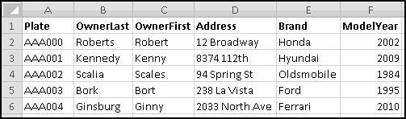
Assume that the data goes all the way to column Z. We'll need to create a summary sheet that allows DMV workers to input a license plate number and find out its associated information. Because we're dealing with DMV workers, we'd better first check to make sure what they input is a valid license plate.
What makes for a valid license plate? Well, it has to be 6 characters. The left 3 characters have to be letters. And the right three characters have to be numbers.
(I put some extra carriage returns (Alt-Enter) in the formula to make it easier to read.) If you want you can Data Validation cell B1 itself using that formula.
Below this we need to retrieve some data.
To get OwnerLast, we'll need to VLOOKUP() B1 into the range 'C'!A2:Z676001. The range part doesn't depend on our license plate, but the worksheet name does. We can get its reference with
INDIRECT("'"&LEFT(b1,1)&"'!A2:Z676001")
The only remaining issue is which column has OwnerLast in it. We can find this out with MATCH(), by trying to match A3 into the top row of the 'C' worksheet. We can retrieve that row with
INDIRECT("'"&LEFT(b1,1)&"'!A1:Z1")
This results in the horrific-looking formula for B3
=VLOOKUP(b1,INDIRECT("'"&LEFT(b1,1)&"'"'>!A2:Z676001"),MATCH($A3, INDIRECT("'">"&LEFT(b1,1)&"'!A1:Z1"), 0),FALSE)
Which can then be copied down to B4 and beyond.
Mathemagic
You're probably thinking that we already covered mathematics, back when we talked about addition and subtraction and multiplication and division. That's because you're not a mathematician. A mathematician would say what we already covered was arithmetic, and that "real" mathematics consists of other things we haven't learned yet.
At that point we'd punch the mathematician for being a jerk. However, Excel can do a lot of interesting "higher" mathematics that we haven't discussed yet.
I've Got the POWER()
There a mathematical operator we haven't mentioned, and that's the caret ^ which you use to "raise" a "base" to an "exponent." This is less common (and less common-sense) than the other four, which is why it's in the "math" part of the book rather than the "arithmetic" part of the book.
Whole Number Exponents
When the exponent is a whole number, exponentiation is the same thing as multiplying together exponent copies of base.
So, 2^3 is (by definition) the same as 2*2*2 ("three copies of the number two multiplied together"). Similarly 1.5^4 is (by definition) the same as 1.5*1.5*1.5*1.5 ("four copies of the number one and half multiplied together"). And 7^1 is the same as 7 ("one copy of the number seven multiplied together"). This "raising to a whole number" is the most common type of usage. It's also the easiest to understand.
As is often the case, Excel offers several ways of doing the exact same thing. The POWER() function takes two inputs and raises the first to the second. POWER(2,3) means exactly the same thing as 2^3. Use whichever you prefer.
Other Exponents
Another way of thinking about exponentiation is that you start with 1 and multiply by exponent copies of base. If you use 0 as the exponent ("multiply by 0 copies of base"), then POWER() outputs 1 for every base except 0. (0^0 is not mathematically defined and will give you a #NUM! error.)
Similarly, if the exponent is negative (e.g. "multiply by -2 copies of base") exponentiation divides by the corresponding copies. So, for instance,
=POWER(3,-2)
is (by definition) equal to
=1/POWER(3,2)
That takes care of negative integer exponents.
Finally, we need to worry about exponents that aren't whole numbers. At the risk of taking us too far afield, we'll just say that when the base is positive and the exponent is 1/n, then the result is the nth root of the base -- the number that when multiplied by itself n times gives you the base as a result. So the formula
=POWER(5,1/3)
outputs the third root (or "cube root") of 5, which is the number that when multiplied by itself 3 times (i.e. "raised to the exponent 3") returns 5. You can check this by trying the formula
=POWER(5,1/3)^3
Going any further down this path would turn this into a mathematics book. If you're interested in the subject, I suggest the Wikipedia article on "Exponentiation."
Order of Operations
How about order of operations? The convention is that ^ is performed even before multiplication and division. So 2*3^4 means 2*(3^4). As we mentioned before, you should always use parentheses. In the unlikely event that you are chaining together multiple ^ operators, they will be evaluated left to right. However, unlike + and *, the order of operations does matter, and so you should use parentheses here too. 2^3^4 evaluates as (2^3)^4, which (as you can check) is not equal to 2^(3^4). Use parentheses!
Square Roots
The square root of any (non-negative) number x is the number that when multiplied by itself gives the value x. As you just learned, you can find the square root of 5 with
=POWER(5,1/2)
Which you can check with
=POWER(5,1/2)*POWER(5,1/2)
Or
=POWER(5,1/2)^2
Or even
=POWER(POWER(5,1/2),2)
Because taking square roots is not an entirely uncommon thing to do, Excel provides a SQRT() function, which takes one (non-negative) input and returns the square root.
If you divide a positive integer by 10, the remainder will be the last digit of the number. For instance, 12 divided by 10 is "1 remainder 2." What if we want to extract other digits?
Let's take the example 4321. As we mentioned, the last digit is MOD(4321,10), which is 1. What do we get if take QUOTIENT(4321,10)? We get 432, which is all the digits except the last one. What if we take QUOTIENT(4321,100)? We get 43. And QUOTIENT(4321,1000)? We get 4.
We'll make one more observation that seems odd, but which will make sense in a minute. If you compute QUOTIENT(number,1), you'll always get back the number itself. That's because 1 divides evenly into every number.
Now consider the following formula:
=MOD(QUOTIENT(4321,POWER(10,2)),10)
As usual, we'll work from the inside out. POWER(10,2) raises 10 to the exponent 2, which equals 100.
This makes the next innermost function QUOTIENT(4321,100). As we saw before, when you quotient by 100 you chop off the last 2 digits, so this leaves 43. The last step is MOD(43,10), which we already saw gives us the last digit of 43, which is 3.
To sum up, we're chopping off the last 2 digits of 4321 and then returning the last digit of what's left. If we had used a power of 0 instead of 2, then we would have chopped off nothing and returned the last digit. If we had put in a power of 1, then we would have chopped off the last digit and returned the next-to-last digit. Each time we increase the value of power by 1, we're extracting one digit further to the left.
What if we put in too big a number? Since there are 4 digits in 4321, we should only get meaningful results up until power = 3. What if we put in a power of 5? Then POWER(10,5) = 100,000. QUOTIENT(4321,100000) equals 0. And then MOD(0,10) also equals zero. So trying to extract extra digits to the left just produces zeroes, which is (if you think about it) what you want to happen.
Exponentially Great
In mathematics there are certain constants that are considered important for some reason or another. One is e, which equals approximately 2.718281828. Looking at it, it doesn't look that important, does it? Well, it is, for reasons that you're welcome to explore on Wikipedia.
Usually what people care about is raising e to a power, which Excel implements as the function EXP(). It takes one argument, which is the power you want e raised to.
If you want just the value e itself, that's EXP(1). As you can check, EXP() always outputs a value that's bigger than zero. In fact, any POWER() of any positive number always outputs a value that's bigger than zero.
It's LOG()
The Excel function LN() is the "natural logarithm," which is the inverse of EXP(). That means that whenever EXP(value)=result, it will be the case that LN(result)=value. So, for example, LN(EXP(1)) = EXP(LN(1)) = 1.
Because EXP() only outputs positive numbers, LN() can only take positive inputs. You'll get a #NUM! error if you try to give it non-positive inputs.
LN() has a useful property:
LN(value1 * value2) = LN(value1) + LN(value2)
whenever value1 and value2 are acceptable (positive) inputs. In prehistoric times people used to use "log tables" to multiply numbers.
Percent Changes and Rates of Return
A somewhat common use for LN() is measuring rates of return. This is probably not what you're used to. Imagine that your salary increases from $50,000 to $51,000. Normally you'd think about this in terms of the percent increase, which is
(51000-50000)/50000 = 2%
However, you can instead look at the (similar) "log return," which is computed as
LN(51000/50000) = 1.98%
Why would you want to do this? Well, imagine that the next year your salary increases to $52,000. As a percent change it equals
(52000-51000)/51000 = 1.96%
While the log return is
LN(52000/51000) = 1.94%.
Now, imagine that we were interested in the total change. We could compute it as
(52000-50000)/50000 = 4%
But there's no simple way to recapture this from the two individual increases. You'd have to do the unwieldy calculation
=(1+2%)*(1+1.94%)-1
However, if you instead were working with log returns, you could just add them:
LN(52000/50000) = 3.92% = 1.98% + 1.94%
If you have lots and lots of changes you want to accumulate, and you use LN() to compute the individual rates of return, then you can just sum them up and then use EXP().
For instance, if you have a sequence of stock prices in A1:A100 and their log returns in B2:B100 (so that B2 equals LN(A2/A1), and so on), then the total return is
A100/A1 = EXP(LN(A100/A1)) = EXP(LN( (A100/A99) * (A99/A98) * ... * (A2/A1) )) = EXP( LN(A100/A99) + LN(A99/A98) + ... + LN(A2/A1) ) = EXP( SUM(B2:B100))
Where the next to last equality uses the "log of a product equals the sum of logs" rule.
Of course if you wanted to look at the total return over an interval of 100 consecutive days it would be easier to just compare the first price and the last price. But this "log return" trick allows you to easily compute the total return on "just Mondays" or "just dates divisible by 5" or "just the days that my patented stock-trading model says I should be in the market." Just SUMIF() the relevant log returns and use EXP() to convert back.
Log Ten
Why is the log function LN() and not LOG()? Because LOG() returns the common logarithm, which gives the inverse of POWER(10,Value). You can use LOG() to find the order of magnitude of a number.
Since POWER(10,0) equals 1, LOG(1) equals 0. Similarly, LOG(10) equals 1, LOG(100) equals 2, LOG(1000) equals 3, and so on. On the other end, LOG(0.1) equals -1, LOG(0.01) equals -2, and so on.
It's very unlikely you'll ever need to use this.
Trigonometry
Trigonometry, in case you've repressed all your memories of high school, is the mathematical study of triangles.
Angles
Most normal people think of angles in terms of "degrees." A right angle is 90 degrees, and a circle is 360 degrees. Mathematicians (and Excel) prefer to think of angles in terms of "radians," which means that (if you use Excel for trigonometry) you'll have to convert back and forth between the two. When you studied trigonometry you probably learned that 180 degrees equals PI() radians (approximately 3.14) and used that data point to do your conversions.
Excel wants to make your life simpler, and has DEGREES() and RADIANS() functions to convert back and forth between the two.
Trig Functions
Trigonometry is most commonly used to study right triangles, triangles one of whose angles is 90 degrees (or PI()/2 radians).
Consider the above triangle. If we have a spreadsheet where cell A1 contains the size (in radians) of the angle at A, then
=SIN(A1)
is the ratio a/c,
=COS(A1)
is the ratio b/c, and
=TAN(A1)
is the ratio a/b. We can produce the inverses by prefacing the functions with 'a'. For instance, if you knew a and c but not the angle at A, you could put the quantity a/c into cell A2 and then use
=ASIN(A2)
to find out the angle (in radians).
Trigonometry is a deeper field than we can do justice to in a section of a chapter in a book about spreadsheets. If you don't already know trigonometry, it's quite unlikely you'd ever want to use these Excel functions. And if you do learn it, they'll be waiting for you.
Counting Things
Surprisingly, counting things turns out to be mathematically difficult. Obviously when you can list them all in a spreadsheet, COUNT() can do the job pretty well. Sometimes, however, you'll need to count things that you can't fit into a spreadsheet. For instance, in our earlier license plate example, we "counted" (by reasoning it out) that there were
26 * 26 * 26 * 10 * 10 * 10
license plates consisting of 3 letters followed by 3 numbers. Excel has a number of functions that can help solve complicated counting problems.
The Factorial
The FACT() function computes the factorial of its input, which (if the input is a positive integer) is the product of all the numbers from 1 up to the input.
So FACT(4) is PRODUCT(1,2,3,4), which equals 24. And FACT(10) is PRODUCT(1,2,3,4,5,6,7,8,9,10), or 3,628,800. These get really big really fast, and if you try to FACT() too big a number, you'll get a #NUM! error.
If the input is not an integer, Excel returns the factorial of its INT(). So FACT(4.9) and FACT(4.1) are both the same as FACT(4). By convention, FACT(0) returns 1. And you can't factorial a negative number. If you try, Excel will give you a #NUM! error.
Sampling Objects
One thing that mathematicians often count is the number of ways to sample objects from a set. They'll usually draw two sets of distinctions:
- Are you allowed to pick the same object more than once? If you are, they'll call it it "sampling with replacement" (because in a sense you "replace" the object after choosing it so it can be possibly chosen again). If not, they'll call it "sampling without replacement."
- Does order matter? If you're trying to count the number of possible poker hands consisting of five playing cards, you probably don't care what order the individual cards were picked in -- it doesn't matter whether the Ace of Hearts was the first card in the hand or the fifth, only whether it's in the hand or not. On the other hand, if you're trying to count how many different 5-song playlists you can make from your MP3 collection, order does matter, since a playlist that segues from "...Baby One More Time" into "Toxic" is (obviously) vastly different from one that does the reverse.
This makes for four possible combinations of "with replacement?" and "ordered?". We won't cover them all because some are difficult (both mathematically and Excel-wise) and not that useful.
We've already seen how to count samples with replacement where order matters. To count the number of possible 3-letter words, we just observe that there are 26 ways to choose the first letter, 26 ways to choose the second letter, and 26 ways to choose the third letter, which makes
POWER(26,3)
words. More generally, there are
POWER(Elements,SampleSize)
possible samples.
Permutations
The next simplest case is when we sample without replacement where order matters. These samples are called "permutations," and they're pretty easy to count.
For example, if you have 100 MP3s in your collection, and you want a playlist containing 5 distinct songs, you'd reason as follows:
There are 100 choices for the first song. After each of those choices, there are 99 choices remaining for the second song. Then there are 98 left for the third song, 97 for the fourth song, and 96 for the last song.
This means the number of playlists is
PRODUCT(100,99,98,97,96)
which also equals
FACT(100)/FACT(95)
Since FACT(100) is the product all numbers from 1 to 100 and then dividing by FACT(95) cancels out all the numbers from 1 to 95.
Rather than making you reason this through every time, Excel has a PERMUT() function which takes two inputs: the number of items in your set, and the number of items you want to sample. So you could count playlists simply using
PERMUT(100,5)
It's generally better to use PERMUT(), for two reasons. First, it makes clearer what you're doing, which is an important part of Thinking Spreadsheet. And second, FACT() chokes on large numbers. If you had 200 songs in your MP3 collection, you couldn't use
FACT(200)/FACT(195)
Because those numbers are too big to FACT() and will give you #NUM! errors. However, PERMUT() is cleverer, and
PERMUT(200,5)
works.
Combinations
If we wanted to count possible 5-card poker hands (from a standard deck of 52 cards) in such a way that order mattered, we just saw there would be
PERMUT(52,5)
Which equals
FACT(52)/FACT(47)
of them.
But for poker hands we don't care about what order the cards were dealt in. For example, we'd like to consider
Ace of Clubs, 2 of Diamonds, 5 of Spades, 7 of Hearts, 9 of Hearts
and
2 of Diamonds, 9 of Hearts, 5 of Spades, 7 of Hearts, Ace of Clubs
the same hand, which means that PERMUT() overcounts. By how much? Well, how many ways are there to order 5 cards? There are
PERMUT(5,5)
ways, which is the same as
FACT(5)
Since PERMUT(52,5) counts every 5-card combination FACT(5) times, the actual number of combinations (if we don't care about the order) is
PERMUT(52,5)/FACT(5)
Which is the same as
FACT(52)/(FACT(47)*FACT(5))
If we were mathematicians, we'd call this "52 choose 5," since we're choosing 5 elements from a set of 52. The Excel way of saying this is
COMBIN(52,5)
More generally, COMBIN(Objects,SampleSize) counts the number of ways to sample without replacement when order doesn't matter.
Number Theory
You'll be surprised to learn that we've already toyed a bit with number theory, both when we studied the MOD() function and when we built our prime number sieve. Excel contains two more number-theoretical functions that you may someday find useful.
If you have a collection of positive integers, they have a greatest common divisor, which is the largest integer that divides all of them. Excel has a GCD() function to compute this:
| Function | Value |
|---|
| GCD(2,4) | 2 |
| GCD(6,9,12) | 3 |
| GCD(4,5) | 1 |
They also have a least common multiple, which is the smallest integer that is divisible by every one of them. Accordingly, Excel also has a LCM() function:
| Function | Value |
|---|
| LCM(2,4) | 4 |
| LCM(6,9,12) | 36 |
| LCM(4,5) | 20 |
In all likelihood, this is another Excel feature that you'll never use. Or perhaps you'll surprise me.
Finance
Excel is a fantastic tool for financial analysis. Given the tools and techniques we've already discussed, you should have no problems building a spreadsheet that (for example) models your company's sales over the next three years.
Along these lines, Excel contains a huge number of specialized functions for doing more elaborate finance work. There's a NPV() function for computing the Net Present Value of a stream of cashflows. There's a DURATION() function to compute the duration of a bond. There's a YIELD() function to compute a bond's yield.
Unfortunately, exploring these functions would require a substantial detour through the mechanics and mathematics of finance, which would lead us too far astray from the central concepts of Thinking Spreadsheet. If you're a king of finance who needs to use Excel to compute payments for annuities or nominal interest rates, then you'll need to spend a few hours perusing Excel's help documentation on "Financial functions." Luckily, all the principles you've learned here will still apply!
That's So Random!
What is randomness? What is probability? These are surprisingly deep and complicated questions, more appropriate for a philosophy book than a spreadsheet book. Nonetheless, before we talk about using Excel to model randomness and probability, we should probably give it a shot.
The Basics of Randomness
When we say random, you should think unpredictable. Common examples of randomness are flipping a coin, rolling dice, and spinning a roulette wheel.
Although each of these is "unpredictable," that doesn't mean we don't know anything about them. We can quantify them with probabilities that indicate the likelihood of certain events.
For instance, we consider a coin "fair" if the probabilities of the events "coin flip lands Heads" and "coin flip lands Tails" are both 50%.
In this book we'll take a "frequentist" approach to probability, in which probability represents the distribution of outcomes you'd see if you repeated the random process a large number of times. Although there are more modern (and better) approaches, ours has the dual benefits that it's easy to understand and good enough for our purposes. As always, spend the day with Wikipedia ("Probability interpretations") if you want to know more.
Accordingly, when we say the probability that a coin flip lands Heads is 50%, we mean something along the lines of "if you were to flip the coin an enormous number of times, 50% of the flips would turn up Heads."
There are situations where this interpretation doesn't make a whole lot of sense. When proposing a project to your boss, you might tell her there's a "75% chance of success." Since the project will only occur once, it's hard to apply our frequentist approach. In this case we'll cheat and think of your statement as "if you were to execute a large number of very similar projects, about 3/4 of them would succeed."
Again, this isn't a philosophy book, and we shouldn't spend too much time on the details of "what probability means." But keep these ideas in mind as we talk about randomness.
Random or Pseudo-Random?
As we mentioned when we created our pseudo-random number generator, Excel can't actually generate random numbers. It generates only pseudo-random numbers, numbers that "look" random but are actually completely deterministic. For almost any Excel-sized application, you shouldn't notice the difference, and so we'll refer to what Excel produces as "random numbers," knowing that (in a technical sense) they really aren't.
Volatility and Recalculation
Random functions are volatile -- every time you recalculate a spreadsheet that contains random functions, they will pick new (random) values. (We saw this behavior earlier when we discussed the NOW() function.) This means that if you try to recreate the book's examples on your computer, they won't look exactly the same as they do in the book. Anywhere the book shows one random number, your computer will surely show a different one. Don't feel like this means you're doing something wrong (or like the book is doing something wrong).
Generally, whenever you change the contents of a cell, Excel will recalculate your entire spreadsheet. If your spreadsheet contains random-number functions, they'll all generate new random numbers each time you change something in your spreadsheet, even something unrelated.
If you'd like to disable this behavior, there's a setting under Office Button - Excel Options - Formulas:
Changing this to manual means that your spreadsheet won't ever recalculate itself unless you tell it to. This is a dangerous thing to do, as it breaks the Thinking Spreadsheet assumption that changes in one part of your spreadsheet are automatically reflected in other parts.
It might be the case that you're building a spreadsheet with thousands of random numbers and many formulas depending on them, in which case every change you make to the formulas is accompanied by a severe lag as the random numbers regenerate and your formulas update.
If this is the case, the Thinking Spreadsheet thing to do is to change calculation to Manual while you're building the spreadsheet and then change it back to Automatic as soon as you're done.
When you're in Manual mode, pressing the F9 key will recalculate the entire workbook. Shift-F9 will recalculate only the current worksheet. And editing a cell's formula (which can be as simple as F2 and Enter) will recalculate just that cell.
Typically, though, you'll leave your spreadsheets set to Automatic recalculation, and you'll only use F9 when you want a fresh set of random numbers.
The simplest random function in Excel is RAND(), which takes no inputs and produces a random number uniformly chosen from the interval [0,1). This means that the number will be greater than or equal to 0, that it will be less than 1, and that the probability the number falls within any interval is equal to the length of that interval.
So the probability the number is between 0.5 and 0.75 is 0.25, or one-fourth. According to our "frequentist" understanding, this means that if you generate "a lot" of random numbers using RAND(), about 25% of them should lie between 0.5 and 0.75.
For instance, here's a histogram of 1000 numbers generated with RAND(), bucketed into deciles:
Approximately 100 numbers (10% of 1000) fall into each of the 10 equally-sized buckets. Of course, randomness means that some will contain more and some less. Apparently 1000 doesn't count as "a lot" for these purposes.
By simply multiplying (or dividing) and adding (or subtracting), you can get uniform random numbers from any finite interval. Here's some examples:
| Random | Interval |
|---|
| RAND() | 0 to 1 |
| 5*RAND() | 0 to 5 |
| 1+RAND() | 1 to 2 |
| 1+(5*RAND()) | 1 to 6 |
| RAND()/5 | 0 to 0.2 |
| RAND()-1 | -1 to 0 |
| (RAND()-1)/5 | -0.2 to 0 |
In these cases the probability of falling into a certain interval no longer equals the absolute size of the interval, but rather its size as a fraction of the entire interval.
For instance, the output of 5*RAND() will be between 1 and 3 (which represents 40% of the interval from 0 to 5) whenever RAND() is between 0.2 and 0.6, which is 40% of the time.
Random Integers
There's a second basic random function that's frequently useful, and that's RANDBETWEEN(), which takes two integer arguments and returns any integer between them, all with equal probability.
So RANDBETWEEN(1,4) returns either 1, 2, 3, or 4, each with 25% probability. Similarly, RANDBETWEEN(-1,1) returns either -1, 0, or 1, each with probability 1/3.
Example: Rolling Dice
When you roll a (fair) die, you get one of the numbers 1 to 6, with an equal chance of each. Thinking about it this way makes it easy to simulate the roll of a die in Excel:
=RANDBETWEEN(1,6)
What if you want to roll two dice? The wrong thing to do is
=2*RANDBETWEEN(1,6)
which is the same as rolling one die and doubling the result. This gives you a 1/6 chance of 2, a 1/6 chance of 4, and so on. The correct way is
=RANDBETWEEN(1,6)+RANDBETWEEN(1,6)
so that each "roll" is chosen separately from the other. You can check that this always produces a value between 2 and 12, just like rolling two dice does.
Frivolous Example: Dungeons and Dragons
Dungeons and Dragons is a fantasy game where you pretend you're Cruneiros Spiritforge, the level 23 half-dwarf Necromancer, and that you're on a crusade to raid the Hidden Tower of the Lost Spider Queen in order to find some amulet, or maybe a kidnapped princess, or possibly a potion of quickness.
Part of playing this game involves rolling oddly shaped polyhedral dice. The instructions usually say things like "if 2d8+4 is greater than 10, you've slain the dragon." Here 2d8+4 means "roll two 8-sided dice, sum the results, and add four."
Unfortunately, your little brother likes to swallow the dice, which are expensive to replace. Fortunately, you know enough Thinking Spreadsheet to build your own virtual dice.
We're going to build a spreadsheet that accepts criteria like 2d4+8 (roll two 4-sided dice, add the results together, and add 8 more) and d6-1 (roll a six-sided die and subtract one from the result) and produces a random number equivalent to the same roll.
Tackling an open-ended task like this requires making several assumptions, and we'll make the following ones:
- The criterion will consist of the number of dice (which can be omitted if it's 1), the letter d, the number of sides on the dice, and an optional factor to add or subtract
- There's at least one die, but no more than 10.
- All the dice have the same number of sides.
To start with, let's label a cell to enter the criterion:
I put in a test value of 2d4+6 to work with. As a first step, we'll figure out how many dice there are. Given our assumptions, we want the number (if there is one) to the left of the 'd'. So a good start would be to find the location of the 'd'. Given our assumptions, there's exactly one 'd', so FIND() should work:
How do we know if there's anything to the left of 'd'? We can simply check that its location is greater than 1.
This seems like a mouthful, but it's not too bad if we think about it. If 'd' is not the first character of the criterion, compute the numeric value of everything to its left. (We have to subtract 1 from the location of 'd' so that the LEFT() function doesn't grab the 'd' as well.) Otherwise (according to our assumptions) there's only one die.
Next we need to figure out how many sides the dice have. That's the numeric value of everything after the 'd' until we see a '+', a '-', or the end of the string.
So a good next step is to check if there's a plus or a minus in the criterion. If there is, we'll also want to know where it is. First, we'll check for the location of '+'. If we can't find it, we'll check for the location of '-'. If we can't find that, we'll keep the error. (Recall that FIND() will return an error if it can't find what you ask it to.)
Now we're ready to extract the size of the dice. We'll start at position B2+1. If there's a number in B4, we'll go until we get to B4-1, which means extracting (B4-1)-(B2+1)+1 or B4-B2-1 characters. If there's an error in B4 (which means no plus or minus), we'll go until we get to LEN(B1), which means LEN(B1)-(B2+1)+1 or LEN(B1)-B2 characters.
Recall that the +1 is because we need to include both the starting and stopping points. If you take characters 2 to 4, that's 4-2+1 characters. If you take just character 3, that's 3-3+1 characters. It's always good to double check your formulas by reasoning through them like this.
We can handle this again using IFERROR():
At last we have to figure out what to add. If there's an error in B4, we add nothing. Otherwise, we have to add the numeric value of the rest of the string starting at the position in B4.
We can use RIGHT() for this. But how many characters? Just as above, we'll need LEN(B1)-B4+1 characters, since we want all characters starting at the position in B4, ending at the last position LEN(B1), and including both starting and stopping points:
To check we've got everything correct so far, let's try changing the criteria to cover our different use cases:
Now we're ready to simulate our dice. The number of dice can vary, but we've assumed it's never more than 10. So we'll simulate 10 dice and then ignore the ones we don't need.
Each die is a RANDBETWEEN(1,b5), so put this formula in D2:D11.
Finally, we'll need to add up B3 of them and add an extra B6. This is a perfect use for OFFSET().
And we're done! Try changing the criteria around and refreshing the sheet.
Technique: Discrete Distributions
Both RAND() and RANDBETWEEN() assign equal probability over their ranges. RAND() is equally likely to return any number in [0,1), and RANDBETWEEN() is equally likely to return any integer between its bounds. But sometimes you don't want equal probabilities.
Bernoulli Trials
The simplest example is a Bernoulli Trial. It equals 1 with some probability p and 0 with the remaining probability 1-p. If p=0.5 (which means there's a 50% chance of a 0 and a 50% chance of a 1) that's the same as
RANDBETWEEN(0,1)
However, if we want a 90% chance of 1 and a 10% chance of 0, this won't work. Instead, observe that RAND() has a 90% chance of being less than 0.9. This means that
IF(RAND()<0.9,1,0)
has probability 0.9 of equaling 1 and probability 0.1 of equaling 0, as desired. By replacing the 0.9 with any other number (between 0 and 1) we can get Excel to produce a Bernoulli Trial with whatever probability we want.
More Elaborate Discrete Distributions
Imagine you want to generate random numbers that behave as follows:
| Value | Probability |
|---|
| 1 | 50% |
| 2 | 25% |
| 3 | 15% |
| 4 | 10% |
Notice that the probabilities add up to 100%, which is necessary for something to be a random variable. It turns out that with a little cleverness we can generate this distribution using RAND().
The key observation is that RAND() has a 50% probability of being between 0 and 0.5, a 25% probability of being between 0.5 and 0.75, a 15% probability of being between 0.75 and 0.9, and a 10% probability of being between 0.9 and 1. This allows us to use VLOOKUP() to turn a number chosen with RAND() into a number from this (or any other) distribution with only finitely many outcomes.
Because Excel can't store arbitrarily many decimal points, it turns out that even RAND() has only finitely many possible outcomes, since there are only finitely many numbers between 0 and 1 with fewer than (say) 15 decimal places. Nonetheless, because RAND() is intended to approximate a uniform distribution that can pick any of the uncountably many numbers between 0 and 1, we pretend that the random numbers produced by RAND() are not from a discrete distribution.
To start with, let's input our probability table into Excel. Because we're going to VLOOKUP() into it, and VLOOKUP() looks for matches in the first column, we'll leave an extra "Lookup" column to start:
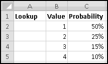
What should we put in the lookup column? We're obviously not counting on exact matches (since RAND() can produce all sorts of numbers) which means we'll need to use Encyclopedia-match in our VLOOKUP(), which (you remember) will find the row with the largest value less than or equal to the key.
As a first guess, you might think the value in A2 needs to be 50%. But think about what happens when RAND() produces 0.1. We'll want VLOOKUP() to choose the first row, which means that the value in A2 has to be less than or equal to 0.1. If you think about it further, you'll realize that the value in A2 has to equal 0. For Encyclopedia-match to work, each Lookup value in column A has to mean "smallest value of RAND() that corresponds to this outcome."
Since we want a 50% probability of choosing value 1, the value in A3 needs to be the value in A2 plus 50%. Similarly, the value in A4 needs to be the value in A3 plus 25%.
So after inputting a 0 in A2, we'll need the formula
=A2+C2
In A3, which we can then copy down:
We'll put our RAND() numbers in column E and our discrete randoms in column F.
First, in E2 put the formula
=RAND()
In F2 we'll want to VLOOKUP() the value from E2 into the lookup table A2:C5, returning what's in column B, which is the second column. For Encyclopedia-match, we omit the fourth variable:
=VLOOKUP(E2,$A$2:c5,2)
In practice you'd probably do both the preceding steps at the same time using VLOOKUP(RAND(),$A$2:c5,2).
Fill down to row 101 so that we've got 100 discrete randoms, and then we can use COUNTIF() to look at their distribution.
You can see that they roughly correspond with our specified probabilities. Your numbers won't be exactly the same as these, but they should be close.
Try changing the parameters of the discrete distribution, making sure the probabilities still add up to 100%.
Technique: Random Ordering
You have five students with book reports to present, and you want to choose a random order for them to present in.
There's a simple way to do this. Just use RAND() to generate a random number for each student. Whoever gets the largest number goes first, the second-largest goes second, and so on. Since everyone is equally likely to have the largest number, everyone has an equal chance of going first.
To start, we'll list the names in column A, and put random numbers in column B.
Then in column C we can use RANK() to figure out the order:
=RANK(B2,B$2:B$6)
(Notice how the random numbers all recalculated when I entered the RANK() formula.)
While it's technically possible that RAND() might produce duplicates and create a tie, it's so astronomically unlikely that it's not worth worrying about.
Sampling Without Replacement
This technique also is a way to "sample without replacement." Imagine that you want to randomly choose three of your ten students to clean the erasers. You can't simply use RANDBETWEEN(1,10) three times, because you might choose the same student twice (or even three times).
Instead you can randomly order them and then take the first three. That is, give each student a RAND() and choose the three students with the largest ones. Obviously this method can be used for any number of samples.
Technique: Fake Data
One simple use for random functions is to make up fake data for testing. For example, let's say you're building a spreadsheet to model a bank's "Keep the Pennies" program. You'd like to test it with lots of data, but you don't want to type out hundreds of grocery bill amounts.
If you're anything like me, your (rounded) grocery bill could be anything from RANDBETWEEN(45,95), depending on what's on sale that week. If you wanted cents too, you could use RANDBETWEEN(4500,9500)/100.
You can also choose random dates
=DATE(2010,1,1)+RANDBETWEEN(0,365)
Random Christmases
=DATE(RANDBETWEEN(1950,2050),12,25)
Random times
=TIME(0,0,0)+RAND()
Random grade point averages
=RANDBETWEEN(0,40)/10
And pretty much anything else you can imagine. Of course, nothing can substitute for well-thought-out test cases, but fake random data is quick and can even point out cases you might not have considered.
Statistics
Rather than trying to figure out our own definition of statistics, we'll crib Wikipedia's:
Statistics is the formal science of making effective use of numerical data relating to groups of individuals or experiments. It deals with all aspects of this, including not only the collection, analysis and interpretation of such data, but also the planning of the collection of data, in terms of the design of surveys and experiments.
This is not a book about statistics, so we won't go into as much detail as we would if I were training you to be a statistician, which I'm not. Instead, we'll cover some of the most useful basics and point you in the right directions to go deeper if you're so inclined.
The Basics of Descriptive Statistics
The simplest use of statistics is to describe data, which we'll give the unsurprising name "descriptive statistics." We've already seen many examples of this, when we learned how to take the SUM(), the AVERAGE(), the MAX(), and the MIN() of large datasets.
Obviously, in each case the "most descriptive" way to communicate the data is to provide the entire dataset. However, this is usually impractical, both because large datasets aren't easily communicated (for example, a collection of millions of survey responses doesn't fit well into the body of an email) and because large datasets aren't easily comprehended (for example, it's hard to make sense of a raw collection of millions of survey responses).
Statistics solve both of these problems. Where thousands of raw surveys might be too much information, "percent of respondents who rated their care good or excellent" is easily communicated and understood. While you'd probably never want to know every SAT score in the country, you might want to know how many test-takers got perfect scores and how many got the lowest score possible.
One Set of Data
First we'll look at statistics for describing one set of data in isolation.
Measures of Central Tendency
Perhaps the most common descriptive statistics are used to identify a value that's in some way "central" to your data. One popular statistic is the mean, which you probably know as the AVERAGE(). It's the SUM() of your data divided by the COUNT() of your data.
Its less common cousin is the median. If you line your data up from smallest to largest, the MEDIAN() is the middle value. If you have an even number of data points, in which case there are two "middle" values, the median is halfway between them.
The median is better than the mean at ignoring "outliers." For instance, if you have the five data points
1,2,3,4,5
Then (as you can check) the mean and median are both equal to 3. If the data were instead
1,2,3,4,50
Then the median would still be 3 but the mean would jump to 12. Which is a better description of the data depends on the phenomenon the data are supposed to capture. If you're trying to estimate the "typical" value (for instance, if you had data representing people's incomes) then you'd probably want to use the median (so that, for instance, a city's handful of billionaire playboys doesn't throw your measure totally off). On the other hand, if the amounts represented by the outliers really matter (for instance, if you had several years of sales data and wanted the holiday season included in your per-month summary) then you'd need to use the mean.
There's a third "typical" statistic, the mode, which measures the most frequently occurring value in your data. If there are multiple "most-occurring" values, it looks like MODE() returns whichever one occurs first, although I wouldn't count on this always being the case.
| Function | Value |
|---|
| MODE(1,2,3,3) | 3 |
| MODE(1,2,2,1) | 1 |
| MODE(2,1,1,2) | 2 |
MODE() isn't super useful, but you might as well know about it.
Measures of Dispersion
It's also good to know how dispersed your data are. Are they tightly clustered or are they spread all over the place?
One way to measure this dispersion is with the sample variance, which is computed according to the formula
1 / (n - 1) [(x1 - x)^2 + ... + (xn - x)^2]
Where n is the number of data points you have, x1 ... xn are the data points themselves, and x is the mean of your data. If that doesn't make the slightest bit of sense, don't worry about it (or check out the Wikipedia article on Variance). If you ever compute the variance, you'll use the VAR() function.
For example, imagine that you time five commercial breaks during "Charles in Charge," and their lengths are 1, 2, 3, 4, and 5 minutes. Then the variance is
=VAR(1,2,3,4,5)
which equals 2.5 minutes * minutes. One problem with the variance is that (as you can see from the formula) its units are the square of the original units, which makes them hard to interpret. What's a minute * minute? No one knows!
Accordingly, we'll more frequently use the sample standard deviation, which is the square root of the sample variance, and which has the same units as the original data. Excel computes it with the STDEV() function:
=STDEV(1,2,3,4,5)
Equals 1.581139 minutes, which is the square root of 2.5, as you can check.
For various technical reasons that are out of scope for this book, the
STDEV() and
VAR() functions are appropriate whenever you have data that represents a
sample of some population. If your data represent the
entire population in question (for example, if you have the lengths of every commercial break during every episode of "Charles in Charge," then you should use the
population variance and
population standard deviation, which are computed by the Excel functions
STDEVP() and
VARP().
In practice this won't usually be the case, and almost always you'll use the sample versions. Once you have more than a handful of data points, the two versions are pretty much equal anyway.
If you've never worked with standard deviation before, it's probably not obvious why it's useful. Stick around for a few sections and learn.
Quantiles
One way of thinking about the median is that it's the 50%-ile of the data -- it's the number that the bottom 50% of the data are less than or equal to. You could just as easily ask for the 25%-ile (the number that the bottom 25% of the data are no greater than) or the 10%-ile or the 1%-ile or any other number. Excel computes these with the PERCENTILE() function, which takes two inputs: the first is an array of values, the second a number specifying the percentile you want. For instance, if your data were in A1:A1000, then
PERCENTILE(A1:A1000,0.1)
would give you the 10%-ile. You can use quantiles to get a fuller picture of how your data is distributed. Consider the two datasets
100,150,200,250,300
and
88,200,200,200,312
The mean (and the median) of each data set is 200, and the standard deviation of each is approximately 79. And yet it's plain that those two sets of data are quite different from each other, which (if the datasets were too big to compare by eyeballing) you could see by looking at quantiles:
| Percentile | First Dataset | Second Dataset |
|---|
| 1% | 102 | 92 |
| 10% | 120 | 133 |
| 25% | 150 | 200 |
| 50% | 200 | 200 |
| 75% | 250 | 200 |
| 90% | 280 | 267 |
| 99% | 298 | 308 |
This shows you that the "middle half" of the second dataset is clustered more tightly (in fact, all at 200) than the "middle half" of the first dataset, while the extremes of the second dataset are more extreme than the extremes of the first. These are differences that you wouldn't know just by looking at mean and median and standard deviation.
You might be wondering how the 10%-ile of the first dataset can be 120 when that's not even in our dataset. The answer is that PERCENTILE() interpolates to find its answer, in the following way.
The smallest value (here 100) is the 0%-ile, and the largest value (here 300) is the 100%-ile. Excel then divides the range 0% to 100% evenly into a number of pieces that's one less than the number of data points. Here we have 5 data points, so 100% gets divided into four pieces that are necessarily 25% each. Then the second value (150) is the 25%-ile, 200 is the 50%-ile, 250 is the 75%-ile, and (as we already said) 300 is the 100%-ile. If we need a percentile that's not one of our data points (like 10%-ile), Excel performs the following interpolation:
10% is 2/5 of the way from 0% to 25%, so the 10%-ile is 2/5 of the way from the 0%-ile (100) to the 25%-ile (150), which is 120.
If you have a large dataset, you'll probably never even notice this interpolation happening, but with small amounts of data you should be aware of it.
Quantiles in Reverse
Sometimes instead of wanting to know what value represents a certain %-ile, you instead want to know what %-ile a hypothetical value would represent. You can do this with the PERCENTRANK() function. Its first input is your original array of data, and its second is the hypothetical value you want ranked. It does the same interpolation as PERCENTILE(), so that
PERCENTRANK({100,150,200,250,300},110)
is 0.05 (or 5%), since 110 is 1/5 of the way from 100 (the 0%-ile) to 150 (the 25%-ile). By default PERCENTRANK() returns only three decimal places of output; if you want more (or less) you can give it an optional third input specifying how many you'd like. Probably three should be enough for anybody.
If you try to PERCENTRANK() a value that falls outside the range of your dataset, you'll get a #N/A error. If there's a possibility that your value is too big or too small to PERCENTRANK() properly, you should probably test for that.
Correlation
The statistics we've looked at so far have all been for summarizing one dataset at a time. (We sometimes used them to compare multiple datasets, but the statistics themselves each depended on only set of data.)
Correlation is a way of measuring how much two paired datasets vary in tandem about their means. We measure this with the correlation coefficient, a number between -1 and +1.
Roughly speaking, when this number is close to +1, it means that large values of the first variable tend to be paired with large values of the second variable (and small values of the first with small values of the second, and average values of the first with average values of the second). A correlation equal to 1 means there's an exact linear relationship between the two variables. If the correlation is close to -1, it means that large values of the first variable tend to be paired with smallvalues of the second variable. And a correlation near 0 means that large values of one variable don't predictably correspond to either large or small values of the other.
Excel computes correlations with the CORREL() function, which takes two equally-sized arrays as inputs and outputs their correlation. For example,
CORREL({1,2,3,4,5},{6,7,8,9,10})
equals 1, because there is a perfect linear relationship between the two arrays. Similarly,
CORREL({1,2,3,4,5},{10,9,8,7,6})
equals -1, and it turns out that
CORREL({1,2,3,4,5},{10,6,7,8,9})
equals 0.
However, a correlation near 0 doesn't mean there is no relationship between the two variables, only that there's not a relationship of the type we described. For example, you can check that
CORREL({-10,-5,0,5,10},{10,5,0,5,10})
equals 0, even though in every case the second variable is ABS() of the first! Knowing the first variable allows you to exactly predict the second; however, knowing how the first variable differs from its mean doesn't allow you to predict how the second variable differs from its mean, which is what correlation measures.
Correlation is not causation
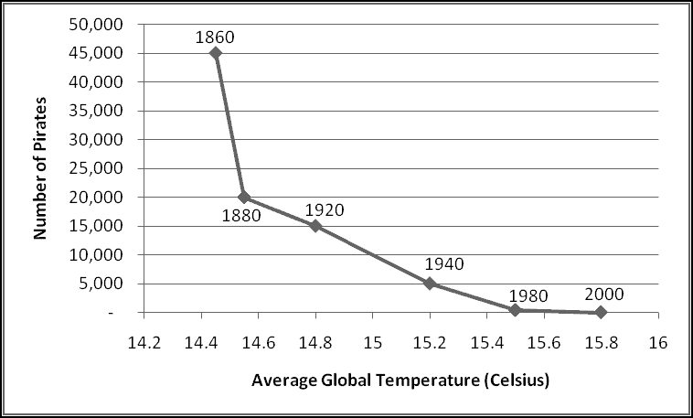
If you have two datasets A and B, there are several reasons why they might be correlated. If they have very little data, the correlation might be spurious, caused by picking the "wrong" data points. It might be that the phenomenon captured by dataset A causes the phenomenon captured by dataset B. Or it might be that B causes A, or that each causes the other, or that some third factor causes both.
In the above graph, the correlation between "number of pirates" and "average temperature" is -0.89. And yet it's apparent (I hope) that neither causes the other.
In short, knowing that two variables are correlated is not sufficient to conclude that either causes the other. Nonetheless, all else being equal, correlation should be stronger evidence for causation than a lack of correlation would be.
Autocorrelation
Sometimes when you have a sequence of data that varies over time, you want to check whether it's correlated with a time-lagged copy of itself. For instance, if you had a series of stock returns, you might want to know if large positive returns tended to be followed by large positive returns. If these returns were in A1:A100, you could look at
=CORREL(A1:A99,A2:A100)
Where the first range can be thought of as "current day's return" and the second range as "next day's return," since A1 (in the first) is paired with A2 (in the second), and so on.
Covariance
For various technical reasons that you'd find boring, statisticians often prefer to look at the covariance between two datasets, which is just their correlation multiplied by their standard deviations.
In fact, probably if you were taking a statistics course you'd start with covariance and then define correlation using the above relationship. Excel computes covariance with the COVAR() function. But unless you already know why you'd want to use COVAR(), you probably don't want to use COVAR().
Example: A Pseudo-Random Number Generator, Revisited
Recall the pseudo-random number generator we built and used to produce 10,000 "random" numbers. At the time we couldn't really test "how random" these numbers were. We checked their AVERAGE(), but that was it.
Now we can check more properties. If the numbers were really uniform random from [0,1), their median should be 0.5. Their 5%-ile should be 0.05 and their 90%-ile should be 0.9. Their standard deviation should be SQRT(1/12). (Just take my word for it.) The correlation between each number and the next should be zero, since if the numbers were "truly" random then there would be no relationship (and in particular not a linear one) between each number and the next. Let's check all these things:
MEDIAN(C7:C10006)
equals 0.4978, which is pretty close.
PERCENTILE(C7:C10006,0.05)
equals 0.0529, and
PERCENTILE(C7:C10006,0.9)
equals 0.8978. The standard deviation is
STDEV(C7:C10006)
which is 0.2894 (while SQRT(1/12) is 0.2887). Finally,
CORREL(C7:C10005,C8:C10006)
is -0.0113, which is also good. Along all these dimensions, our numbers look "pretty random," although that's not to say that there aren't some other measures we don't know that would reveal us as frauds.
The Bell Curve
If you start looking at statistical data, you'll often notice that your data has a "bell" shape.
Most of the data is concentrated right around the average, with smaller and smaller amounts of data as you move further away. This "bell curve" pattern is most frequently modeled using the family of normal distributions.
Every normal distribution can be described by two parameters:
- The mean (i.e. average) specifies the center of the distribution
- The standard deviation specifies how dispersed the data is. A small standard deviation means that most values are close to the mean; a large one indicates that many values are not.
For example, the below graph shows two normal distributions, one of which (the lighter one) has twice the standard deviation of the other. While they are both centered at the same point, the low-standard-deviation one has much higher probability of being close to that center, while the high-standard-deviation one spreads its weight across a wider range.
Any variable described by a normal distribution has the following probabilities of being within the specified distance of the mean:
| Value between | Probability |
|---|
| -0.5 SD and +0.5 SD | 38% |
| -1 SD and +1 SD | 68% |
| -1.5 SD and +1.5 SD | 86.6% |
| -2 SD and +2 SD | 95.5% |
For instance, the distribution of adult male heights is roughly normally distributed, with a mean of 70 inches and a standard deviation of 3 inches.
One possible problem with using normal distributions is that no matter how far away you get from the mean, you still have some non-zero probability. This means that if you model height using a normal distribution, you'll find some (very small) probability that height is negative (which is plainly impossible) and some (very small) probability that someone is 10 feet tall (which is in practice impossible). Generally you'll accept this as a reasonable tradeoff for the modeling benefits you get from using normal distributions.
Using the above table, approximately 68% of adult men should be between 67 inches (5'7") and 73 inches (6'1") tall. Similarly, approximately 95.5% of adult men should be between 64 inches (5'4") and 76 inches (6'4").
Rather than using the above table, we can use Excel. The NORMDIST() function takes four inputs: a value to find in the distribution, the mean of the distribution, the standard deviation of the distribution, and a Boolean that we'll always specify as TRUE. It returns the cumulative distribution, the probability that the specified normal distribution takes on a value less than or equal to the first input. (If you gave it FALSE as the fourth input, you'd get the marginal distribution, which indicates how likely you are to see values near the first input.) For instance,
NORMDIST(76,70,3,TRUE)
is the probability that a normal random variable with mean 70 and standard deviation 3 is less than or equal to 76. Using a now familiar trick, we can subtract one NORMDIST() from another to find the probability the variable lies in a certain range. To estimate the number of adult men who are between 64 and 76 inches tall you'd use
NORMDIST(76,70,3,TRUE)-NORMDIST(64,70,3,TRUE)
which is 95.5%, as we saw in the table above.
It's common to want a "standard normal" with a mean of 0 and a standard deviation of 1, in which case you can use NORMSDIST(), which takes only one input: the value you want to check the probability of being less than. For instance,
NORMSDIST(2)-NORMSDIST(-2)
is the probability that the standard normal is between -2 and 2, which is the same as the probability that any normal is within 2 standard deviations of its mean, which we already know is 95.5%.
If you need to work in the other direction, you can use the NORMINV() function, which takes as inputs a probability, a mean, and a standard deviation, and outputs the value from the specified normal distribution to which there is the appropriate probability of being less than or equal.
For instance, to find the 99%-ile of adult male height (the height that only 1% of males are taller than) you could use
NORMINV(0.99,70,3)
And find that it's 77 inches, or 6'5".
It's a little bit trickier to find intervals containing specified probabilities. Let's say you want to find the symmetric range about 70 inches that contains 60% of all adult males. This means you want 40% of them not to fall into the range, and since you want it symmetric you'll need 20% too tall and 20% too short. So the upper bound needs to be the height above which only 20% fall, which is the height below which 80% fall:
NORMINV(0.8,70,3)
Similarly, the lower bound needs to be
NORMINV(0.2,70,3)
which gives the interval 67.5 inches to 72.5 inches.
Again, if you have a standard normal with mean 0 and standard deviation 1, then Excel provides a simpler function, NORMSINV(), which only takes one input, a probability, and returns the corresponding value.
For instance, a variable that follows the standard normal distribution will 90% of the time lie between NORMSINV(0.05) and NORMSINV(0.95), or -1.64 and +1.64.
Example: Closing the Honors Gap
You're the superintendent of a school system that gives a final graduation exam, scored out of 100. Historically the system has granted graduation honors to students scoring 90 or higher on the exam.
A group of community activists has noticed that every year the students at Washington High School always are honored at a much higher rate than the students at Jefferson High School, and they insist you do something to remedy this unfairness.
You set your district statisticians on the problem, and they report back with the surprising news that the average score at Jefferson is in fact higher than the average score at Washington! They tell you that the distributions of scores within each school are approximately normal. At Washington the mean is 84 and the standard deviation 5. At Jefferson the mean is 85 but the standard deviation is only 3.
Sure enough, this means that at Washington we honor
1-NORMDIST(90,84,5,TRUE)
or 12% of the class, whereas at Jefferson we honor only
1-NORMDIST(90,85,3,TRUE)
or 5% of the class.
Why did we subtract the NORMDIST() from 1? Because NORMDIST(90,84,5,TRUE) tells you what percentage of students scored less than 90. To find out what percentage scored at least 90, we have to subtract that result from 100%, or 1.
Your advisors suggest all sorts of expensive remedies like smaller class sizes and tutoring and rewriting the test. Unfortunately, you don't have budget for any of them. Finally, your Thinking Spreadsheet instructor suggests lowering the honors threshhold.
By experimenting with the numbers, he discovers that at a cutoff of 86.5, you'd be honoring 31% of the students at Washington and 31% of the students at Jefferson, completely eliminating the honors gap. Congratulations, you're a hero of education reform!
The Central Limit Theorem
Why is the normal distribution so important? There's a result in mathematics, called the Central Limit Theorem, that says that whenever you have some source of randomness and you start taking averages, the results will start to look sort of normal. (Its actual statement is more precise and technical, of course, and references neither "some source of randomness" nor "sort of normal.")
To see this, we'll take averages of random numbers generated by RAND() and look at how the distribution changes as we add more numbers to the average. We'll look at 1000 averages of between 1 and 5 random numbers.
To start with, put the formula
=RAND()
in cells A2:E1001. For each row we'll compute 5 averages in columns F:J, and for histogram-ing purposes we'll round them to one decimal place. In F2 we can just use the formula
=ROUND(AVERAGE($A2:A2),1)
and copy it down and over all the way to J1001.
Label the columns, and then let's build a histogram. In L2:L12 we can put the labels 0, 0.1, ..., 0.9, 1.0 (since we rounded to one decimal place), and then we can just use COUNTIF(). If we put in M2
=COUNTIF(F$2:F$1001,L2)
and then fill down and across, we'll get the histograms we want. In an example like this, a nice line chart could help illustrate:
You can see that "Avg1" -- which is just a single RAND() -- is distributed pretty uniformly across [0,1] like you'd expect, and as you add more RAND()s to the average, you get more and more of a bell-curve shape. Because of this, normal distributions show up in real-world data even when there's no obvious reason that they should, which is why you should understand them.
Technique: Random Normals
In an earlier section we saw that we could generate random numbers from discrete distributions by using RAND() and then transforming the output in a specific way.
It turns out that in fact you can generate any random variable by cleverly transforming RAND(). For a number of common distributions, Excel has functions to do the transformations.
For instance, think about what happens when we feed RAND() into NORMSINV(). Well, 25% of the time, RAND() will be less than or equal to 0.25, which is precisely when NORMSINV(RAND()) will be less than or equal to -0.67. And 50% of the time RAND() will be less than or equal to 0.5, and NORMSINV(RAND()) will be less than or equal to 0. Similarly, 97.5% of the time RAND() will be less than or equal to 0.975, which is exactly when NORMSINV(RAND()) will be less than or equal to 1.96.
In other words, NORMSINV(RAND()) produces a random variable that is distributed the same as a standard normal random variable. Therefore it is a standard normal random variable.
This is no accident. For any random variable if you have a FUNCTION() that takes a probability and returns the value that the variable is less than or equal to with the specified probability, then FUNCTION(RAND()) has the same distribution as the random variable. In fact, in the "Simulating a Discrete Random Variable" section, this is actually what we were doing. We just didn't know it.
Simple Linear Regression
We've seen how to use CORREL() to test to what extent there's some sort of linear relationship between two variables. But even when we saw a correlation close to 1 (meaning "perfect linear relationship"), CORREL() didn't tell us anything about the details of that linear relationship.
The statistical tool of linear regression finds the "best" linear relationship between two datasets. For various technical reasons, "best" means "the linear relationship that minimizes the sum of the squares of the differences between corresponding elements of the array of observed values and the array of predicted values."
In this section we'll look at simple linear regression, the case when each dataset contains only one variable. One of the datasets will contain the values of our independent variable, which we'll call x, and one will contain the values of our dependent variable, which we'll call y.
Our procedure finds the parameters m and b so that the linear equation
y = m * x + b
"best" predicts the observed values of y.
The above picture graphically illustrates a regression line that best fits the relationship between two datasets. You can see that it's not a perfect fit but it generally captures how the two variables are related. (If you want more mathematical details, check out the Wikipedia article "Simple linear regression.")
Excel computes m with the SLOPE() function and b with the INTERCEPT() function. Each takes the array of y variables as its first input and the array of x variables as its second input.
Goodness of Fit
SLOPE() and INTERCEPT() find the best linear relationship between x and y, but they don't say anything about how good this relationship is. It could be terrible!
One measure of the goodness of the fit is the R-squared of the regression, a number between 0 and 1 that measures the fraction of variation in the y variable that can be "explained" by variation in the x variable.
Why is "explained" in scare-quotes? Because (as we saw when we discussed correlation) the existence of a strong relationship between two variables doesn't mean that one causes the other. This is not the sort of "explanation" that would necessarily convince a judge or an angry parent or a jealous lover. Here we mean "explain" only in the purest mathematical sense.
If the R-squared is close to 1, then there's a strong linear relationship between x and y, which means that almost all the variation in y can be "explained" by the variation in x; if it's close to 0, then almost none of the variation in y is "explained" by the variation in x.
Excel provides the RSQ() function to compute the R-squared. Following form, it takes two inputs, an array of y values and an array of x values. If your x data is in A1:A100 and your y data in B1:B100, then you'd compute
RSQ(B1:B100,A1:A100)
It turns out that the R-squared also equals the square of the correlation between x and y. Technically you should probably think of it as the correlation between m*x + b (the predicted values of y) and y, but since the predicted values are (by definition) a linear function of x, they have the exact same correlation with y (or any other variable) as does x.
So you could also compute it as
CORREL(B1:B100,A1:A100)^2
and you'd get the same result.
Another measure is the "standard error of regression," which is the standard deviation of the prediction errors, the differences between the predicted values of y and the actual values of y. We compute this with the Excel function STEYX(), which takes the same two inputs as the other regression functions
=STEYX(B1:B100,A1:A100)
A common assumption when doing regression is that the prediction errors are normally distributed. To the extent this is a good assumption, then (from what we already know about the normal distribution) the predicted values of y should be within STEYX() of the actual values of y approximately 68% of the time.
Forecasting
One reason we might perform a regression is in order to forecast what values our dependent variable would take on for hypothetical values of the independent variable.
One way of doing this is to use SLOPE() and INTERCEPT() to estimate m and b and then to plug hypothetical x values into the equation
y = m * x + b
To estimate the corresponding y values.
An alternative approach is to use the Excel function FORECAST(), which takes three inputs: a hypothetical value of x, an array of the known y values, and an array of the known x values. Behind the scenes Excel will compute the SLOPE() and the INTERCEPT() and then output the predicted y value correponding to the first input.
If you only need to predict one new data point, this might be a preferable approach -- it's much simpler, which decreases the chance you'll make some sort of error. On the other hand, each time you use FORECAST(), it computes a SLOPE() and an INTERCEPT() behind the scenes. Using more than one FORECAST() on the same x and y data means doing a lot of unnecessary work, which can really slow your spreadsheet down!
Instant Scatterplot Regression
If you've made a Scatter Chart of your data, you can actually "run" the regression in the chart. Just right-click on one of the data points and choose Add Trendline. In the menu that pops up, make sure the Regression Type is "Linear," check the boxes for "Display Equation on Chart" and "Display R-squared value on chart," and click Close. Excel will add a label to the chart with the equation for the best fit line and the R-squared value.
Now, because all these values are in chart labels instead of cells, you can't actually use them. Nonetheless, this gives you a quick way to inspect how good a simple regression would be.
Multiple Regression
In practice, "simple" linear regression isn't always useful. Most "dependent" variables depend on a lot of things, and most useful linear models take more than one of them into account.
When you're computing a multiple regression, you'll still have an array of dependent variables y, but now you'll have several arrays of dependent variables x1, ..., xn. And you'll be looking for a linear relationship
y = m1* x1 + ... + mn * xn + b
By again choosing m1, ..., mn and b to minimize the sum of the squares of the prediction errors.
There are two ways to use Excel for multiple regression. One is through a menu item that calculates the regression and then stores the results as static numbers. Just as we eschewed a similar method of generating histograms as not Thinking Spreadsheet, we'll avoid this way of running regressions.
The second way involves the function LINEST(), which must be used as part of an array formula. Accordingly, we'll postpone discussing it until the chapter on array formulas.
All things being equal, a football team that scores more points throughout the season will probably win more games, as will a football team that allows its opponents to score fewer points.
The file FootballWins.xlsx on ThinkingSpreadsheet.com contains, for each of the 32 NFL teams, how many points they scored, how many points they allowed, and how many games they won during the 2009 season.
If you check the correlation between Scored and Wins with
CORREL(B2:B33,D2:D33)
you'll find that it's a healthy 0.88, which indicates a strong linear relationship between the two. The correlation between Allowed and Wins is a weaker -0.68. The sign is negative because (in general) teams that allow their opponents to score more points win fewer games.
It's often a good idea to inspect the data visually with a scatterplot. Here the x-axis is Scored and the y-axis is Wins:
First we'll compute the slope with
=SLOPE(D2:D33,B2:B33)
And then we'll do the same for INTERCEPT(), RSQ(), and STEYX().

The best fit line tells us that if we know how many points a team scored, we predict their win total with
Wins = 0.035272 * Scored - 4.11475
Obviously this is not an exact relationship. First, the number of Wins needs to be an integer between 0 and 16 (the number of games in a season), but this formula doesn't in general produce integers, is less than zero when the number of points scored is very small, and is greater than 16 when the number of points scored is very big.
Nonetheless, it gives us an estimate of how much points matter. Each additional point scored (on average) counts for 0.035 wins, which means that every 28 points you score during the season earns you (on average) an additional win.
You could also find this best fit by adding a Trendline to the scatter plot
although this wouldn't give you the regression outputs in a usable format.
Starting in E2, let's compute the predicted number of wins according to our model:
=B2*$I$1+$I$2
and fill down. Then in F2 we'll compute the error in our prediction:
=E2-D2
And fill down again:
Where are the biggest errors? The biggest positive errors (which means we predicted too many wins) are for Detroit, Kansas City, and NY Giants, all of which Allowed a lot more points than average. Similarly, the biggest negative errors (which means we predicted too few wins) are for Indianapolis, Cincinnati, and Dallas, all of which Allowed a lot fewer points than average.
This suggests that our model would be even better if it could also take points Allowed into account. One way of doing this would be to look at the point differential (Scored - Allowed). Indeed, if you do so, you'll find an even better fit than just looking at wins. Why give them equal weight, though? Why not look at (Scored - 0.5 * Allowed)?
This is where multiple regression would be handy, as regressing Wins on both Scored and Allowed would find the optimal weights for prediction. We'll get there, I promise!
Monte Carlo
Monte Carlo is a powerful technique that uses random numbers to simulate complicated phenomena in order to analyze the results. Excel turns out to be a surprisingly capable tool for small-scale simulations.
What is Monte Carlo?
We know (or rather, we assume) that if you flip a coin you'll get heads half the time and tails half the time. But what if we didn't know that? What if someone handed you an unfair coin and asked you to figure out how frequently it ended up heads?
Probably you'd start flipping it and counting how many heads you got. If after 1000 flips you'd seen 250 heads, you would estimate that the unfair coin landed heads about 25% of the time.
Some probability problems we can quickly get exact answers for, either through careful reasoning or brute force. For instance, if you roll two dice, the probability that their sum is at least 11 is 1/12, which you can check by listing out all 36 possible (and equally likely) rolls and observing that 3 of them add up to 11 or 12.
Not all problems are amenable to this kind of solution, though. If you roll 10 dice, what's the probability the sum is at least 40? Since there are POWER(6,10) possible rolls, you'd have to look at more than 60 million outcomes. You could write a computer program to do this, but you probably couldn't do it in a spreadsheet.
But if you didn't need an exact answer, you could estimate it just like you did with the unfair coin. You could repeatedly roll (virtual) sets of 10 dice and keep track of how often their sum was at least 40. If you did this a lot of times, the observed probability would "converge" to the true probability. (How many times? We'll punt on that question for now.)
To demonstrate this, let's roll 10 dice in A2:J2. Each die is just a RANDBETWEEN(1,6). Then in K2 we'll take their sum:
=SUM(A2:J2)
And in L2 we'll record whether it's greater than or equal to 40.
=IF(K2>=40,1,0)
Your spreadsheet should look like this:
But with different rolls.
Why did we use 1 and 0 instead of TRUE and FALSE? Because if we use to 1 to mean "success" and 0 to mean "failure" then the AVERAGE() is exactly the observed probability of success.
AVERAGE() = (1 * # of TRUE + 0 * # of FALSE) / (# of OBSERVATIONS)
Copy the formulas down 1000 rows, and in M2 take the average of everything in column L. (Recall that AVERAGE() will ignore the text label in M1.)
I see an estimated probability of 0.209. If I refresh with F9, it drops to 0.198. (Your numbers will differ, of course.)
So it looks like the probability is around 20%, but we'd like a more precise estimate. When I copy it down another 4000 rows, I see 0.2054, and when I go to 10,000 rows I get numbers that seem mostly between 0.2 and 0.21.
Finally, extend what's left all the way down to row 100,001. It probably takes a while to compute, but I get numbers between 0.204 and 0.206.
This tells us that the actual probability of getting the dice to add to 40 or greater is right around 20.5%. (In fact, to four decimal places, the exact probability is 20.4968%.) The more rows you add, the more precise your estimates will become.
Frivolous Example: Estimating PI() by Throwing Darts
Imagine a square whose side has length 1. We can pick "random" points in the square by choosing an x-coordinate with RAND() and a y-coordinate with a second RAND().
If we have some subset of the square that takes up half the area of the square (for instance, the left half), then we expect that half the points we "randomly" pick will end up in that subset. If the subset takes up 1/10 the area of the square, then we expect that 1/10 of the points we pick will end up in that subset.
What's interesting is that we can do this in reverse. If we have a subset whose area we don't know, we can randomly pick points in the square and keep track of what fraction of them land in the subset. If we're picking points in a way that everywhere in the square is equally likely, and we find that about 25% of the points we pick land in the subset, then we estimate that the subset takes up 25% of the area of the square.
We'll call this the "throwing darts" method, since one way of doing this without a computer would be to throw darts at the square and count how many land in the subset we're interested in.
The mathematical constant PI() is equal to the ratio of a circle's area to the square of its radius. (There are other ways to define it, but this is the one we'll stick with.) Its value is approximately 3.14. Excel happens to come with a PI() function that will give you its value, but back in antiquity people had to come up with clever ways to approximate it. Here's one.
The circle with radius 1, you might remember from geometry, is the set of points whose x and y coordinates satisfy x^2 + y^2 = 1. Points with x^2 + y^2 < 1 are inside the circle, those with x^2 + y^2 > 1 are outside the circle. (If you don't remember this from geometry, you might want to read through the Wikipedia article "Circle.")
Notice that 1/4 of the circle lies inside the square where x is between 0 and 1 and y is between 0 and 1:
Since the area of the whole circle is PI(), the area of the part of the circle inside the square is PI()/4. That means that if we pick points at random in the square and look at the fraction that satisfy x^2 + y^2 < 1, that fraction should be approximately PI()/4. If we multiply that fraction by 4, the results should be approximately PI().
So, in A2 and B2, let's start by picking x and y-coordinates with RAND(). In C2 we can compute (A2^2)+(B2^2), and in D2 we'll check whether it's inside the circle:
=IF(C2<1,4,0)
Why 4? If we'd used 1 to represent "inside the circle" and 0 to represent "outside the circle," then the average would approximate PI()/4. Using 4 (=4*1) and 0 (=0*1) means that the average will approximate PI().
Now, copy these formulas down 10,000 times and in E10001 let's check the average
=AVERAGE(D2:D10001)
In F10001, let's put =PI() for comparison.
Refresh it a few times. How good a job did we do?
Technique: Using a Data Table
One little known feature of Excel is the "Data Table," which you shouldn't confuse with the more recent "Table" feature.
If you remember when we first introduced the use of $, we gave the example of building a multiplication table, with one factor down the first column, another factor across the top row, and each cell containing their product.
A data table allows us to do the same thing with more complicated formulas that can't just be entered into one cell. For simplicity, we'll illustrate it by rebuilding our multiplication table (which plainly can be built without using Data Table functionality).
To start, put the value 1 in both A1 and A2. (It doesn't actually matter what values you use, but let's put 1.) Now recreate the multiplication table labels in C2:C6 and D1:H1. Here's the tricky part: enter the multiplication formula only in the top left corner in cell C1, and have it multiply A1 and A2:
Now select the whole range C1:H6, and on the Data Ribbon in the Data Tools section under What-If Analysis choose Data Table:
You'll get a pop-up window asking for "row input cell" and "column input cell." The "row input cell" means "where do you want Excel to plug in the values from the top row?" We'll want them plugged into A1, so input A1 there. Similarly, the "column input cell" means "where do you want Excel to plug in the values from the first column?" We'll want those in A2, so input A2 there and click OK.
In each cell of the table, Excel has applied the formula at the top left ("multiply A2 by A1") after substituting the value from the top row into A1 and the value from the first column in A2. You can change the values in the first row and first column and you'll see that the table values change accordingly.
Of course, we could have done the same thing by putting the formula
=D$1*$C2
In D2 and filling the table, but that wouldn't have illustrated how to use Data Table.
If you click anywhere in the Data Table, you'll see a fake array formula
{=TABLE(A1,A2)}
which is how you can see that it's a Data Table and where its values are getting plugged in. If you try to clear one of the cells, you'll get a popup informing you that you can't change part of a Data Table, which you can't.
Data Tables and Monte Carlo
What on earth does this have to do with Monte Carlo simulations? All of our simulations so far have involved repeated sampling of quantities that can be easily computed in a few cells, like the x and y-coordinates for a point in a square, or the rolls of ten dice.
Yet you can imagine wanting to use Monte Carlo to simulate some quantity that you can't simply fit into one row. Maybe it takes most of a worksheet to compute, but it's not feasible to create 1000 (or 10000 or more!) identical worksheets in order to get lots of samples.
However, what you can do is use the quantity you want simulated as the formula for a Data Table. Just put descriptive labels along the rows and columns. The key idea is to use nonsense values for "row input cell" and "column input cell" -- you should specify cells that aren't even used!
Then Excel will populate the Data Table by plugging each of your meaningless row and column labels into the unused cells and recalculating the spreadsheet. And although your meaningless labels won't affect the Data Table's formula, the recalculation will cause the random variables in your model to be regenerated. The effect is that each cell in the Data Table represents one simulation of your random variable.
This is not to say that you have to specify meaningless cells. You might want only the column values to be meaningless and have the row values actually feed into the model.
To see how this works, let's simulate 10 rolls of a die.
In A1 enter the formula for the Data Table:
=RANDBETWEEN(1,6)
Then in B1 put the nonsense value "Rolls" and in A2:A11 put labels 1 through 10. (The labels aren't a necessary part of the process, and nothing bad would happen if you used different labels or none at all.) Select A1:B11, and insert a Data Table using the empty cells D1 and D2 as "row input" and "column input". You'll see the table populated with random dice rolls, and if you recalculate the sheet, you'll see them change.
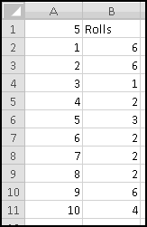
Of course, in this simple example, you could have just used RANDBETWEEN(1,6) ten times. But more complicated models might need this Data Table approach.
Because of the way Excel calculates them, Data Tables can really slow your spreadsheets down. Try not to use them unless they're necessary, and try to avoid using more than one in a spreadsheet.
Data Tables and Graphing
Another thing Data Tables can be useful for is graphing unwieldy functions. If you have some output that takes all of cells A1:A100 to compute, it can be hard to generate a graph showing how it changes as cell A1 changes.
A Data Table makes this simple. Put the values you want to plug into A1 down the column and a dummy label in the top row, then make a Data Table and graph the results.
Again, Data Tables will slow down your spreadsheet tremendously, so after you produce your graph you might consider using Copy-Paste-Special-Value.
Example: Catching the Cheaters
As part of your classroom lesson on probability and statistics, you tell your students to flip a coin 100 times and bring you the sequence of results. Over the years you've learned that most students are too lazy to do the assignment and instead just write down a sequence that "seems like" the results of flipping a coin 100 times.
However, they never seem to put enough long streaks in their flips, which gives you an easy way to catch them. We'll use Monte Carlo to estimate the size of the longest streak (of either Heads or Tails) we should expect to see.
If we use 0 for Tails and 1 for Heads, we can simulate the flips in A2:A101 with
=RANDBETWEEN(0,1)
And then in B2:B101 keep track of the current streak of Heads or Tails. In B2 the streak length is just 1. And in B3 (and below) the streak is either 1 (if the flip is different from the previous flip) or one more than the previous streak (if the flip is the same):
=IF(A3=A2,1+B2,1)
And then fill down:
Now in D1 find the longest streak with
=MAX(B2:B101)
And in D2:D501 put the labels 1 to 500 for our simulations. Select D1:E501 and insert a Data Table with the (nonsense) values C1 and C2 for Row input cell and Column input cell.

It might take a while to compute. Once it finishes, we'll add a histogram to summarize the distribution. In G2:G21, we'll have buckets from 1 up to 20 representing the longest streak in a sequence. Then in H2, we'll count how many simulated sequences had the corresponding longest streak:
=COUNTIF($E$2:$E$501,G2)
And in I2 we'll convert this to a percentage by dividing by 500, the number of simulations:
=H2/500
Finally, we fill down to see the results:
We can see, for instance, that if a student turns in a sequence that doesn't even have 4-in-a-row at some point, then probably she didn't generate it by flipping coins.
If a phenomenon is truly random, then some fraction of the time it will necessarily behave in ways (like streaks) that "appear" non-random. Paradoxically, if the phenomenon never appears (to the human eye) "non-random" then probably it isn't random.
Example: The Birthday Problem
Your friend, who just took a probability class, insists that if you have 23 people in a room, there's a more than 50% chance that at least two of them have the same birthday. This seems pretty incredible to you, so you decide you'll check it using Monte Carlo.
After a little bit of thought, you come up with the following steps:
- Simulate the birthdays of 23 people.
- Check whether any two of the birthdays are the same.
- Use Data Table to repeat and collect statistics.
The first is easy. If we ignore leap years and assume that all birthdays are equally likely, then we can simulate birthdays using
=RANDBETWEEN(1,365)
Which we'll put in A2:A24. In B2 we need to find out if the birthday in A2 is a duplicate. In other words, does the value in A2 match any of the values in A3:A24? That suggests using MATCH(), but if you play around a bit you'll see that -- because of the "every row but this one" construction -- it's hard to craft a single formula that works for all 23 people.
A more Thinking Spreadsheet way of asking the same thing is "does the value in A2 match any of the values in A2:A24 more than once?" The "more than once" is important because the value in A2 will certainly match the value in A2. This suggests the formula
=COUNTIF($A$2:$A$24,A2)>1
which can then be copied down without incident.
Now in D1 we can test if there are any duplicates using
=OR(B2:B24)
In D2:D101 let's label our simulations 1 to 100, and in E1 add the label Duplicate. Select D1:E101, and create a Data Table with the unused C1 and C2 as Row input cell and Column input cell. This will give you 100 Booleans indicating whether each group of 23 had a duplicated birthday or not.
Then in G2 you can estimate the probability of duplicate birthdays:
=COUNTIF(E2:E101,TRUE)/100
And you should get an answer not too different from
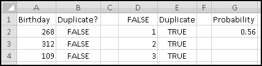
To feel really confident you'd want to simulate a lot more than 100 groups of people, but your friend's claim certainly seems reasonable!
You show this spreadsheet to your friend, who promptly accuses you of making things unnecessarily difficult. If you have a list of 23 people, she points out, there are
POWER(365,23)
Possible combinations of birthdays. And "no duplicates" amounts to choosing the birthdays without replacement, which means that
PERMUT(365,23)
Of the choices have no duplicates. Therefore the exact likelihood of duplicates is
1-PERMUT(365,23)/POWER(365,23)
Or 50.7%.
Example: A Poker Hand Simulator
Poker is a popular card game played with a standard deck of 52 cards consisting of all possible combinations of four suits (hearts, clubs, diamonds, and spades) and thirteen ranks (ace, two, three, four, five, six, seven, eight, nine, ten, jack, queen, and king). The ace plays a dual role in that it can either be "the rank below two" or "the rank above king."
A poker hand consists of 5 cards, and the player with the highest-ranked hand wins. The rankings are as follows, from best to worst:
- Straight Flush: All five cards have the same suit, and their ranks are consecutive. As mentioned above, {ace,two,three,four,five} would count as "consecutive" but so would {ten,jack,queen,king,ace}.
- Four of a Kind: Four of the five cards have the same rank.
- Full House: Three of the cards have the same rank, and the other two also have equal rank (but obviously different from that of the first three).
- Flush: All five cards have the same suit.
- Straight: The cards have consecutive ranks.
- Three of a Kind: Three of the cards have the same rank, but the other cards have different (unequal) ranks.
- Two Pair: Two cards share a rank, two other cards share a second rank, and the fifth card has a third rank.
- One Pair: Two cards share a rank, while the other three cards have three different ranks.
- Nothing: None of the above.
There are various rules for breaking ties between two identically ranked hands, but we're not going to go into them. Also, we'll pretend that the suits are {1,2,3,4} and the ranks are {1,...,13}. We've already seen how to use INDEX() to convert them to more descriptive names if we wanted to.
To start with, we'll create a "deck" of cards, using our time-tested odometer pattern. In column A, we'll put the Card #, which runs from 1 to 52. In column B, we'll put the Rank, starting with a 1 in B2. And in column C, we'll put the Suit, starting with a 1 in C2.
Then one way of setting up the odometer is simply
=MOD(B2,13)+1
in B3 and
=C2+IF(B3<B2,1,0)
in C3 and filling down. Finally, since we'll want to simulate drawing five cards at random, we'll need to put RAND()s in column D for the "sampling without replacement" technique.
Your spreadsheet should start out like this
But with different random numbers, of course.
Now in columns F:I, let's find the five cards in our hand. We'll start simply with the numbers 1 to 5.
To sample without replacement, G2 needs to find the card with the largest RAND(), G3 the card with the second largest, and so on. This means the formula for G2 should be
=MATCH(LARGE($D$2:$D$53,F2),$D$2:$D$53,0)
which you can then fill down. (Technically this gives the index of the cell in D2:D53 that contains the largest value, but its first cell D2 contains card #1, its second cell D3 contains card #2, and so on, which means this does what we need.)
Given a card number in G2, we can find its rank with
=INDEX(B$2:B$53,$G2)
Not $-ing the B and $-ing the G means that if we Copy-Paste this same formula into the Rank column, its references will move appropriately:
=INDEX(C$2:C$53,$G2)
Fill these down and you'll have your five cards.
Yours will be different because of randomness, of course.
Now we need to think about how to categorize our hand. How do we know if it's a Full House or a Flush? Well, a Flush means you have five cards of the same suit, so if you were to count how many of the cards were of each suit, you could just look for a five. Similarly, if you were to count how many cards were of each rank, you could look for a 4 to find a Four-of-a-Kind, and you could look for a 3 and a 2 to find a Full House.
Therefore, it seems like a good start would be to count the cards of each rank and of each suit. We'll set this up in columns K:O.
This is just a simple job for COUNTIF(). In L2 the formula should be
=COUNTIF($I$2:$I$6,K2)
And in O2
=COUNTIF(h2:h6,N2)
Every poker hand can be easily read off from these numbers, with the exception of a Straight, which we'll have when there are five consecutive ones in column O. In order to determine this, we'll label column P "Straight?" and add in a Boolean telling us whether there's a straight ending at a certain rank.
In cell P6, we can check if there's a straight ending at a 5 with
=COUNTIF(O2:O6,1)=5
Which is TRUE when every cell in O2:O6 contains a 1, which happens precisely when our hand contains one ace, one 2, one 3, one 4, and one 5. If we fill this down, it will cover all Straights except for the weird special case of "aces high," which will need its own formula in P2
=AND(O2=1,COUNTIF(O11:O14,1)=4)
Which checks that there's one ace and one ten, one jack, one queen, and one king.
You should sanity check that your cards are all being counted correctly and refresh a few times with F9.
At this point we're ready to judge our hand. Let's put the rankings in column S, leaving room in column T for a Boolean identifying what we dealt.
Our first possible hand is a Straight Flush, which we have precisely when we meet the conditions for both a Straight and for a Flush. This means we can use in T2 the formula
=AND(OR(P2:P14),COUNTIF(L2:L5,5)=1)
The first condition in the AND() checks that one of the Straight tests is TRUE. The second checks that all five cards belong to a single suit, which is the Flush test. The AND() will be TRUE exactly when both are TRUE, that is, exactly when the hand is a Straight Flush.
In T3 we need to identify Four-of-a-Kind, which is the case exactly when there's a 4 in one of the cells O2:O14
=COUNTIF(O2:O14,4)=1
In T4 we have Full House, which means that one of the ranks appears three times in our hand and a different rank appears twice. That's the same as saying that there's a 3 in O2:O14, and that there's also a 2.
=AND(COUNTIF(O2:O14,3)=1,COUNTIF(O2:O14,2)=1)
Next is Flush. We can't just look for a 5 in L2:L5, because we don't want to include Straight Flushes, which we've already counted. That means in T5 we'll have to exclude them:
=AND(COUNTIF(L2:L5,5)=1,NOT(T2))
Similarly, we need to exclude Straight Flushes when counting Straights in T6:
=AND(OR(P2:P14),NOT(T2))
A hand is a Three-of-a-Kind if there's a 3 in O2:O14 and there's not a 2 (which would mean Full House instead). We can check this in T7 with
=AND(COUNTIF(O2:O14,3)=1,COUNTIF(O2:O14,2)=0)
We have Two Pair if there are two 2's in O2:O14
=COUNTIF(O2:O14,2)=2
And we have just one One Pair if there's one 2 and three 1's.
=AND(COUNTIF(O2:O14,2)=1,COUNTIF(O2:O14,1)=3)
The only case left is Nothing, which should be TRUE precisely when all the other possible Rankings are FALSE:
=NOT(OR(T2:T9))
Again refresh the spreadsheet several times to make sure it's judging your poker hands correctly.
Finally, if we want a cell to contain the judgment, we can simply use
=INDEX(S2:S10,MATCH(TRUE,T2:T10,0))
Which looks for the TRUE in T2:T10 and returns the corresponding Hand from S2:S10.
At this point you could use the last output as the start of a Data Table to simulate thousands of poker hands and ask questions like "how frequently does a flush appear?" Excel is almost certainly not the best tool for this task, but this example ties together many of the things we've learned and makes a nice ending to the "easy" part of the book. (That's right, this was the easy part.)
Array formulas are an advanced technique that most spreadsheet users never learn. That's too bad, as there are many things that are easier to do if you use array formulas, and there are many other things that are impossible to do without using array formulas. Before writing this chapter, I used array formulas sparingly. Since writing this chapter, I use them all the time.
What is an array formula? An array formula is
- a formula
- that uses an array
- as an array
- somewhere where Excel doesn't usually expect an array
At this point you know what a formula is, so we won't dwell on that part of the definition.
You know what an array is too. It's a rectangle of values, specified either explicitly (like {1,2,3;4,5,6}) or by reference to its containing range (like C3:D4). We won't dwell on that part of the definition either.
The "as an array" piece is important. You can always use an array as a value; Excel will just use the value in the top left cell. For instance, if you enter the formula =(A1:A3)+1, you'll get the same result as if you'd used =A1+1.
The "where Excel doesn't expect an array" is also important. =SUM({1,2,3}) is a formula that uses an array as an array, but SUM() is perfectly happy to take arrays as its arguments. For our purposes, this makes SUM({1,2,3}) not an "array formula."
When Excel gets a formula that has an array where it's expecting a single value, you can specify that it should apply the formula to each value in the array and return the array of results.
For instance, in an array formula, Excel will understand ABS({-1,0,1}) as "apply ABS() to each of the elements in the array and return the results in a new array," which in this case will be {1,0,1}.
Similarly, if you use {1,2} * {3,4} in an array formula, multiplication will be done component-wise, and will result in the array {1*3,2*4}, or {3,8}.
Now, if you type one of these formulas in as is, you won't see an array result. The formula
=ABS({-1,0,1})
will just produce the value 1, because Excel doesn't know it's supposed to be using array formulas and just looks at the first element.
In order to specify an array formula, you need to hold down both Ctrl and Shift when you press Enter. If you don't Ctrl-Shift-Enter, your formula won't work.
You'll know you have an array formula because in the formula bar you'll see it in curly braces.

Accordingly, when we write down array formulas, we'll also surround them in curly braces.
You should never type these curly braces. This is just a signal to remind you that these are array formulas and that you should use Ctrl-Shift-Enter when you input them.
The only time you actually type curly braces is when you're specifying constant arrays.
Most commonly we'll use array formulas that return a single output. We'll do this by finishing with functions like SUM() and AND(), which can take arrays as inputs and return just a single value.
For instance, if you wanted the sum of the absolute values of the contents of cells A1:A100, you could use the array formula
{=SUM(ABS(A1:A100))}
(The curly braces show that it's an array formula and that you have to use Ctrl-Shift-Enter.)
What's going on here? ABS(A1:A100) is the 100x1 array whose values consist of ABS() applied to cells A1:A100. Then SUM() adds up the values of that array, as you'd expect. Because ABS() doesn't normally take an array as an input, this is an array formula that needs to be input with Ctrl-Shift-Enter. If you forget Ctrl-Shift-Enter, ABS() will only look at the first cell of A1:A100, and you'll get the same results as if you'd typed =SUM(ABS(A1)).
Technique: Using Constant Arrays
It's often useful to create array formulas using constant arrays. For instance, if you want to check whether a cell matches any one of several values, you could use
{=OR(A1={1,2,3})}
Here A1={1,2,3} creates the 3x1 array {A1=1,A1=2,A1=3}. Then OR() tests whether any of these is TRUE. If you forget Ctrl-Shift-Enter, you'll only be testing whether A1 equals 1, and you'll get the wrong answer.
Of course, in this case it wouldn't be substantially more difficult to use the non-array formula
=OR(A1=1,A2=2,A2=3)
A more interesting example is checking whether the text in a cell contains swear words:
{=OR(ISNUMBER(SEARCH({"heck","darn","gosh","shoot"},A1)))}
Here the inner SEARCH() creates an array consisting of position numbers (for the swear words that SEARCH() finds) and #VALUE errors (for the swear words that it doesn't). The ISNUMBER() converts this to an array of TRUE and FALSE values, and the OR() checks that at least one of these is TRUE. If you forget Ctrl-Shift-Enter, the formula only checks for "heck."
Another solution is
{=COUNT(SEARCH({"heck","darn","gosh","shoot"},A1))>0}
Since COUNT() counts any position numbers and ignores any #VALUE errors.
Again you could do this as a non-array formula, but you'd have to include a separate SEARCH() for each swear word. And when you realized that you needed to also test for "golly" and "flip" and "jeez," you'd have to add an additional SEARCH() for each of these as well. With our approach, you just have to add them to the constant array.
Technique: Abusing SUM()
Although we mentioned it a long time ago, we haven't really used the fact that you can do arithmetic with Booleans. TRUE counts as 1, and FALSE counts as 0. So, for instance, TRUE+1 will be 2, and FALSE*3 will be 0. TRUE+TRUE+FALSE equals 2.
SUM() ignores Booleans in cells, you'll remember, so if A1 contains TRUE, then SUM(A1) equals 0. However, SUM(A1*1) equals 1, because A1*1 is evaluated as TRUE*1, which equals 1, before SUM() gets a hold of it. Similarly, SUM(A1*A1) equals 1, since A1*A1 is evaluated as TRUE*TRUE, which equals 1.
We can use this trick to make SUM() behave like SUMIF() and COUNTIF().
To start with, put the numbers 1 to 10 in A1:A10.
Imagine we want to count how many of those values are less than 5. The array (A1:A10<5) is a 10x1 array with TRUE values in the first 4 cells (which contain values that are less than 5) and FALSE values in the last 6 cells. Since it only consists of TRUE and FALSE, if we SUM() it using an array formula
{=SUM((A1:A10<5))}
we'll get 0. However, the array 1*(A1:A10<5) contains 1 in the first 4 cells (from 1 * TRUE) and 0 in the last 6 cells (from 1 * FALSE), so the array formula
{=SUM(1*(A1:A10<5))}
behaves equivalently to COUNTIF(A1:A10,"<5"). Probably you'd never do this with an array formula, since using COUNTIF() is simpler.
What if we wanted SUMIF() functionality? Consider the array (A1:A10<5)*(A1:A10). The first element is TRUE * 1, which equals 1. The second element is TRUE * 2, which equals 2. The third element is TRUE * 3, which equals 3, and the fourth element is TRUE * 4, which equals 4. The fifth element is FALSE * 5, which equals zero, and similarly all subsequent elements equal zero. So the array formula
{=SUM((A1:A10<5)*(A1:A10))}
equals 1 + 2 + 3 + 4, and is the equivalent of SUMIF(A1:A10,"<5"). Again, you'd probably never do this, since it's easier just to use SUMIF(). But we can extend this method to do things that SUMIF() can't. For example, we can easily add extra conditions to the IF().
The array (A1:A10<5) * (A1:A10>2) will be TRUE precisely for those cells whose value is both less than 5 and greater than 2. Therefore
{=SUM((A1:A10<5)*(A1:A10>2)*(A1:A10))}
Equals 3 + 4, since 3 and 4 are the only numbers having both conditions TRUE. And this is something you can't do with SUMIF. (You could do it with SUMIFS(), except that I made you promise never to use SUMIFS().)
Example: The Histogram, Revisited
Recall our histogram of Denver Broncos by weight:
Previously we used a pair of COUNTIF() functions to figure out each bucket. With array SUM() we can just use one function.
In L2 we want to count the weights in E2:E84 that are greater than or equal to K2 but less than K3. This is just
{=SUM(($E$2:$E$82>=K2)*($E$2:$E$82<K3))}
We can copy and paste this formula down to to L3 and L4. In L5 we don't want an upper bound, so there's just one condition to meet. We can either use the "multiply by 1" trick
{=SUM(1*($E$2:$E$82>=K5))}
or just use SUMIF().
Example: A Case-Sensitive SUMIF()
Recall that the SUMIF() function isn't case sensitive. The formula
=SUMIF(A1:A100,"TS",B1:B100)
will include cells in column B that have any of "TS", "Ts", "tS", or "ts" in column A. We know that the EXACT() function returns TRUE only when its arguments are equal including case. Using EXACT() and array formulas, we can get a case-sensitive SUMIF().
What will we need to SUM()? Well, we'll need an array that's TRUE or FALSE depending on whether we should include the row. We can get this array with the formula EXACT(A1:A100,"TS"). Then we can just multiply this by B1:B100.
{=SUM(EXACT(A1:A100,"TS")*(B1:B100))}
Of course we could get a case sensitive COUNTIF() using "multiply by 1."
Example: Working Around Errors
Imagine you want to compute the AVERAGE() of the numbers in cells A1:A100, but some of those cells have errors in them. This means your AVERAGE() computation will also return an error. But you can use array formulas to tell Excel to ignore cells with errors in them.
First, recall that IFERROR() returns its first input unless that's an error, in which case it returns its second input. We can use this to get an array of error-less values. What should we replace errors with? Not 0, since AVERAGE() would treat those as actual zeros, and we want to simply ignore them. Instead, we'll use FALSE, which AVERAGE() will indeed ignore.
So IFERROR(A1:A100,FALSE) represents the array that contains values where A1:A100 contains values and contains FALSE where A1:A100 contains errors. We can find its average with the array formula
{=AVERAGE(IFERROR(A1:A100,FALSE))}
You could handle errors in more complicated ways if you like.
Example: COUNTIFS() with OR() Conditions
When we discussed COUNTIFS() and SUMIFS() (which, of course, you should never use) we pointed out that they worked for AND() conditions but not for OR() conditions. If you want to COUNTIF() cells that meet an OR() condition, you'll have to use array formulas. You have two options, depending on your conditions.
Exclusive OR()
If your conditions are mutually exclusive (which means that at most one of them can be TRUE for any given cell) then you can simply add your Boolean arrays. For instance, to count how many cells in A1:A100 contain values less than 5 or greater than 10, you could use the array formula
{=SUM((A1:A100<5)+(A1:A100>10))}
For each cell that's less than 5, the two elements in the sum will be TRUE and FALSE, and they'll add up to 1. For each cell that's greater than 10, the two elements will be FALSE and TRUE, and again they'll add up to 1. And for each element between 5 and 10, they'll be FALSE and FALSE and will add up to 0.
The end result is that we'll be adding a 1 each time we meet one of the conditions and a 0 each time we don't, which gives us the count we're looking for.
If we wanted to SUMIF() the corresponding elements in B1:B100, we'd use
{=SUM(((A1:A100<5)+(A1:A100>10))*(B1:B100))}
Notice the extra parentheses around the original terms, so that Excel adds them first, then multiplies.
Non-Exclusive OR()
If your conditions aren't exclusive, you can't add them the way we did above. If you do, you'll double-count when both are TRUE.
For instance, if you wanted to count how often there's a 1 in A1:A100 or a 2 in the corresponding cell in B1:B100, you could naively try
{=SUM((A1:A100=1)+(B1:B100=2))}
For each row that has either a 1 in column A or a 2 in column B but not both, this will work correctly. Likewise, if a row has neither, this will work. However, any row that meets both conditions will evaluate as TRUE+TRUE which equals 2, and such a row will get double-counted, which is wrong!
Instead, we'll have to count whether this sum is greater than 0.
{=SUM(1*((A1:A100=1+B1:B100=2)>0))}
With array formulas, there are often many ways of doing the same thing. For instance, you could also use OR():
{=SUM(1*OR(A1:A100=1,B1:B100=2))}
Or you could use IF():
{=SUM(1*IF(A1:A100=1,TRUE,B1:B100=2))}
Or you could use two IF()s:
{=SUM(IF(A1:A100=1,1,IF(B1:B100)=2,1,0)))}
There's rarely just one way to solve a problem!
Technique: Using ROW() to Generate Sequences
If you give the ROW() function a cell, it will return the row number of the cell. If you give it an entire row (like 1:1 or 15:15) it will also return the row number. This means that if you give it multiple rows in an array formula, ROW() will produce the corresponding array of row numbers. ROW(1:3) is the array {1;2;3} and ROW(24:30) is the array {24;25;26;27;28;29;30}. This is an easy way to generate arrays of consecutive numbers.
For instance, you can easily sum all the numbers from 1 to 100 with an array formula:
{=SUM(ROW(1:100))}
You can even parameterize the array with INDIRECT(). For example, imagine you want to add up all the numbers from 1 to whatever value is in A1. You can represent the correct number of rows with INDIRECT("1:"&A1) and then use the array formula
{=SUM(ROW(INDIRECT("1:"&A1)))}
Similarly, if you need a variable-sized array of constant values, you could use IF() (which treats positive numbers as TRUE) to transform the row numbers into constants.
For instance, IF(ROW(INDIRECT("1:"&A1)),1) would produce an array with A1 elements all equal to 1.
Example: Finding the Last Occurrence
We've seen that MATCH() and FIND() can find the first time a given value or substring occurs. We can use array formulas to find the last occurrence.
The Last MATCH()
MATCH() is the easier of the two. Let's say we want to find the last 1 in cells A1:A100. It's simply in row
{=MAX(IF(A1:A100=1,ROW(A1:A100),0))}
Wherever column A contains 1, the IF() array will contain the row number; wherever column A doesn't contain 1, the IF() array will contain 0. So if the MAX() of this array is 0, 1 wasn't in A1:A100; otherwise, the MAX() of the array is the largest row number where 1 was found.
The Last Character
We can use a similar technique to find the last occurrence of a certain character in a string. Our first step is to turn the string into an array of characters. Now, to get just one character, we'd use MID(). For example, MID(A1,5,1) is the 5th character of the string in A1.
If instead you give MID() an array of positions, you can get back an array of characters. For instance, MID("think",{1,2,3,4,5},1) is the array {"t","h","i","n","k"}. To do this to an arbitrary string, we'll need to generate the array of positions based on its length.
So if our string is in A1, we'd need an array of LEN(A1) characters, which we could produce with
MID(A1,ROW(INDIRECT("1:"&LEN(A1))),1)
Then if we want to find the position of the last 'E' in the string in cell A1, we can use IF() to create a new array that contains the character number anywhere there's an 'E' (which requires a second ROW-INDIRECT) and a 0 everywhere else. Then MAX() gives us the largest character number, which is the position of the last 'E'.
{=MAX(IF(MID(A1,ROW(INDIRECT("1:"&LEN(A1))),1)="E",ROW(INDIRECT("1:"&LEN(A1))),0))}
You could find the last occurrence of a longer substring by asking MID() for more than 1 character at time.
Example: Converting Column Names to Numbers
We know that column A is the first column. Since column Z is the 26th, it must be that AA is the 27th, AZ is the 56th, and so on. But what's column TS? Column BOB? When Excel 2023 adds support for four-letter and five-letter columns, what will column JOEL be? Incredibly, we can find out using an array formula.
First, we'll figure out how to turn single letters into column numbers. We know the function CODE() turns single letters into some sort of numbers; however, we need to turn A into 1. We'd also like to deal equally well with upper and lowercase characters. A formula that does this to the character in A1 is
=CODE(UPPER(A1))-CODE("A")+1
You can check that this turns 'A' into 1, 'B' into 2, and so on. As a next step, we'll turn a sequence of characters (again in A1) into an array of numbers. Instead of feeding the above formula A1, we'll need to feed it the array of the characters that make up A1:
MID(A1,ROW(INDIRECT("1:"&LEN(A1))),1)
For instance, this turns AZ into {1,26}, as required.
When a column name contains only one letter, the column number is just the letter value itself. J is the 10th letter, and column J is the tenth column. When a column is two letters, increasing the rightmost letter still increases the column number by 1; for example, AJ is one column after AI. However, increasing the second-to-last (first) letter increases the column number by 26. BI is 26 columns after AI. Likewise, if the column name contains three letters, increasing the third-rightmost (first) letter increases the column number by 26 * 26.
In other words, when we have a single-character column name, we want to multiply the array of letter-values by {1}. If it's two characters, we want to multiply the array by {26,1}. If it's three characters, we want to multiply it by {26 * 26, 26, 1} which (suggestively) is
{POWER(26,2),POWER(26,1),POWER(26,0)}
or (even more suggestively)
{POWER(26,3-1),POWER(26,3-2),POWER(26,3-3)}
This suggests how to generate the array:
POWER(26,LEN(A1)-ROW(INDIRECT("1:"&LEN(A1))))
All that's left is to assemble the mess of an array-formula that SUM()s the product of these two arrays.
{=SUM((CODE(UPPER(MID(A1,ROW(INDIRECT("1:"&LEN(A1))),1)))-CODE("A")+1)*(POWER(26,LEN(A1)-ROW(INDIRECT("1:"&LEN(A1))))))}
Example: Multi-MATCH()
The formula MATCH(10,A1:A100,0) finds the index of the first cell in A1:A100 with value equal to 10. Imagine that we need to find the first row where the value in A1:A100 is 10 and also the value in B1:B100 is 20. We can use an array formula.
An incorrect (but correct-looking) solution would be
{=MATCH(10&20,(A1:A100)&(B1:B100),0)}
Here, (A1:A100)&(B1:B100) returns the 100x1 array each of whose elements is the value in column A concatenated with the corresponding value in column B.
What makes this solution incorrect? Well, MATCH() is trying to find the string 10&20, or 1020. However, 10 and 20 are not the only values that concatenate to 1020. For instance, if A1 contained 102 and B1 contained 0, then A1&B1 would also equal 1020! To be safe, we should add some sort of separator that doesn't appear in our data.
If columns A and B contain only numbers, we could separate them with an underscore:
{=MATCH(10&"_"&20,(A1:A100)&"_"&(B1:B100),0)}
Now the 10 20 row will get concatenated to 10_20 while the 102 0 row will get concatenated to 102_0.
Cross Products
In the array formulas we've looked at so far, Excel has applied some sort of formula to each element of an array, creating a new array with identical dimensions.
You can also combine row arrays with column arrays to create multi-dimensional arrays. As we've seen many times, the array formula
{=SUM({1,1,1}*{1,1,1})}
will array-multiply the two (identical) row arrays to get again {1,1,1} which will then sum to 3. However, the similar formula
{=SUM({1,1,1}*{1;1;1})}
Needs to array-multiply a row of 1's by a column of 1's, which it does by multiplying the row by the first column, by the second column, and by the third column, which creates a 3x3 array of 1's, which sums to 9. It's not likely you'll find this useful, although you might.
So far all the array formulas we've used have managed to produce only a single cell worth of output, using SUM() or MATCH() or some other function that happily takes arrays as inputs but returns only one value.
You can also use array formulas to return multiple outputs. With most formulas this doesn't add a whole lot of value. For instance, if you select cells A1:A5 and enter the array formula
{=ROW()}
with Ctrl-Shift-Enter, Excel thinks of this as one formula applied to all five cells, producing 5 different outputs. If you try to get rid of the formula from just A5, you'll get stopped with a "cannot change part of an array" message. Some people consider this a feature, although most people consider it a nuisance and prefer to just place the non-array formula
=ROW()
in each of the cells A1:A5. We won't ever use array formulas this way.
But there are some Excel functions whose normal usage produces multiple outputs, in which case this technique becomes necessary. To properly use a function which produces a column of 5 outputs, you have to select a range like A1:A5 and enter the function as an array formula.
Technique: Building Histograms with FREQUENCY()
We've already seen how to build histograms using COUNTIF() or array SUM() formulas. Because Excel usually contains many ways to do the same thing, it turns out there's a FREQUENCY() function which returns the entire histogram as an array.
FREQUENCY() requires two arrays as inputs. The first is the array of values you want to histogram, the second an array of buckets. The output of FREQUENCY() is an array with one column, and one more row than the number of buckets. If you give FREQUENCY() four buckets, then it will return (up to) five outputs, and you should enter it as an array formula into 5 cells to capture all of them.
Buckets in Order
If your buckets are in increasing order, for instance
{10,20,30,40}
Then FREQUENCY() will use each as an upper bound and tack on an extra bucket for everything that's too big. The function
{=FREQUENCY({4,10,16,22,28,34,40,46},{10,20,30,40})}
would return the array
{2;1;2;2;1}
Understanding the buckets as "less than or equal to 10," "more than 10 but less than or equal to 20," and so on, with the fifth bucket meaning "more than 40."
Buckets Out of Order
It's not immediately apparent what FREQUENCY() does when its buckets are not in ascending order. The one case where it does behave reliably is when every data point exactly matches a bucket. For instance,
{=FREQUENCY({1,2,3,4,5,2,3,4},{5,1,2,3,4})}
will return the array
{1;1;2;2;2;0}
as you'd hope. Whenever you have an array formula like this, you can always request fewer cells and just not get the data you left out. If you used FREQUENCY() this way, you might not ask for the contents of the last "everything else" bucket. Or you might.
Duplicate Buckets
If you specify a bucket more than once, its first occurrence gets completely filled and its later occurrences all get zeroes. Why would you specify a bucket more than once? You probably wouldn't. But what if the buckets were generated on the fly?
Example: Counting Unique Items
Counting Unique Numbers
The array
{5,2,6,3,4,1,5,5,3}
Contains 9 elements, but it only contains 6 unique elements. We can count elements with COUNT(), but to count unique elements we need a clever use of FREQUENCY().
Think about
FREQUENCY({5,2,6,3,4,1,5,5,3},{5,2,6,3,4,1,5,5,3})
which uses the same array for both the data and the buckets. Although the buckets are out of order, it will still count exact matches. This means the resulting array will be
{3;1;1;2;1;1;0;0;0}
since there are three 5's, one 2, one 6, two 3's, one 4, and one 1, at which point we've already seen the last three elements 5, 5, and 3.
If you look at the output, each element that's greater than 0 represents the first occurrence of an element in the original array; each entry that equals 0 represents a repeat occurrence. This means that the number of unique elements in the original array is exactly the number of nonzero elements in the self-FREQUENCY() array.
So to find the number of unique elements in A1:A100, you could use the array formula
{=SUM(IF(FREQUENCY(A1:A100,A1:A100)>0,1,0))}
which -- since it uses SUM() -- returns only a single value.
Counting Unique Non-Numerics
If you have instead a list of names in A1:A100 this won't work, because FREQUENCY() only works on numbers. Fortunately, there's a simple way to map text to numbers using MATCH(). Think about the array
MATCH(A1:A100,A1:A100,0)
Since MATCH() expects an array as its second input, the "array formula" aspect of this involves expanding the array supplied as the first input.
The first element of the resulting array is then MATCH(A1,A1:A100,0), the first time A1 occurs in A1:A100, which is necessarily 1. Its second element is MATCH(A2,A1:A100,0), which is either 1 (if A2 equals A1) or 2 (if it doesn't). In essence, it takes the array A1:A100 and replaces each element with the index number of the first time that value occurs. This means that if two cells have equal values in A1:A100, they'll have equal values in this new array, and if they don't then they won't.
Necessarily, then, this new array has the exact same number of unique elements as the original array, which means we can count them with the somewhat unwieldy
{=SUM(IF(FREQUENCY(MATCH(A1:A100,A1:A100,0),MATCH(A1:A100,A1:A100,0))>0,1,0))}
Technique: Multiple Regression with LINEST()
As we saw earlier, SLOPE() and INTERCEPT() found the best-fit linear relationship between a dependent variable and a single independent variable. But in many situations you'll want to look at variables that depend on multiple factors. That is, you'll have multiple independent variables x1, ..., xk, and you'll want to find the best relationship
y = m1 * x1 + ... + mk * xk + b
When we performed simple regression, we used different functions to compute the SLOPE() and the INTERCEPT() and the RSQ() and the STEYX(). For multiple regression, we have one function that does it all: LINEST().
LINEST() takes four inputs. The first is the array of dependent y values. The second is the (rectangular) array of independent x variables. If there are k different independent variables, then this array should have k columns, and it should always have the same number of rows as the first input. The third input is a Boolean allowing us to insist that the intercept b equal zero, which we could specify with FALSE. Don't ever do this unless you know you have a good reason to. The last input is another Boolean that specifies whether LINEST() should output a lot of information (TRUE) or not much information (FALSE).
The last two inputs are optional, and if you omit them they'll be TRUE ("don't assume b is zero") and FALSE ("don't output extra information"). Since we'll always want the detailed outputs, we won't ever leave them off.
The detailed output will require 1 column more than the number of dependent variables and 5 rows, and will have the following format:
Notice that if you have more than one independent variable, the output won't fill an entire rectangular array. Nonetheless, you need to enter it into a rectangular array big enough to hold its outputs, which means that you'll get a bunch of #N/A errors everywhere there's nothing to output. It's ugly, but it doesn't hurt anything.
The top row contains the regression coefficients, which (irritatingly) are in the reverse order as the independent variables. The leftmost column contains the coefficient for the rightmost variable, and so on, with the constant term all the way at the right. If you ever ignore my advice and request that Excel not return detailed outputs, you'll only get this first row.
Standard Errors
The second row contains the standard errorsa for each of the coefficients (and of the constant term). Roughly speaking, each indicates how confident we should feel about the estimate of the corresponding coefficient. A standard error that's much smaller than the coefficient indicates confidence that our estimate is a good one. If a coefficient is small compared to its standard error, you might consider removing that variable and redoing the regression.
One way this might arise is if two of your independent variables are highly correlated with each other. If x1 and x2 take on very similar values, then (for instance) 2 x1 + x2 and x1 + 2 x2 also take on very similar values, which makes it hard to confidently decide that one is the "best-fitting" linear combination. In the most extreme case, when some of the independent variables are perfectly correlated, regression won't even work.
The third row contains the R-squared, which you already know is the square of the correlation between the predicted y values and the actual y values. And it contains the standard error of regression, which you previously knew as STEYX().
In multiple regressions, R-squared is harder to use, because adding extra variables always increases the R-squared. For instance, the "best-fit" regression of y on x1 and x2 has to be at least as good the "best-fit" regression of y on x1 alone, simply because the best x1-only model is one of the candidates when we choose a model involving both x1 and x2. So a high R-squared value doesn't mean you have a good model, it could just mean that you've added lots of unnecessary variables that happened to reduce your errors. You should always look at the standard errors of the coefficients to make sure they're meaningful, which means that you should always use LINEST() with the "show extra statistics" option.
Analysis of Variance
The fourth row contains the F-statistic of the regression and its "degrees of freedom." These indicate how likely it is that the regression represents an actual relationship rather than a chance one. Large values of the F-statistic hint at meaningful regressions. If you want to make this concept mathematically precise (which we won't do), you'll need to know the degrees of freedom as well.
Finally, the fifth row shows the Sum of Squares of the Regression (that is, the sum of the squares of the differences between the predicted values of y and the average value of y) and the Sum of Squares of Errors (that is, the sum of the squares of the differences between the predicted values of y and the actual values of y).
It turns out that if you add these together, you get the Sum of Squares Total, which equals the sum of the squares of the differences between the actual values of y and the average value of y. What does it all mean? Well, each observed value of the y variable differs by some amount from the overall average y value. The SSR and SSE break down the overall difference into the part that's accounted for by the regression model and the part that's not.
If you are statistically inclined, you might find these useful.
TREND()
Because the output of LINEST() is not in an easy to use format, Excel provides a TREND() function that calculates the linear model and uses it for predictions, all in one step.
It takes either three or four inputs. The first, as we're used to at this point, is the array of dependent y variables, and the second is the array of independent x variables. The third is another (possibly identical) array of x variables that you want to make predictions for. The last input is a Boolean specifying whether you want the regression to have a constant term. If you leave it out (which we'll always do) or set it TRUE, a constant term will be included.
If the third argument contains only one row, then you can enter the formula normally. But if it contains multiple rows, the output will also contain the same number of rows, which means you'll need to enter it into multiple cells with Ctrl-Shift-Enter.
Although it's possible to use TREND() without LINEST(), that would require you to have an immense amount of faith that your model is good. We don't operate on faith in Thinking Spreadsheet, and therefore you should always first use LINEST() to make sure that the model looks good, and only then use TREND(). The effect of this is that Excel will be computing your regression twice, which might slow things down.
One possible problem with using TREND() is that once you have a multi-cell array formula somewhere, you can't sort or delete from its outputs. This may or may not be a limitation.
Multiple Dependent Variables
Imagine you have a set of independent variables x1 ... xk, just as before, but you want to find linear models to predict two different dependent variables y1 and y2. Well, the best-fit linear model to predict y1 in terms of the x variables doesn't depend on y2 at all, and vice versa.
So the thing to do is simply use LINEST() once to find a model for y1 and a second time to find a model for y2. Each will have its own coefficients, standard errors, and so on. For each additional dependent variable, you can just add another instance of LINEST().
We left off our "Predicting Football Wins" example frustrated that we couldn't use both points Scored and points Allowed to predict the number of Wins. Now we can.
We always need 5 rows for the output, and since we have two independent variables, we'll need 3 columns. So we'll enter the formula in H2:J6
And use Ctrl-Shift-Enter:
This gives us a model of
Wins = -0.019095 * Allowed + 0.028911 * Scored + 4.628752
Which we can enter in E2 with
=h2*C2+$I$2*B2+$J$2
And then fill down. (I told you that the reverse order of the regression coefficients was going to be an irritation.) Alternatively (and equivalently) you could enter the array formula
{=TREND(D2:D33,B2:C33,B2:C33)}
Into cells E2:E33. (Although if you did so, as mentioned above, the multi-row array formula would subsequently prevent you from sorting the data, say, by error.)
Then in F2 we can compute the error as E2-D2:
As is necessarily the case when we add more variables, the R-squared increased, and the standard error of the regression went down. Each of the coefficients is a good bit larger than its standard error, which suggests they all "belong" in the regression.
Our model still isn't perfect. You can check that we most underpredict wins for Indianapolis, Cincinnati, and Oakland, and that we most overpredict wins for Baltimore, Washington, and New England.
If you wanted to continue, you might look for a statistic that (at a minimum) distinguishes these two sets of teams. If you find one, let me know!
The Pivot
Pivot tables are a form of magic.\footnoteMagic doesn't really exist. Actually, they're pretty simple, but no one ever understands them, so that when you get good at pivot tables (which you will, if you read and understand this chapter) people will think you can work magic. If you're clever, perhaps you can parlay this into a series of performances in Vegas, where (I'm told) what happens stays.
Pivot tables are a Microsoft-Excel-only feature, and our treatment will be pretty Excel-2007-or-later-centric.
What Is a Pivot Table?
Over the course of the book you've become adept at using tools like SUMIF() and COUNTIF() to answer quantitative questions about datasets, like
- What fraction of male babies born in 2009 had names starting with J?
- How popular are different browsers among the visitors to my web site?
- What's the average weight of the quarterbacks on the Denver Broncos roster?
Once you learn pivot tables, you'll be able to answer questions like these both quickly and without writing complicated formulas.
At a high level, we'll say that a pivot table is a way to dynamically aggregate, bucket, and filter data. Let's take that description apart.
Aggregating Data
By aggregate we simply mean producing summary statistics that describe the data. For instance, if you had a football roster, some aggregates might be "the average weight," "the number of players," "the length of the longest name," and "the largest uniform number"
Pivot tables only aggregate numeric data. For instance, you can't use them to find the largest (i.e. last alphabetically) name the same way they find the largest uniform number. Usually this won't be a problem.
Bucketing Data
Once you know what aggregates you want, pivot tables allow you to compute and re-compute them by placing your data into buckets. For instance, you might want to know the average weight by position, so that you'd see the average for quarterbacks, the average for running backs, and so on. You might want to know the largest uniform number by years of experience, so that you'd see the largest number for rookies, the largest for second-year players, and so on.
You might want to bucket by multiple fields; for instance, you might want to know the number of players by position and by year (e.g. "there are 3 defensive ends with 5 years of experience"). And you might want to group buckets into larger ones; rather than bucketing by "years of experience" you might want your buckets to be "less than 4 years of experience" and "at least 4 years of experience." Rather than bucketing by position, you might want your buckets to be "offensive positions" and "defensive positions."
Pivot tables allow you to do all these things.
Filtering Data
Pivot tables also make it easy to compute aggregates on only some of your data. For instance, you might want to know the average weight by position excluding rookies. It's easy to specify that a pivot table should ignore (for instance) all players with zero years of experience.
In a Dynamic Way
What makes pivot tables really special is that all the aforementioned features are dynamic. Want to change your aggregate from "average weight" to "maximum weight"? Want to change your buckets from "position" to "college"? Want to change your filter from "exclude rookies" to "exclude players older than 30"?
If you'd used formulas for your computations, you'd have to go in and laboriously change them all. But if you'd used a pivot table, you could make each of these changes instantly. (OK, maybe each would take you several seconds, but it would still be faster and easier than modifying lots of complex formulas.)
This makes pivot tables an ideal tool for quickly exploring data. Once you're certain that the quantity you care about is "average weight of non-rookie quarterbacks," probably the Thinking Spreadsheet thing to do is to create a formula that automatically updates as the data changes. However, when you're initially trying to figure out what features of the data you even care about, pivot tables are an invaluable alternative to crafting and re-crafting complex formulas in a trial-and-error fashion.
A Quick Detour: Tables
Excel 2007 and later has a "Table" feature (not to be confused with the "Data Table" feature we learned in our Monte Carlo chapter or the "Pivot Table" feature we'll learn about shortly) which is sometimes convenient when working with pivot tables. For instance, imagine we have some data we want to explore with a pivot table.
Click somewhere in the data range and then on the Insert ribbon choose "Table". Make sure "My data has headers" is checked (and before that, make sure your data has headers, i.e. column names in the top row) and click OK. Your data will be highlighted in a clever every-other-row way, with the row of headers in bold and with dropdown arrows.
What does this table do? A couple of things. First, Excel has given it a name that we can use to refer to it. If you click anywhere in the table, a new Table Tools - Design ribbon appears, and if you click on it you'll see the name Excel has given it.
You can change the name, and you can use it in formulas. So far this is pretty uninteresting. One thing that makes tables nice is that they'll automatically grow. For instance, let's say we need to add Darren, who's 40 years old, 68 inches tall, and 175 pounds. As soon as you type Darren into A5, the table will automatically add another row.
This means the name Table1 (or whatever you changed it to) will instantly refer to the new, larger table, and any formulas that reference Table1 will also refer to the larger table.
Tables will grow columns too, and will even automatically fill formulas. For instance, let's say we want to add in column E age in "Dog Years".
One estimate is that the first two dog years are 10.5 human years each, and that every subsequent dog year is 4 human years. This means that if your human age is less than 21, you divide it by 10.5. If it's more than 21, you start with 2 dog years and add 1/4 of all the years above 21.
First, type Dog Years in E1. The table will automatically grow. Then in E2, enter the formula for dog years:
=IF(B2<21,B2/10.5,2+(B2-21)/4)
Excel automatically fills your formula down.
And if you add another row to the table (try it!), Excel will fill the formula down into the new row as well.
Excel may try to replace the B2 in your formula with an ugly expression involving the table name. This is undesirable Thinking Spreadsheet behavior. If it happens, disable it using Office Button - Excel Options - Formulas - Use table names in formulas.
Because of these convenient features, we'll always Table our data before making a Pivot Table out of it. If you're using an older version of Excel, there are no Tables, and you'll just have to Pivot Table the raw data instead.
Sorting and Filtering with Tables
Another reason people often use Tables is that they make it easier to Sort and Filter data. Each column header has a down arrow, and clicking it gives you option to show or hide specific data values, and to sort the table based on the data in that column. (Of course, you can sort tables using the normal Data ribbon Sort features as well.)
Generally you shouldn't hide things in your spreadsheet, and "filtering" is kind of a nice way of saying "hiding." If you'd like to look at only specific subsets of your data, a better way is to build a Pivot Table.
Creating Pivot Tables
Before creating a pivot table you'll need to get your data in the proper format. It needs to be in a table (or a Table), with descriptive labels in the top row. In this example we'll work with fictional sales data, which you can download from ThinkingSpreadsheet.com.
Each line represents the monthly sales numbers for one of our salespeople. It contains the Month, the Salesperson's name, the Region he covers, his monthly Quota, and his Actual sales.
The first step to create a PivotTable is to click anywhere in the data, and then on the Insert ribbon click the PivotTable icon all the way on the left.
You'll get a "Create PivotTable" window, which most of the time will correctly identify the data you want. Excel's default behavior is to put the pivot table in a New Worksheet, although I prefer to put it to the right of its data, which you can do by clicking the Existing Worksheet radio button and choosing a location to the right of the data. Choose I3 and click OK.
You should see a rectangle with a label (like "PivotTable1" or "PivotTable2") and the instructions "To build a report, choose fields from the PivotTable Field List." This lives over on the right:
Below it are regions that correspond to the pivot table features we previously identified.
If we drag fields from the "PivotTable Field List" to those regions, they'll get incorporated into our pivot table.
The Values region is for fields we want to aggregate. If you drag an all-numeric field to Values, its sum will be added to the pivot table. If you drag a field that has non-numeric data in it, its count will be added.
The Row Labels and Column Labels regions are where we specify our buckets. Any field dragged to the Row Labels region will be used for bucketing along the rows of the pivot table, and any field dragged to the Column Labels region will be used for bucketing along the columns of the pivot table. You can drag multiple fields to each, in which case the buckets will be nested.
Finally, the Report Filter region is where you drag fields that you want to use only for filtering. (If you want to use a field for both filtering and bucketing, then just drag it to the Row Labels or Column Labels.) They'll appear above the table.
Using Pivot Tables
To start with, we'll look at our actual sales, by dragging "Actual" from the Field List into the Values section. It will show up in the PivotTable itself, but with no formatting.
Format it as Currency and get rid of the decimals. Now we can look at our sales by month by dragging Month from the Field List to the Row Labels section.
It's a little bit irritating that our row labels are called Row Labels rather than something more descriptive like "Month." Click somewhere in the PivotTable, and then select the PivotTable Tools - Design ribbon that appears. Under Report Layout, switch to "Tabular Form." This will give each field you drag to Row Labels its own column, which means the PivotTable will take up more space than if you left it in Compact Form. However, each of the fields you use for bucketing will be labeled, which makes your PivotTable much easier to understand. This is a good tradeoff, and so we'll always use Tabular Form.
To break things down further by Region, drag Region to the Column Labels section.
Each cell represents the sum of the Actual amounts that fall into its bucket. So the Actual sales in January in the East region were $195,196. You could have computed that from the original data with SUMIFS() or array formulas, but a PivotTable is much faster and more dynamic.
If you only want to look at the data for East Region, there are two ways to filter the Pivot Table down. The less-preferable way is to click on the down arrow next to Region, which will allow you to unselect regions. If you uncheck West and Central, the Pivot Table will behave (and calculate) as if those rows didn't exist.
The down arrow next to Region has turned into a filter icon to show that some of the Regions have been filtered out.
A better method is to (after rechecking West and Central) drag Region from Column Labels to Report Filter, at which point it becomes a dropdown box above the PivotTable that you can click and filter.
Now we can answer questions about just the East region sales data. Which was the best sales month? With only 12 months of data we can eyeball it, but if there were more we could sort. Click on any of the Actual amounts, and then either right-click and choose Sort - Largest to Smallest or on the Data ribbon click the Sort Z-A button.
In the East region, December was the best sales month, followed by February. If you want to see the results for the West region instead, just change the filter to West region.
The PivotTable is again sorted by Actual sales amounts, even though that's a different order for the months.
Subtotals and Grand Totals
Still with Actuals in the Values section, drag Month and then Region to Row Labels.
By default Excel shows subtotals for every Row Label (and every Column Label) but the last. On the PivotTable Tools - Design ribbon, there's a Subtotals feature where you can enable or disable subtotals altogether. You can also enable or disable them for specific fields. If you right-click anywhere in the Month column of the PivotTable, you'll get a menu with the option to disable subtotals just for Month.
You can of course re-enable them the same way.
Alternatively, you can enable or disable subtotals in the Field Settings popup, which you can get to either by clicking Field Settings on the PivotTable Tools - Options ribbon, or by clicking the down arrow next to Month under Row Labels.

Whenever your PivotTable has more than one row, Excel will automatically add a Grand Total row at the bottom. And whenever it has more than one column, Excel will automatically add a Grand Total column at the right.
You can enable and disable these Grand Totals using the Grand Totals pulldown menu on the PivotTable Tools - Design ribbon. You can also enable or disable them on the Totals & Filters tab of the PivotTable Options popup, which you can get to either by clicking on PivotTable options in the PivotTable Tools - Options ribbon, or by right-clicking on the PivotTable and choosing PivotTable Options.
Value Field Settings
When you drag a field into the Values section, Excel will by default aggregate numeric fields with Sum and other fields with Count. To change this, right-click on one of the Values in the Pivot Table and change the Summarize Data By option to Max or Min or whatever you like.
You can also change the aggregation method by clicking the down arrow next to the field under Values and choosing Value Field Settings.
Alternatively, you can click in the value field in the PivotTable and then choose Field Settings on the PivotTable Tools - Options ribbon.
For the most part, each option behaves like its corresponding function. Sum finds the SUM() of the values in each bucket, ignoring values that aren't numbers. Max finds the MAX() of the values in each bucket, and so on. The only one that's non-intuitive is Count, which is the number of rows that have non-blank values in each bucket. (Typically your data won't have blank values, and so Count will simply count the number of rows in each bucket.) There's a Count Numbers option that behaves like COUNT().
The Value Field Settings menu has another tab that allows you to change how the aggregates are displayed. You should avoid most of these options, as they make your PivotTable supremely breakable. For instance, you could display the Actual amounts as "% of the amount in the Central Region," which works when your Row Labels consist just of Region but which produces lots of #N/A errors once you change them.
Accordingly, we'll focus on the difficult-to-break ones, which are the most useful anyway. The most common (and default) is Normal, which simply shows the data as is. The other ones we'll use are "% of Row," "% of Column," and "% of Total."
Still with Actual in the Values section, put Month as the Row Label and Region as the Column Label. The Pivot Table is probably still sorted largest to smallest, so either click the down arrow next to Month and choose "Sort Oldest to Newest" or click on one of the months and then click the "Sort A to Z" button on the Home ribbon.
Now go into the Value Field Setting for Actual and on the Show Values As tab change it from Normal to % of Row.
The underlying data hasn't changed, but Excel no longer displays the Actual amounts. Instead, it shows what percentage each bucket contains of the total in its row. By design, the numbers in each row sum to 100%, as you can see.
You can similarly show the values as % of Column, which behaves analogously. With that setting, the numbers in each column will sum to 100%.
Finally, you can show the values as % of Total, in which case all the numbers in the Pivot Table will sum to 100%.
The total for each row is the percentage of the overall Actual values contained in that row's buckets, and similarly for columns.
Most of the time, though, you'll just Show Values in the Normal way.
Tweaking Buckets
We've seen that you can change the order of the Row Labels or Column Labels by sorting. You can also change them by clicking and dragging.
Change the Show Values As back to Normal, if you haven't already, and put Salesperson as the Row Label (and nothing as Column Label).
Let's say you want to see Kwame at the top of the list. Select the cell containing his name and mouse over the top dark border until the four-way arrow appears.
Click and drag it to the top, where you want it to go. A fuzzy bar will appear to indicate its destination.
Release the mouse button, and you'll see your new order.
You can move more than one name at a time, too, just by selecting multiple names before dragging.
Manual Groups
Imagine your salespeople work in teams, and that you'd like to look at Keith and Deb's combined numbers. Keith and Deb are already next to each other, but if they weren't you'd have to re-order the Row Labels so they were.
Select both their names, right-click, and choose Group.
Excel has created a new virtual Field called Salesperson2, which is the same as Salesperson except that for every row where Salesperson was Keith or Deb, Salesperson2 is the unhelpful Group1. Click on Group1 and type Keith/Deb to rename it. Salesperson2 is also not a helpful name, so go into its Field Settings and change it to SalesPair.
Finally, remove Salesperson from from Row Labels, and you'll see the new data by SalesPair.
At this point you can group together other Salespeople (like McCoy and Mel). To undo a grouping simply right-click on a group and choose Ungroup. If you eliminate all the groups, so that in every case SalesPair and Salesperson have the same values, the SalesPair field will vanish altogether, since it no longer does anything.
If you wanted to add Ace into the Keith/Deb group, you probably shouldn't simply group those SalesPairs together. When you Group together cells that already contain a grouping (like Keith/Deb), Excel will create a new field (Salesperson3) so that it can preserve the Keith/Deb grouping at the SalesPair level. If your goal is really to replace Keith/Deb with Keith/Deb/Ace, you should first Ungroup Keith/Deb and only then Group the three Salesperson rows back together.
Automatic Groups
When you have Date or Time data in one of your Fields, Excel will do some sorts of groupings automatically. Get rid of all the Row Labels and replace them with Month.
Right-click on any date in the Row Labels and choose Group. You'll get a popup window with the option of automatically grouping by Month, Year, or several other choices. If you have several years of data (which we don't), you might find this useful.
Changing the Data
There's two problems with Group By. First, if you have a lot of fields in your Row Labels, it's a pain to group them together. More importantly, if you ever add new values to the field, they won't be grouped.
For instance, imagine we need to group our Salespeople by the first letters of their names. It's easy enough to group Keith and Kwame together and to group McCoy and Mel together. But once we hire a Kyle, he won't be included in the "K" grouping until we manually Ungroup it, drag him to the right place, and then reGroup it. This is far from Thinking Spreadsheet.
A better solution is to build this grouped field into the data itself. It's easy enough to add a Letter column that calculates the first letter of the Salesperson column. And if your data is in a Table, Letter will automatically populate when you add more rows.
Then when you build a Pivot Table out of your data, you'll already have the desired Letter field without having to do any grouping at all. This is often the best solution!
Technique: Calculated Fields and Items
So far we've only looked at each Salesperson's Actual sales, but probably you also want to see how they're doing against their Quotas. Let's start with Salesperson as the Row Labels (sorted alphabetically if they're not already), and both Actual and Quota as Values (both formatted as Currency with no decimal places).
We'd like to see each Salesperson's variance from Quota, both in absolute ($ difference) terms and relative (% difference) terms.
The simplest thing to do is to calculate it outside the Pivot Table in column L. For instance, in L5, you could compute Ace's variance as
=K5-J5
and fill down.
This works if you type the formula out, but if you try to choose K5 by clicking on it, you're likely to end up with a monstrosity like
=GETPIVOTDATA("Sum of Quota",$I$3,"Salesperson","Ace")
Which is a "feature" that someone on the Excel team added several years ago to make your life difficult. On the PivotTable - Options ribbon, click the down arrow next to Options and uncheck the Generate GetPivotData feature, and hopefully you'll never see it again.
This makes it easier to create formulas based on the Pivot Table data, but it's still not the best idea. Once your formulas start living outside the Pivot Table, they lose all the Pivot Table functionality.
For instance, if you add Month as a Row Label above Salesperson, your formulas will all be overwritten. (And if they weren't, for example, if you had them in column M, then they'd refer to the wrong data.)
Calculated Fields
When you need to do calculations on the data in the Pivot Table, it's easier to use a Calculated Field. Clear the formulas in column L. Then, on the PivotTable Tools - Options ribbon, under the Formulas dropdown, choose Calculated Field.
In the window that pops up, call the Field "Variance" and specify its formula as
=Actual - Quota
(You can choose field names by double clicking on the list it gives you.)
Click "OK" and you'll get a "Sum of Variance" field added to the Values section.
Similarly, you can add a "PctVariance" field with the formula
=Variance/Quota
It's important to understand that when calculating items, Excel aggregates first, and calculates second. We defined Variance as Actual - Quota. This means that for each bucket Excel takes the sum of the Actual amounts and subtracts from them the sum of the Quota amounts. (Of course, if it computed Actual - Quota for each line and then summed them up, it would get the same result.)
This is more important for understanding PctVariance, which is
(Sum of Variance for this bucket) / (Sum of Quota for this bucket)
not
Sum of (Variance / Quota) for every row of data in this bucket
To see why this is important, think about a salesperson who in January has Quota 10 and Actual 20, and in February Quota 20 and Actual 10. His PctVariance just for January is +100%, and his PctVariance just for February is -50%. But you can't simply combine these to get his overall PctVariance, which is 0%, since his total Quota and total Actual are both 30.
If you use Calculated Fields a lot, you'll likely get this wrong at some point and find it very frustrating, so remember aggregate then calculate.
Calculated Fields as Row Labels?
Unfortunately, you can't use Calculated Fields as Row Labels or Column Labels. As we discussed earlier, you'd sometimes like to bucket by the first letter of the Salesperson's name, which (in theory) you could do with a Calculated Field using the formula
=LEFT(Salesperson,1)
If you try this, you'll discover that Calculated Fields can only be placed in the Values area. This also means that the calculations should be formulas that produce numbers, since Pivot Table aggregations will (except for Count) ignore non-numeric data.
Calculated Items
Besides calculating new fields, you can also calculate items within fields. For instance, you could add an item called "AceDeb" to the Salesperson field with the formula
=Ace+Deb
The AceDeb row would show the results of adding together everything from the Ace row and everything from the Deb row. Unlike if we Grouped them, their individual rows will stick around, which means that all of our totals become very misleading.
If you use a Calculated Item, you should disable Totals for Rows and Columns as appropriate. Mostly, though, you should avoid Calculated Items, as they're more confusing than helpful.
Refreshing Data
One reason that pivot tables aren't orthodox Thinking Spreadsheet is that they don't immediately reflect changes in their underlying data. Pivot tables work with an in memory copy of the data, and when the original data changes you have to explicitly tell the pivot table to update its copy with the latest.
To get new data, right-click anywhere within the table and choose the Refresh option. This Refresh option can also be found on the PivotTable Tools-Options ribbon.
Also, because of this behavior, if you create a pivot table based on a lot of data, when you save the workbook Excel will store both the original data and the pivot table's copy of it, which makes your file twice as large (and twice as slow to open and save and close) as it might otherwise be. You can disable this behavior by opening up the PivotTable Options menu (either by right-clicking or by finding it on the PivotTable Options ribbon) and on the Data tab unchecking Save source data with file. If you make this change, when you close and re-open the spreadsheet you won't be able to make any changes to the table until you explicitly Refresh it. Alternatively, you can check the "Refresh data when opening the file" box, which you might also want checked if your data contains RAND() or TODAY() or other functions that might have new values since the last time you saved the workbook.
Example: Baby Names, Revisited
Go back to
http://www.ssa.gov/OACT/babynames/
And download the top 1000 baby names from 2009, this time checking the radio button to include Number of Births. Copy the results and Paste-Special-Text into a new spreadsheet. You may have to clean up the headers a bit.
These data, it turns out, are not in a good form for Pivoting. Certain Fields (Name and Number) are repeated twice in each row, once corresponding to Male and once corresponding to Female. This severely limits the data's "pivotability."
A more "pivotal" way to structure the data would be
GenderRank, Name, Babies, Gender
which converts the distinction between Male and Female Names into a distinction between Male and Female rows.
To make your Pivot Tables as useful as possible, never repeat the same type of value within a row. Instead give each instance its own row with a field capturing the distinction, so that you can pivot and filter on it.
We'll need to transform the data into a more Pivot-friendly format. First, rename column A to GenderRank. Why GenderRank? Because some names appear in both lists. For example, your final data will have the rows
12,Addison,10567,Female
866,Addison,240,Male
The description GenderRank makes clear that the 12 in the Female Addison row is its popularity as a Female name, while the 866 in the Male row is its popularity as a Male name.
Rename column B to Name and column C to Babies. Next, we need to Cut the Female names and Paste them beneath the Male names. However, as you've learned to check by now, the Female names all have extra spaces at the end, which means we need to clean them up. The quickest way to do this is by entering the formula
=TRIM(D2)
In F2, filling down to F1001, Copying F2:F1001, Paste-Special-Valuing it over D2:D1001, and Clearing out column F. Now Cut the Female names and numbers from D2:E1001 and Paste them into B1002:C2001.
Copy the GenderRanks 1 to 1000 from A2:A1001 and Paste them again in A1002:A2001 next to the Female names. Finally, label the names as Male in D2:D1001 and Female in D1002:D2001. After all that, your data should look like this:
Now convert the data into a Table. Once we have our Pivot Table, we're going to want to bucket by the first letters of the names. It would be severely unpleasant to have to create these groupings manually. Instead, we'll add a new column to our data that contains the first letter of each name.
Type Letter in E1, and the Table will automatically expand. Then if you just put the formula
=LEFT(B2,1)
in E2, the Table will fill it down automatically.
Now make a Pivot Table from this data and put it in H3. Drag Letter to the Row Labels, Gender to the Column Labels, and Babies to the Values section. Finally, set Babies to display as % of Column, and you've quickly recreated our earlier analysis.
Actually, our earlier analysis counted how many names started with each letter, while this version counts how many babies were given such names. To completely recreate the previous, you could change the Sum aggregation to Count, which would count each name only once.
Androgynous Names
Since our data is in a Pivot Table, we can quickly do further analysis. For instance, let's say we want to see which names are popular for both Males and Females. Put Name as the Row Label, Gender as the Values, and no Column Labels. Since Gender contains text, Excel aggregates it by counting rows. The names with a count of 2 necessarily appeared in both the Male and Female lists, while the names with a count of 1 appeared only in one or the other.
If you sort by "Count of Gender" from Largest to Smallest, you'll get all the androgynous names at the top.
(Yes, apparently there are baby boys out there named Sage. Good luck in middle school, guys.)
Select all the androgynous names and Group them together. Excel will create a Name2 field, with our androgynous names listed as Group1, which you should probably relabel as Androgynous. Drag it to the top, Group the remaining names, and change their label to Gendered.
Finally, rename the Name2 field to NameType, and get rid of the Name Row Label.

Now we can ask "What are the most popular androgynous names?"
First, though, we have to decide what we mean by most popular. We could look at Sum of Babies, which would highly rank names with lots of babies, although this would include names very popular with one Gender but barely popular with the other. We could look at Min of Babies, which would rank them solely based on the less popular gender. Let's look at both.
Drag NameType up to the Report Filter section and filter down to Androgynous so that we only see rows with those names. Remove Count of Gender from the Values section and replace it with Babies (which will default to Sum). Drag a second instance of Babies to the Values section (it will get called Babies2) and change its Value Field Setting to Min. Finally, drag Name to the Row Labels.

Now sort the Pivot Table by Sum of Babies from Largest to Smallest.
Androgynous names given to the most babies are Jayden, Logan, Ryan, and Alexis. In every case the Min is much smaller than the Sum, which means that each of those names skewed heavily toward one Gender or the other.
If you sort by the Min instead, you'll see names with slightly more balance, like Riley, Peyton, Hayden, and Jordan. If you wanted more balance still, you could look at the Standard Deviation, which should be small precisely when the two data points going into it (Male and Female) are pretty close to each other. However, the standard deviation would also be low if the name was the 1000th most popular for each gender, so you'd have to play around a bit until you found what you wanted.
A Frivolous Bug
Clear all the fields out of the pivot table and just put Name as a Row Label. Excel sorts the names in a curious order:
April, June, August, Aaden, Aaliyah, Aarav, Aaron, ...
It's easy to see that the Names that are also months are being somehow treated as months, which are numbers, which get sorted before text. This is not what you want to happen, but I don't know of a way to fix it.
I discovered this bug in a previous career, where I routinely built pivot tables on data involving IATA codes for major airports. I noticed that SAT (San Antonio) always got sorted first, before ABQ (Albuquerque), ALB (Albany), ATL (Atlanta), and so on. This puzzled me for the longest time until one day my data included SUN (Sun Valley, Idaho) and JAN (Jackson, Mississippi), which also were sorted at the beginning, which allowed me to figure out that Excel was treating text that might mean a date as meaning a date.
As far as I can tell, this odd sorting behavior is limited to Pivot Tables.
Technique: Pivot Charts
If you click anywhere on your Pivot Table and insert a chart, Excel will create a Pivot Chart, which (as you might guess) is a chart that you can interact with like a Pivot Table. Excel won't let you make a Pivot Scatter Chart, which means that you should only make Pivot Column (or Bar) Charts and Pivot Line Charts.
Fields that are Row Labels become Categories on the x-axis, and fields that are Column Labels become different Series in the chart. Our histogram of Baby Names by First Letter, with Babies in the Values section (displayed as % of Column), Letter as the Row Labels, and Gender as the Column Labels, becomes the the Column chart
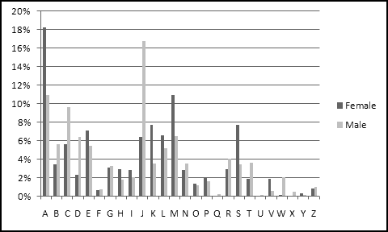
With Letter as the Axis Fields (or Category) and Gender as the Legend Fields (or Series). Now we could switch to the overall histogram (ignoring gender) either by removing Gender from the Columns of the Pivot Table or by removing it from the Legend Fields of the Pivot Chart.
As you'll quickly see if you start making Pivot Charts, changes you make to the Pivot Table like adding Fields or filtering or sorting data are automatically reflected in the Pivot Chart, and vice versa. Sometimes this seems like a feature and other times it seems like a bug.
Goal Seek and Solver
Throughout this book we've mostly been solving problems by starting with known parameters, constructing appropriate formulas, and looking at the outputs. Sometimes, though, you'd like to do the opposite -- start with a desired output, create formulas, and then try to find parameters that produce the output you want.
For example, in our "Closing the Honors Gap" example, we constructed formulas that took as input the threshhold for receiving graduation honors (and also information about the distributions of scores) and then used trial-and-error to choose a threshhold that resulted in equal honors for both schools.
Trial-and-error is rarely an efficient way to solve problems, though, which is why Excel provides Goal Seek and Solver.
Goal Seek
Goal Seek is by far the simpler of the two. It will try to make a specific cell equal a specific value by changing only one other cell.
For example, let's say you want to find a number that when multiplied by itself equals 2. In a new worksheet in cell A2 enter the formula
=A1*A1
Then we just need to find a value for A1 that makes A2 equal to 2.
On the Data ribbon, in the Data Tools section, under What-If Analysis, choose Goal Seek and input those parameters into the menu that pops up.
Click OK, and Excel will try to find a solution to your problem.
It doesn't get you exactly to the goal, but it's pretty close.
Goal Seek doesn't always do what you want, though. If you recall our "closing the honors gap" example, we needed a cutoff level such that NORMDIST(cutoff,85,3,TRUE) and NORMDIST(cutoff,84,5,TRUE) were equal. Using trial-and-error, we found that a cutoff of 86.5 worked.
We can try the same in Goal Seek. In cell A1, put the original cutoff of 90, and in A2 put the difference between the honors percentages:
=NORMDIST(A1,85,3,TRUE)-NORMDIST(A1,84,5,TRUE)
Goal Seek only lets you choose actual values as goals. So when your goal is to set two quantities equal to each other, you have to tell Goal Seek to set their difference to 0.
But when you try to Goal Seek A2 to 0 by changing A1, Excel finds a cutoff of 99.93 (at least on my computer), which turns out to be the solution "don't honor anyone." This (as well as the other trivial solution "honor everyone") both satisfy the goal of honoring both classrooms equally, but they're not the solution we're looking for.
When your Goal Seek problem has multiple solutions, Excel might not choose the one you want, and there's no simple way to force it to prefer one solution over another. For that, you need Solver.
Solver
Solver does everything Goal Seek does, and many things Goal Seek doesn't. As a result, there's not really any reason ever to use Goal Seek. In fact, I'm not sure why I included the previous section.
Installing Solver
For some reason that possibly makes sense to someone, Solver isn't installed by default. If it's installed, you'll find it on the Data ribbon in the Analysis section. If it's not, then possibly there won't even be an Analysis section.
If you can't find Solver, install it using the following steps:
- Click on the Office logo in the top left corner
- Click the Excel Options button at the bottom of the next window
- Choose the "Add-Ins" option on the left of the next window
- Next to where it says Manage, make sure "Excel Add-Ins" is selected and click the Go button
- Check the box by Solver Add-In and click OK
And now you're ready to start solving things!
Using Solver
A Solver problem has three main components.
The first is the Goal. As in Goal Seek, the goal consists of a Target Cell. However, whereas in Goal Seek you needed to specify a target value that you were trying to get that cell to equal, Solver also lets you specify a goal of Max (make the value in the target cell as large as possible) or Min (make the value in the target cell as small as possible). Most of the interesting uses of Solver involve Max or Min.
The second component is the Changing Cells, which are the one or more cells you want Solver to adjust in pursuit of the Goal. While Goal Seek only allowed you to specify a single changing cell, Solver will try changing multiple cells if you ask it to.
The third component is a set of Constraints, which has no analogue in Goal Seek. Constraints can apply to either the cells you want Solver to change (e.g. "only try values between 0 and 1") or cells that depend on what Solver is changing.
Solver also has a variety of technical options that you can tweak; however, unless you really know what you're doing, you probably shouldn't.
Example: Optimal Alchemy
After years of research, you've perfected your lead-into-gold process. Through careful analysis, you've discovered that if you start with l pounds of lead, c cans of Crisco, and h helpers, then you can produce
l * (1 - EXP(-c/100)) * (1 - EXP(-h/50))
pounds of gold.
Your financial backers have given you $300 to produce as much gold as possible. You can get lead for $1/pound, Crisco for $10/can, and helpers for $60 each, and you want to use Solver to figure out how to optimally spend your money.
To start with, let's put all these parameters into a spreadsheet.
All the above are entered as values, except for the cost in C5, which is computed using the formula
=SUMPRODUCT(B2:B4,C2:C4)
In B8 we need to add a formula to calculate the amount of gold our process outputs:
=B2*(1-EXP(-B3/100))*(1-EXP(-B4/50))
And now we're ready to Solver. We'll want to set B8 to a Max by changing cells B2:B4. And our constraints? We'll need to insist that B2:B4 are all non-negative (since you can't use negative amounts of lead or Crisco or helpers), and to enforce our budget, we'll need C5<=C6.
To start with, click the Solver button, fill in the Target Cell and Changing Cells, and click the Max radio button.
Click on the Add button next to the Constraints window, and input the constraint that B2:B4 must be non-negative.
Click the Add button on this menu, input the second constraint C5<=C6, and click OK.
The Solver box will now include your constraints, and you're ready to click Solve.
While it's running, Solver will show progress in the bottom left corner of the Excel window, indicating what step it's on and the value it's solved to.
After several steps it will inform you that it's stopped, and once you click OK you can see Solver's optimal solution.

With our budget (and current prices), we can produce 0.31 pounds of gold.
Integral Constraints
Your investors point out that current labor law forbids you from hiring 1.674 helpers, and that Helpers really needs to be a whole number. Solver has an "int" constraint that will force this.
Click Solver again. Unlike Goal Seek, it remembers the parameters we last used, so we just need to add one more constraint. Click the Add button, choose B4 as the Cell Reference, and as the middle option choose "int." Click OK, and Solve again.
Solver satisfied the new "int" constraint by increasing the helpers to 2, paid for by using less lead and Crisco. This change lost us about 0.1 pound of gold.
There's also a "bin" constraint that allows a cell only to take on the values 0 and 1.
Optimization problems with "int" and "bin" constraints are very difficult, and Solver doesn't always do a good job with them. Use these constraints sparingly.
Some General Solver Tips
Be Constrained
For example, "make A2 as large as possible by changing A1" is a pretty open-ended problem. If you have a constraint like "A1 must be between 0 and 1" then the range of values Excel has to look at is much smaller, and it's much more likely you'll get a good result.
Be Smooth
The smoother the function you're trying to optimize, the better results you'll get. Solver works best when your function has the following two features:
- If some set of inputs produces a certain value, then "nearby" inputs should produce a similar value.
- If tiny increases in one of the inputs result in a larger (smaller) value, then moderately larger increases in the same input should result in a larger (smaller) value still
The first is easier to check, and it's important because it means that inputs near the optimal inputs produce values near the optimal value. This allows Solver to gradually work its way toward an optimum by finding better and better values.
As an extreme (bad) example, imagine trying to maximize the function
=IF(A1=1,1,0)
which equals 0 unless A1 equals 1. This means that when Solver is looking at 0.9 or 0.99 or 0.999, the function value is still 0 and so it has no idea that it's close to the optimal input. Solver is pretty much useless for problems like this.
On the other hand, if you're trying to minimize the formula
=ABS(A1-1)
Which measures how close A1 is to 1, then inputs near 0.5 produce outputs near 0.5, and inputs near 0.9 produce outputs near 0.1, which allows Solver to focus its search nearer the latter and away from the former.
The second condition rules out "jerky" functions that "change direction" frequently.
This called a Weierstrass function, and I approximated it in Excel as
SIN(A1*POWER(2,0))/POWER(2,0)+SIN(A1*POWER(2,1))/POWER(2,1)+ ... +SIN(A1*POWER(2,23))/POWER(2,23)
(Mathematically the sum should go on forever, but Excel chokes once the powers of 2 get too large, so I had to cut it off at 23.)
When Solver is trying to find a Max, it tries to figure out what "direction" to move in in order to increase its output value. When the function is "jerky," the right direction for a small move is often the wrong direction for a larger move, and Solver won't do a good job.
But Don't Be Too Smooth
If your function is completely flat in places, Excel will often call that plateau a max or a min, even if it isn't. Solver uses small changes to figure out how to adjust the parameters; if small changes don't change the function value at all, Solver might decide it's done.
Be Unique
A value can be a local maximum (larger than everything near it) without being a global maximum (larger than everything else). In the jerky function illustrated in the last section, there is a local maximum near the input value 3, but it's plainly not the global maximum.
If the function you're trying to optimize has multiple local maxima, it's likely that Solver will find a local maximum that isn't the global maximum.
Be Diverse
When you have multiple local maxima, the value Solver finds depends on its starting point. You should always try running Solver with several different starting values to find the most optimal optima.
For instance, returning to the jerky function example, if you run Solver with the initial value set to 4, it ends up finding the local maximum near 3.4. But with the initial value set to 0, it finds the global maximum near 0.84.
Be Clever
This is good advice in general, not just when you're using Solver.
Macros, Custom Functions, and Philosophy
Many advanced Excel users are experts at the un-Thinking-Spreadsheet techniques of Macros and Custom Functions. After a philosophy lesson, we'll talk about why you should try to avoid these techniques.
Philosophy
Throughout this book we've tried to emphasize the Thinking Spreadsheet philosophy, which roughly corresponds to the following paradigm:
A spreadsheet is a grid of cells filled with data and formulas. The formulas make it so that the values in some cells depend in a straightforward way on the values in other cells and change in a predictable way as soon as the values they depend on change.
A spreadsheet that relies on its data being sorted breaks this paradigm, as it's possible to make changes to your data that aren't correctly reflected downstream in formulas. Similarly, static menu-driven tools like Regression and Histogram produce outputs that never change even as the underlying data changes, and are accordingly not Thinking Spreadsheet.
Many Excel "power users" are experts at VBA, which is the programming language built into Excel. In a previous life even I was an expert in VBA. Then one day I was meditating and achieved a form of enlightenment that I eventually codified into Thinking Spreadsheet. I realized that the essence of Excel was in analyzing relationships involving structured data, not in writing computer programs. I haven't written a line of VBA code since.
Now, there's nothing wrong with computer programming. I enjoy programming computers as much as you do. But as we've seen throughout this book, the strengths of spreadsheets are based on using formulas to represent relationships. For most spreadsheet-sized data analysis problems, the cleanest, the most effective, the quickest, and the easiest-to-understand solutions are the ones that involve creating formulas. If you're going to use spreadsheets, you should use spreadsheets' strengths.
Of course, when you need to analyze millions of rows of data, coding is probably essential, but with millions of rows of data you wouldn't be using Excel anyway. Part of the Thinking Spreadsheet philosophy is that Excel is an improper outlet for your code-writing urges. Channel them elsewhere.
Macros
Macros are automated sequences of commands. In their simplest form they don't require any programming, as you can simply "record" and "replay" them. For instance, you could record the sequence
- Insert a new column between columns F and G
- Copy the data from column A
- Paste-Value it into the new column G
and assign it to a certain key combination, so that (for example) whenever you entered Ctrl-Alt-I, Excel repeated the above sequence of steps. If you want to get more elaborate, you can write computer code to specify the steps the macro should take.
As should be clear by now, actions like this break the spreadsheet paradigm. Furthermore, they make your spreadsheets terrifically opaque. There's no obvious indication that Ctrl-Alt-I does something special, and you're likely to forget about it if you don't open the spreadsheet for a long time.
It's possibly even worse if you remember it, as there's no simple way to understand what the macro actually does. You'd have to go into the Visual Basic window (Alt-F11), find the appropriate code, and then try to figure out what happens when you run it. In short, by using macros you forfeit many of the features that make spreadsheets useful, and you make your spreadsheets harder to understand and easier to break. Please avoid them.
Custom Functions
The other reason some people write code in Excel is to create custom functions. When SUM() and EXP() and VLOOKUP() don't meet their needs, they write their own functions, often with clever names like VLOOKUP2() and VLOOKUP3() and VLOOKUPJOEL(). This is a guaranteed way to make your spreadsheets difficult to understand, since most people looking at your work won't know what VLOOKUPJOEL() does.
I'm willing to be slightly accommodating here. If you work in some sort of organization that routinely requires additional functions, then I have no objection to your adopting a standard set of shared custom functions. For instance, serious financial modelers often use third-party add-ins that provide a huge range of custom functions that do things like option pricing and curve bootstrapping. To the extent these functions are truly shared, they become part of your local version of Thinking Spreadsheet, and (insofar as everyone with whom you share your spreadsheets uses them) they don't make your spreadsheets any more difficult to understand.
However, this does not give you license to write your own personal custom functions, a practice that violates the principles of Thinking Spreadsheet just as do macros. Get it done with standard formulas or don't do it in Excel.
Final Projects
Here are some data analysis problems for you to apply what you've learned. Because data I find on the web today might not be there for you tomorrow, I've made the relevant datasets available at ThinkingSpreadsheet.com. I'll also keep posting new projects on the website as I come up with them.
Counting Letters
The file WordList.txt shows approximately 100,000 "crossword words." Create a histogram showing how many times each letter appears in the list. Make sure to count every letter of every word, not just the first letters.
Where's Starbucks?
The file Starbucks.csv contains the Address, Latitude, Longitude, and City of every known Starbucks as of sometime in 2006. The City field contains data like "New York New York 10119" and "Toronto Ontario M5C 2W5" and "Vienna Vienna 1210."
Find a way to classify every Starbucks as "US," "Canada," or "Other." A quick, simple method that is occasionally wrong is preferable to a perfect method that takes all day.
After this, extract the State and build a histogram to find which states had the most Starbucks.
Using the longitude and latitude data, find the Starbucks location with the greatest number of other Starbucks nearby. You'll have to decide how to define and measure "nearby."
Soccer Standings
The file MLS.txt contains the results of what should be every Major League Soccer game from 2009. It's not in a very pleasant format, though. It has lots of unnecessary asterisks, and the data are all crammed together in one column. The fields are as follows:
- Date of Game
- Home Team
- Home Team Goals
- Away Team Goals
- Away Team
First, clean and transform the data so that each row corresponds to a single game.
After that compute each team's record of wins, losses, and ties. Find the records just for home games, just for away games, and overall. Similarly, compute each team's goals scored and goals allowed.
Soccer teams are ranked by "points," where each win counts as 3 points and each tie counts as 1 point. Investigate whether goals scored and goals allowed can be used (either separately or together) to predict wins, losses, ties, or points.
JOLTS
The file JOLTS.xlsx contains data from the government's Job Openings and Labor Turnover Survey. The "Data" tab contains the actual survey results. Each data series has an ID like JTS00000000HIL. The "Series" tab contains descriptive details about each series, with one row per Series ID. Looking there, you'd find that the previously mentioned series has a dataelement_code of "HI." This is actually a lookup key; if you find "HI" in the DataElement tab, you'll see that it represents Hires.
Use these data to figure out which industries are growing. In particular, look at industry-by-industry growth in Job openings from the 2006-2007 time period to the 2008-2009 time period.
As a first step, Table the data in the Data tab. Add a column to show what Data Element each row represents. You'll need to first use series_id to figure out each row's dataelement_code, then dataelement_code to figure out the corresponding dataelement_text. Go through a similar two-step process to bring in Industry, at which point you can create a Pivot Table of the data.
Put Industry and series_id as Column Labels and use Report Filter to show only the "Job openings" series. You'll find that there are still four series left for most of the industries (but only two for some of them). Add whatever additional fields you need to filter down to just the one relevant series per Industry.
With the appropriate filters in place, create 2006-2007 and 2008-2009 buckets and compare them by Industry. Where are the jobs?
If you want to explore these data further, the Description tab contains all the details you should need.
Economic Assistance
The file EconomicAssistance.csv contains foreign aid data since 1946, broken down by recipient country and program. Each year's data is in its own column, which isn't a good format to use in a pivot table.
Transform the dataset into a pivot-able format. You should end up with four columns of data: Country, Program, Year, and Amount. Delete any rows with zero Amounts and build a pivot table. Find the biggest aid recipients and best-funded programs at five-year intervals from 1950 up to 2005. Are they what you expected?
Proposition 8
The file Prop8.csv lists the contributions both for and against California's Proposition 8, which outlawed same-sex marriage.
Similar Zip Codes tend to be near each other, which means that you can use "First three digits of Zip Code" as a decent proxy for Location. Add this field to the data, and then investigate which parts of California strongly supported the proposition, which parts strongly opposed it, and which parts were more ambivalent. Does it make more sense to look at total contributions or number of contributions?
Outside of California, which states were most supportive and most opposed? Which locations outside of California were most interested in the outcome?
The 4-Minute Mile
The file Mile.xlsx contains all the official IAAF-era world records for running the mile, both for men and women.
I copied them from Wikipedia, which has an unfortunate tendency of putting junk in its tables. Here, some of the Times have asterisks, and all of the Dates have footnotes, so you'll need to clean both those columns.
For each Date in the data, find the Male record and Female record as of that date. (There's a way involving running totals that requires the data to be sorted, and a way involving array formulas that doesn't.)
Examine how the difference between the Male record and the Female record is changing over time. What's the longest time that the Male record has gone without improving? The Female record? At present, how long has it been since either has changed?
Population Growth
The file Population.csv contains the world population for every year from 1950 to 2010. The growth doesn't seem to be linear, since population doesn't increase by the same amount each year.
Compute the year-over-year log changes. Since they're not constant, the growth isn't exponential either. Extrapolate the recent trend in the log changes to predict future population growth. What does your model predict the population will be in 2050? Does the population in your model ever reach 10 billion? When does it peak, if ever?
The file Tweets.txt contains a filtered subset of the output of Twitter's sample feed during the 2010 State of the Union Address. To get it down to a manageable size, it only includes lines that contain one of the terms "president," "state," "union," "speech," "obama," or "sotu."
Get the tweets into Excel. Examine the data and find a way to extract just the text of each tweet, the username of its tweeter, and its language. Who were the most prolific tweeters?
Tweeters often decorate their tweets with #hashtags, which always start with a # and end at a space or punctuation or the end of the tweet. Create a histogram showing the most popular hashtags in these tweets. Some tweets contain multiple hashtags and some tweets contain none, so make sure to deal with both situations.
What Color is Baby Poop?
The folks at CrowdFlower showed 10,000 color samples to people and asked them to name the colors.
http://blog.crowdflower.com/?p=11
You can find their results in the file ColorNames.csv. Colors on computers are typically specified in terms of how much red, green, and blue they contain. These are captured here in the columns r, g, and b, whose values are between 0 and 1.
Workers 7, 8, and 20 each labeled a different color as "baby poop." Use the dataset to figure out less ambiguous names for each of these colors.
About the Author
Joel Grus lives in Seattle, where he builds spreadsheets and writes books.
If you have any questions or comments or feedback about Thinking Spreadsheet, he would love to hear from you.
You can email him at joelgrus@gmail.com or visit the book's website at ThinkingSpreadsheet.com.